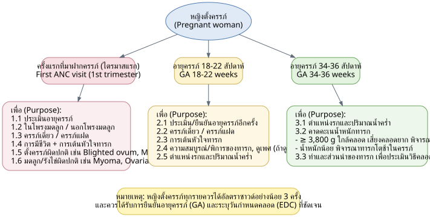
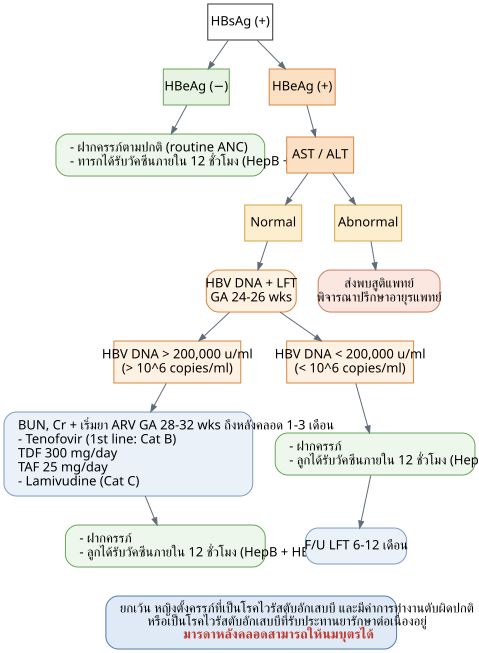
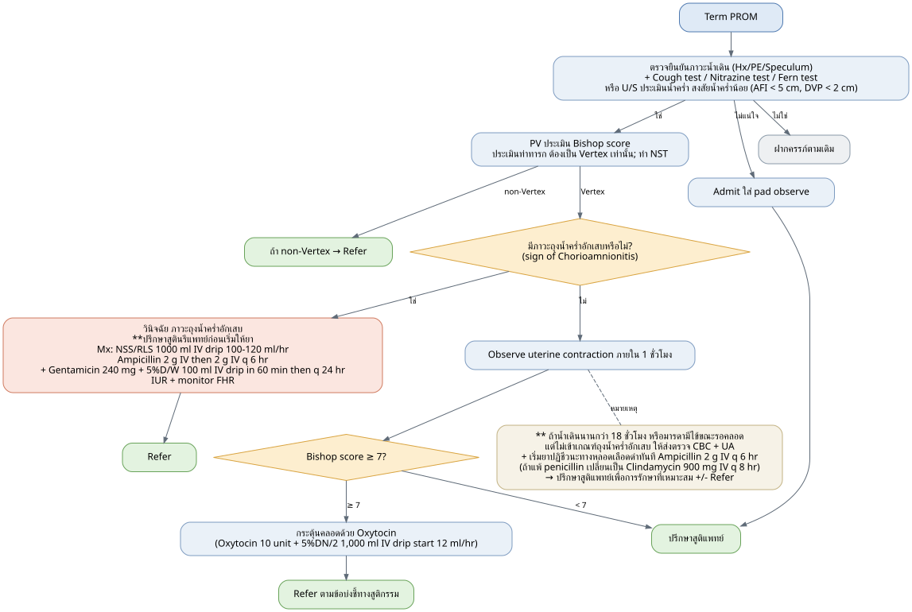
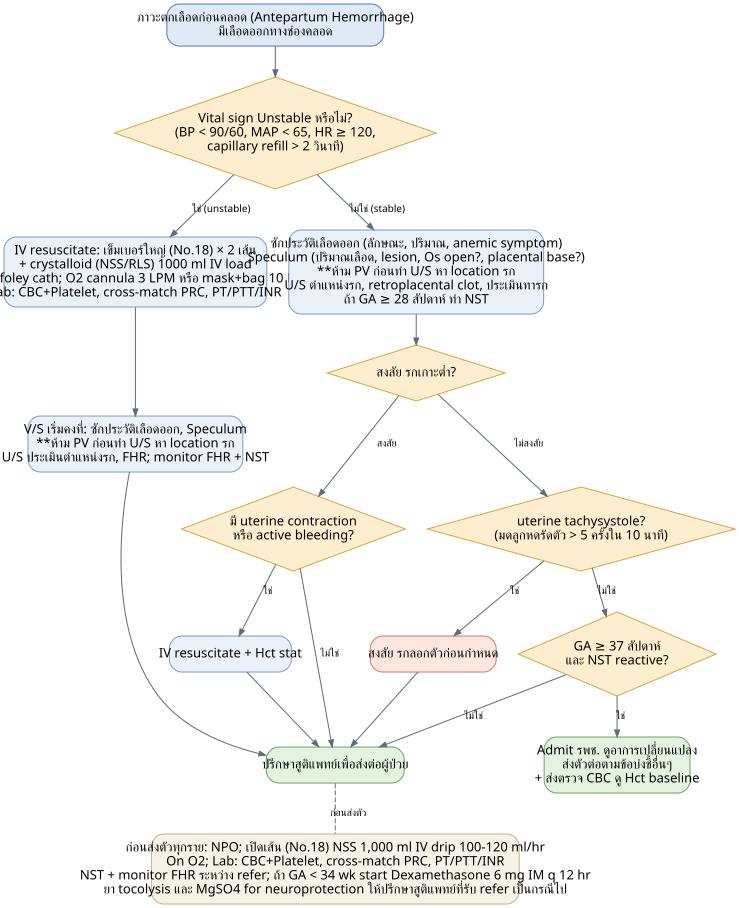

Introduction / บทนำ
จากการที่ผู้เรียบเรียงได้มีการสอนนิสิตแพทย์ ปี 4-5-6 และ Intern ที่มาเวียน Rotation สูติฯ โรงพยาบาลพิจิตร
แล้วพบว่ายังมี Knowledge Gaps สำหรับความรู้พื้นฐาน จึงอยากที่จะถ่ายทอดให้น้อง ๆ ได้เรียนรู้ เข้าใจในหลักการทางสูติศาสตร์และนรีเวชวิทยา ได้โดยง่ายและรวดเร็ว เพื่อการดูแลรักษาผู้ป่วยให้มีความปลอดภัย ลดภาวะแทรกซ้อนที่อาจเกิดขึ้น
ทั้งนี้ผู้เรียบเรียงขอขอบพระคุณ ครูบาอาจารย์ และ ผู้จัดทำแหล่งความรู้ต่างๆ ทุกท่านตามการอ้างอิงในบรรณานุกรม
(Bibliography & Sources) ที่มีคุณูปการเป็นอย่างยิ่ง สำหรับการประสิทธิ์ประสาทวิชานี้
ก่อนนำไปใช้จริง ควรตรวจสอบกับแนวทางเวชปฏิบัติของราชวิทยาลัยสูติฯ และ แนวทางเวชปฏิบัติของโรงพยาบาล/สสจ. (Local Guidelines) ด้วย
คำชี้แจง: Pocket book นี้ มีไว้ สำหรับ การใช้ภายใน เท่านั้น และ ไม่ได้มีจุดประสงค์สำหรับ เชิงการค้า
เนื้อหาต่างๆ อาจไม่สมบูรณ์ 100% ซึ่งจะดีขึ้นเรื่อยๆ เมื่อได้รับ Feedback จากการ "แนะนำการแก้ไข" หรือ "แสดงความคิดเห็น"
จากผู้ศึกษาร่วมด้วย ผ่านการกด "แนะนำ" ที่หัวข้อดังกล่าว หรือ กดคลิกขวา (ในคอมพิวเตอร์) หรือ กดค้าง (ในมือถือ) จากนั้นกดที่ปุ่ม ดังภาพ ครับ
Teaching revision · 4 ตุลาคม 2569 · สูตรยาและ flow ที่แก้มีแหล่งอ้างอิงกำกับ
Part 1 - Obstetrics
1.1 Goals of Antenatal Care (ANC)
แนวคิดหลัก (Key concept): เป้าหมายของการฝากครรภ์มี 4 ข้อ ใช้เป็นโครงในการดูแลทุก visit
The 4 basic goals
- Confirm GA - establish a certain gestational age.
- Maternal well being - issues related to pregnancy or OB complications: N/V, abdominal discomfort, back pain, nutrition, elderly pregnancy, GDM, PIH.
- Fetal well being - FHR, EFW (estimated fetal weight), FH (fundal height), FMC (fetal movement count).
- Maternal complications from other disease - medical, surgical, or gynecological conditions.
อธิบาย : ทุกครั้งที่ตรวจ ANC ให้ไล่ 4 ข้อนี้เป็น checklist: (1) อายุครรภ์แน่ไหม (2) แม่เป็นอย่างไร (อาการ/ภาวะแทรกซ้อนจากการตั้งครรภ์) (3) ลูกเป็นอย่างไร (FHR, EFW, FH, นับลูกดิ้น) และ (4) โรคอื่นของแม่ที่อาจกระทบการตั้งครรภ์ จะช่วยให้ไม่ตกหล่นประเด็นสำคัญ
1.2 How to Confirm a Certain Gestational Age
แนวคิดหลัก (Key concept): GA ที่แน่นอนเป็นพื้นฐานของการตัดสินใจทุกอย่างทางสูติศาสตร์ (postterm, IUGR, การคลอด)
Clues used to confirm GA
- Certain LMP - well-remembered LMP, regular menses > 3 cycles, no hormonal contraception.
- PV in 1st trimester - uterine size consistent with dates.
- Regular ANC with dates that agree with tape (fundal height) measurement.
- U/S in the 1st half of pregnancy (most reliable dating window).
- Quickening - G1 (primigravida) 18-20 wks; multigravida 16-18 wks.
- Birth weight stable at term, and near term lightening / engagement.
Heart tone (Doppler 10-12wk, Steth 17-19wk, FHR 110-160); Ultrasound; Movement (physician-palpated, ~20wk)
EFW as a rough GA guide
| Estimated fetal weight | Approximate GA |
|---|---|
| 1000 g | ≈ 28 weeks |
| 2000 g | ≈ 34 weeks |
| 2500 g | ≈ 37 weeks |
| 3000 g | ≈ term |
| 3500 g | ≈ postterm or large fetus |
อธิบาย : ลำดับความน่าเชื่อถือ: LMP ที่แน่นอน + U/S ครึ่งแรกของการตั้งครรภ์ ถือว่าดีที่สุด ส่วน EFW/quickening ใช้ประกอบเมื่อมาฝากครรภ์ช้า ตัวเลข EFW ข้างต้นเป็นค่าโดยประมาณไว้กะคร่าว ๆ ไม่ใช่เกณฑ์วินิจฉัย
U/S for dating is most accurate in the 1st trimester (parameter = CRL) ; 2nd-trimester dating uses BPD, HC, AC, FL.
GA by U/S vs LMP: trust the LMP when U/S differs by no more than 1 wk (1st TM), 2 wk (2nd TM), or 3 wk (3rd TM);
otherwise reassign dates by U/S.
1.3 Obstetric Ultrasound (basics)
แนวคิดหลัก (Key concept): Purpose changes by trimester: confirm/date in 1st, screen anatomy in 2nd, assess fetal well-being in 3rd.
By trimester
- 1st trimester: confirm pregnancy (normal, ectopic, DFIU, blighted ovum, twins); dating by CRL (most accurate); nuchal translucency for aneuploidy.
- 2nd trimester: dating by BPD, HC, AC, FL; anomaly scan at 18-20 weeks (before bone calcification causes acoustic shadows, and early enough to allow termination if needed).
- 3rd trimester: fetal well-being - fetal growth scan, biophysical profile (BPP), and antepartum FHR monitoring (NST).
Biophysical profile (BPP)
- Five components: fetal breathing, fetal movement, fetal tone, amniotic fluid volume, and NST.
- Modified BPP = amniotic fluid index (AFI) + NST.
อธิบาย : กฎการกำหนดอายุครรภ์ (Dating) ที่ใช้บ่อย :
ให้เชื่อ LMP เมื่อ U/S ต่างจาก LMP ไม่เกิน 1/2/3 สัปดาห์ใน 1st/2nd/3rd trimester ตามลำดับ (แบบจำง่าย)
ส่วนในตาราง ACOG 2017 จะเป็นแบบละเอียด ซึ่งจะจำยากกว่าหน่อย
เพิ่มเติม
- การ Dating ใน 1st trimester จึงเป็นสิ่งที่แม่นยำที่สุด
- การ Correct Date ใน 3rd trimester โดยเฉพาะในเคส no ANC / Late ANC ต้องระมัดระวัง undetectable IUGR
จาก U/S ที่บ่งชี้ว่ายุครรภ์น้อย / ตัวเล็ก ทั้งที่จริงๆ แล้ว LMP ถูกต้อง (เช่น GA by LMP 36 weeks แต่ U/S ได้ 32 weeks น้ำหนักตัว 1700gm)
Timing of first appearance of gestational landmarks on ultrasound
| Structure | TVS (earliest, wk) | TAB (earliest, wk) |
|---|---|---|
| Gestational sac | 4.5 - 5 | 6 |
| Measurable Embryo | 5.5 - 6 | 7 |
| Heart activity | 6 - 7 | 8 |
Reassigning EDD based on LMP date vs ultrasound discrepancy (ACOG 2017):
| Gestational age (weeks+days) by first day of LMP | Change LMP-based EDD to U/S-based EDD if U/S GA differs from LMP GA by more than: |
|---|---|
| ≤8+6 | 5 days |
| 9+0 to 13+6 | 7 days |
| 14+0 to 15+6 | 7 days |
| 16+0 to 21+6 | 10 days |
| 22+0 to 27+6 | 14 days |
| ≥28+0 | 21 days |
EDD: estimated date of delivery; LMP: last menstrual period. Data from: American College of Obstetricians and Gynecologists. Committee Opinion No 700: Methods for Estimating the Due Date. Obstet Gynecol 2017;129:e150.
1.4 Hyperemesis Gravidarum
Hyperemesis gravidarum เป็นอาการคลื่นไส้อาเจียนรุนแรงที่กระทบการกิน/ดื่มและการดำเนินชีวิต ประเมิน dehydration, nutrition และสาเหตุอื่น ไม่ใช้ ketonuria เป็นตัวชี้ความรุนแรง
- ประเมินอาการและ intake, น้ำหนัก/การลดน้ำหนัก, vital signs, urine output, electrolytes และ renal function; ใช้ PUQE/HELP เมื่อเหมาะสม
- หากปวดท้อง ไข้ อาการเริ่มผิดช่วง หรือมี focal signs ให้ค้นหาสาเหตุอื่น; ultrasound/thyroid/liver tests ตามข้อบ่งชี้
- รักษาด้วย antiemetic ที่เหมาะสม สารน้ำและ electrolyte correction; ให้ thiamine ในผู้มีอาเจียนนาน/ขาดสารอาหาร โดยเฉพาะก่อน dextrose
- Admit เมื่อขาดน้ำ/เสียสมดุลรุนแรง กินยา/น้ำไม่ได้ หรือดูแล OPD ไม่สำเร็จ; ประเมิน VTE risk, nutrition support และสภาพจิตใจ
- ให้การสนับสนุนผู้ป่วย ไม่อธิบายว่าเป็นโรคจากจิตใจหรือการกลับมารักษาเกิดจากสภาพแวดล้อมโดยไม่มีหลักฐาน
เอกสารอ้างอิง · RCOG 2024: NVP and hyperemesis
1.5 Down Syndrome Screening & NIPT
Aneuploidy screening ประเมินความเสี่ยง; ผลคัดกรองไม่ใช่ diagnosis และผลลบไม่ตัด fetal anomaly ทุกชนิด
| การตรวจ | สิ่งที่ต้องอธิบาย |
|---|---|
| First-trimester combined screening | ใช้ maternal age, NT และ serum markers ตามช่วง GA ของโปรแกรม |
| Second-trimester serum screening | Quad test ตามช่วง GA ของโครงการ; ผล high risk ให้ genetic counseling และหารือ diagnostic testing |
| cfDNA / NIPT | เริ่มได้ราว 10 สัปดาห์ตาม assay; 20 สัปดาห์ไม่ใช่ขอบบนทางชีววิทยาสากล ผล positive/no-call ต้องประเมินต่อด้วยผู้ชำนาญ |
| CVS / amniocentesis | เป็น diagnostic sampling; เลือกตาม GA และข้อบ่งชี้ CVS โดยทั่วไป 11-13+6 สัปดาห์ (ไม่ก่อน 10) และ amniocentesis ตั้งแต่ 15 สัปดาห์ |
Counseling เรื่อง miscarriage ต้องแยก background risk จาก additional procedure-related risk: RCOG ระบุว่าหัตถการ CVS/amniocentesis ในครรภ์เดี่ยวโดยผู้ชำนาญมี additional risk โดยทั่วไป <0.5%; ใช้ข้อมูลของหน่วยบริการและบริบทผู้ป่วย ไม่อ้าง CVS 1-3% เป็นความเสี่ยงจากหัตถการในทุกคน.
Ultrasound structural survey ยังคงมีบทบาทแม้ NIPT low risk; soft marker ต้องแปลร่วมกับผล screening และความเสี่ยง ไม่สั่ง invasive testing จาก marker เดียวโดยไม่มี counseling.
เอกสารอ้างอิง · RCOG: Amniocentesis and CVS
1.6 Neural Tube Defect
Incidence about 1/1,000 live births; Anterior neuropore defects (anencephaly, encephalocele) vs Posterior neuropore (spina bifida)
Risk factors & recurrence risk
| Risk | % |
|---|---|
| Hx pregnancy with NTD | 2-3 |
| Partner with NTD | 2-3 |
| DM type 1 | 1 |
| Valproic acid exposure | 1 |
| Close relative with NTD | 0.3-1 |
| Prior child with NTD (recurrence) | 3-5 (95% of NTD have no FHx) |
| Parent affected | 5 |
| 2 prior children with NTD | 10 |
Prevention: Low risk - folic acid 400 μg/day; High risk - 4 mg/day starting 3 months pre-conception (folic acid does NOT prevent valproic-acid-induced, overt-DM-induced, or 1st-trimester-fever/sauna-induced NTD)
Screening: MSAFP (GA 15-20wk, low specificity); 2nd trimester U/S signs - Lemon sign (frontal bone scalloping), Banana sign (cerebellar effacement); Amniocentesis = gold standard
Delivery: Elective C/S after lung maturity; neurosurgery within 72 hours (infection/meningitis risk affects IQ)
1.7 TORCHeS Infections
Mnemonic: Toxoplasmosis, Others (VZV, Parvovirus B19), Rubella, CMV, HSV/HIV, Syphilis
Routes: Transplacental; Ascending from vagina (risk↑ with ruptured membranes)
Common complications: Preterm delivery, CNS abnormalities (deafness, congenital cataract), anemia, jaundice, hepatosplenomegaly, growth retardation
| Disease | Key features | Diagnosis | Treatment |
|---|---|---|---|
| Toxoplasmosis | Hydrocephalus, intracranial calcifications, chorioretinitis, ring-enhancing CT lesion | Serology | Pyrimethamine + sulfadiazine; prevention: avoid cat feces, Spiramycin in 3rd trimester |
| Rubella | Classic triad: hearing loss, cataracts, PDA; blueberry muffin rash; fetal infection >80% (1st tri, <12 wk), 54% at 13-14 wk, 25% (late 2nd tri), rising again in 3rd tri (35% at 27-30 wk to ~100% >36 wk); congenital defects mainly if infected <16 wk (all if <11 wk) | IgG 4-fold rise, IgM; fetal PCR/CVS | Symptomatic; prevent by pre-pregnancy vaccination |
| CMV | Petechial rash, periventricular calcifications, microcephaly | Urine culture, amniotic PCR, serology | Postpartum ganciclovir; no effective vaccine yet |
| HIV | Often asymptomatic infant initially; recurrent infections | ELISA, Western blot | HAART antepartum + zidovudine intrapartum; avoid breastfeeding |
| HSV | Skin/eye/mouth infections; life-threatening if CNS/systemic | Serology | Acyclovir; C/S for all active lesions |
| Congenital syphilis | Saber shins, saddle nose, Hutchinson's triad (peg-shaped central incisors) | Darkfield, VDRL/RPR screen, FTA-ABS/TPHA confirm | Penicillin G (dosing per maternal/neonatal protocol) |
1.8 Rh Incompatibility
แยก unsensitized RhD-negative ที่ต้องพิจารณา anti-D prophylaxis ออกจาก clinically significant maternal antibodies ที่ต้องประเมิน fetal anemia
- ตรวจ blood group และ antibody screen; ถ้า positive ระบุชนิด antibody, level/titer, ประวัติทารกเดิมได้รับผล และ fetal antigen risk
- Anti-D prophylaxis ใช้ตามข้อบ่งชี้ เวลา ผล fetal/newborn RhD และผลิตภัณฑ์ของโรงพยาบาล ปรับตาม fetomaternal hemorrhage เมื่อจำเป็น
- หากเสี่ยง fetal anemia ให้ส่งต่อ MFM และติดตาม MCA-PSV ตามข้อบ่งชี้; ค่า >1.5 MoM หรือ hydrops ต้องประเมินโดยผู้เชี่ยวชาญ
- ไม่ใช้ serial amniocentesis เป็นเส้นทาง routine จาก titer 1:64 อย่างเดียว; critical titer/level ต่างกันตาม antibody และประวัติครรภ์
เอกสารอ้างอิง · BSH 2025: Red-cell antibodies in pregnancy
1.9 Thalassemia in Pregnancy
แนวคิดหลัก (Key concept): คัดกรอง OFT + DCIP ที่ ANC แรก → ถ้าผลบวกตรวจคู่สมรส → Hb typing/MCV แปลผล → ให้คำปรึกษาคู่เสี่ยงสูงเพื่อทำ PND
1. Screening tests
OFT and DCIP. Routine 1st ANC labs: CBC with OFT, DCIP, VDRL, HBsAg, Anti-HIV.
2. If OFT or DCIP positive
Test OFT and DCIP of the spouse. If also positive, further work up the couple: CBC, Hb typing.
3. Interpreting the work-up
Use Hb typing, MCV, blood smear pattern, and inclusion body.
| Hb typing | %A2 | MCV | Anemia | Possible Dx / notes |
|---|---|---|---|---|
| A2A | < 4 | > 80 | No | Normal or α-Thal 2 (Dx by PCR) |
| A2A | < 4 | < 80 | Mild | α-Thal 1 |
| A2A | < 4 | < 80 | Marked | Hb H (usually noted as HbH) |
| A2A | > 4 | < 80 | Mild | β-Thal minor |
| A2A | > 4 | < 80 | Marked | β-Thal major |
| EA | %E > 10 | ± 80 | Usually no | E trait |
| EE | %E > 70 | ± 80 | Usually no | E disease |
Note: the %A2 cut-off for diagnosing β-Thal is highly lab-dependent. Other patterns may require a hematologist.
4. High-risk couples (counsel for prenatal diagnosis)
| Possible fetal Hb typing | Usual couple typing |
|---|---|
| Hb Bart (hydrops fetalis) | α-Thal 1 + α-Thal 1; or α-Thal 1 + Hb H |
| β-Thal major | β-Thal trait + β-Thal trait |
| β-Thal / E | β-Thal trait + EA or EE |
อธิบาย : เป้าหมายคือค้นหา คู่เสี่ยงสูง ที่ลูกอาจเป็นชนิดรุนแรง 3 โรค คือ Hb Bart's hydrops fetalis, β-Thal major และ β-Thal/E disease เมื่อพบคู่เสี่ยงต้องส่งทำการวินิจฉัยก่อนคลอด (PND) เริ่มจากคัดกรองง่าย ๆ ด้วย OFT/DCIP ที่ฝากครรภ์ครั้งแรกเสมอ
Keynotes - ลำดับขั้นตอนการดูแล
- Step I: Screen with OFT, DCIP.
- Step II: Confirm with CBC, Hb typing, MCV.
- Step III: Interpret properly.
- Step IV: Counsel high-risk couples.
1.10 Thalassemia - Full Hb-Typing Interpretation Table
Severe disease combinations requiring screening: Homozygous α-thal-1 (Hb Bart's hydrops); Homozygous β-thal; β-thal/Hb E
Screening: MCV (≥80 fL normal; HbE trait can still show MCV 75-85, so MCV alone can't screen out E trait); MCH >27 pg; DCIP (detects unstable Hb: HbE, HbH, Hb Bart's)
Hb Typing Interpretation
| Hb typing | MCV (fL) | Interpretation |
|---|---|---|
| A₂A, HbA₂<4% | ≥80 | Normal or non-significant thalassemia |
| A₂A, HbA₂<4% | ≤80 | Normal typing, not r/o α-Thal |
| A₂A, HbA₂ 4-8% | ≤80 | β-Thal trait ± α-Thal |
| EA, HbE≥25% | ≤80 or normal | HbE trait (definite) |
| EA, HbE<25% | ≤80 | HbE trait ± α-Thal |
| EE, HbE≥80%, HbF≤5% | ≤80 | HbE/HbE ± α-Thal |
| CSA,A | ≤80 or normal | Suspected Hb CS |
| A,A H or A,A Bart's | ≤80 | Hb H disease |
| A,F (age>1yr) | ≤80 | β⁰/β⁰ ± α-Thal |
| EF (HbE 40-80%, HbF 20-60%) | ≤80 | β⁰/HbE |
1.11 Diabetes Mellitus (DM) in Pregnancy
แยก pre-existing type 1 / type 2 ออกจาก GDM และแยกเกณฑ์วินิจฉัยออกจากเป้าหมายการรักษา
| เรื่อง | หลักที่ต้องจำ |
|---|---|
| GDM A1 / A2 | A1 คุมด้วยอาหาร/กิจกรรม; A2 ต้องใช้ยา ไม่แบ่งด้วย FBS 95 หรือ 105 ค่าเดียว |
| Two-step screening | 50 g GCT ตาม threshold ที่หน่วยงานเลือก (ใน flow ท้องถิ่นนี้ ≥140 mg/dL ส่ง 100 g OGTT); Carpenter-Coustan ผิดปกติเมื่อ ≥95/180/155/140 mg/dL ที่ fasting/1/2/3 ชั่วโมง และ ≥2 ค่า |
| Treatment targets | ตัวอย่างเป้าหมายที่ใช้ทั่วไป: fasting <95, 1-hour <140 หรือ 2-hour <120 mg/dL โดยป้องกัน hypoglycemia และปรับรายบุคคล |
| Glucose monitoring | จัด SMBG/CGM ตามชนิดโรคและยา เช่น fasting + หลังอาหารสำหรับ GDM; ผู้ใช้ multiple-dose insulin ต้องประเมินก่อนอาหาร/ก่อนนอนเพิ่มเติม ไม่ใช้ clinic glucose ทุก 4 สัปดาห์แทน self-monitoring |
| ANC / delivery | ติดตาม growth และ fetal wellbeing ตามความเสี่ยง; timing of delivery ขึ้นกับชนิดโรค การคุม glucose ยา และภาวะแทรกซ้อน ไม่สั่งคลอด 38 สัปดาห์เหมือนกันทุกคน |
ระหว่างคลอด
กำหนด glucose target, ช่วง DTX และ insulin/dextrose infusion ร่วมกับทีม ตรวจถี่ตาม protocol โดยเฉพาะผู้ได้รับ insulin/NPO; ผู้ป่วย type 1 ต้องมีแผน basal/IV insulin ต่อเนื่อง ไม่หยุด insulin ทั้งหมดโดยไม่มี replacement.
ความต้องการ insulin ลดลงหลังคลอด ต้องติดตาม glucose และ hypoglycemia โดยเฉพาะระหว่างให้นม
มักหยุดยาลดน้ำตาลหลังคลอด ตรวจระดับน้ำตาลและนัด 75 g OGTT ที่ 4-12 สัปดาห์
ยังต้องได้รับ insulin: ปรับขนาดกับทีมรักษา ห้ามสั่งหยุดแล้วเปลี่ยนเป็นยากิน
ปรับ insulin/ยากินตาม glucose, renal function และ breastfeeding ไม่ใช้คำสั่งเดียวกับ GDM
แจ้งผลและแผนส่งต่อคลินิกเบาหวาน; หาก GDM ผลหลังคลอดปกติ ยังต้องคัดกรองระยะยาว
A1 = คุมด้วยอาหาร/กิจกรรม | A2 = ต้องใช้ยา ไม่แบ่งด้วย FBS ค่าเดียว
เปิดภาพ SVG สำหรับขยายหรือพิมพ์ ↗| 75 g OGTT หลังคลอด (nonpregnant ADA thresholds) | การแปลผล |
|---|---|
| Fasting <100 และ 2-hour <140 mg/dL | อยู่ในช่วงปกติของการทดสอบนี้ |
| Fasting 100-125 หรือ 2-hour 140-199 mg/dL | Prediabetes; นัดติดตาม/ลดความเสี่ยง |
| Fasting ≥126 หรือ 2-hour ≥200 mg/dL | เข้าเกณฑ์ diabetes; ยืนยันตามบริบท/แนวทางเมื่อไม่มี unequivocal hyperglycemia |
GDM: นัด 75 g OGTT 4-12 สัปดาห์หลังคลอด (local appointment อาจ 4-6 สัปดาห์) และคัดกรองระยะยาว. คุมกำเนิดเลือกตามความต้องการและ MEC ไม่ถือว่า IUD/OCP ห้ามใช้ใน PGDM ทุกคน.
เอกสารอ้างอิง · NICE NG3: Diabetes in pregnancy · NIDDK: Diabetes diagnostic thresholds · CDC: U.S. MEC 2024
เอกสารอ้างอิง · ACOG: Gestational diabetes follow-up
Two-Step vs One-Step Diagnostic Approach
Two-step approach (Carpenter-Coustan): 50g 1hr GCT (≥140 abnormal) → 100g OGTT - positive if ≥2 of 4 values abnormal:
| Time | Threshold |
|---|---|
| FBS | ≥95 mg/dl |
| 1hr | ≥180 mg/dl |
| 2hr | ≥155 mg/dl |
| 3hr | ≥140 mg/dl |
One-step approach (HAPO study): 75g OGTT - abnormal if ≥1 value at Fasting/1hr/2hr = 92, 180, 153 mg/dl
High risk criteria for early screening: Strong FHx T2DM, obesity (BMI≥27, Thai-adjusted risk cutoff), impaired glucose metabolism, glucosuria, previous GDM. All pregnant Thai women are at least Moderate risk (Thailand = GDM-endemic).
1.12 Heart Disease in Pregnancy
แนวคิดหลัก (Key concept): แยกอาการของครรภ์ปกติออกจากโรคหัวใจจริง → ANC เลี่ยงปัจจัยกระตุ้น HF → คลอดทางช่องคลอดโดยย่น 2nd stage + BE prophylaxis
1. How to diagnose heart disease in a pregnant woman
- Known case: pathology, severity, functional class (FC), medication.
- S&S of normal pregnancy mimicking HD: respiratory effort, lower-extremity edema, functional systolic murmur.
- S&S indicating heart disease - symptoms: severe progressive dyspnea, orthopnea, paroxysmal nocturnal dyspnea, hemoptysis, syncope on exertion.
- Signs: cyanosis, clubbing, persistent neck-vein distension, systolic murmur ≥ gr 3/6, diastolic murmur, cardiomegaly, sustained arrhythmia, persistent split S2, pulmonary HT, Lt parasternal lifting, loud P2.
Action: Hx, PE, consult a cardiologist to confirm if suspected.
2. Who to counsel regarding termination of pregnancy
- Pulmonary HT.
- Aortic coarctation with valvular involvement.
- Marfan syndrome with aortic involvement.
- Functional class III-IV.
3. ANC
- Avoid precipitating causes of heart failure (e.g. infection, anemia).
- Advise S&S of heart failure (sudden reduced ability to do usual duties, increasing dyspnea, severe cough).
- Drugs C/I in pregnancy: warfarin (change to heparin), beta-blocker, ACE inhibitor, thiazide (late 3rd TM).
- U/S monthly from 32 wks, NST regularly.
4. Labor and delivery
- Vaginal delivery unless an obstetric indication for C/S.
- Semi-Fowler position with lateral tilt.
- Frequent V/S - RR > 24, HR > 100 may suggest impending heart failure.
- Pain relief: early sedation. Shorten 2nd stage (F/E, V/E).
- If C/S: epidural preferred over GA; spinal anesthesia not recommended.
5. BE prophylaxis & anticoagulant
- Routine IE (bacterial endocarditis) prophylaxis is NO LONGER recommended for vaginal or cesarean delivery (AHA/ACOG); reserve for the highest-risk cardiac lesions only. Historical regimen (for reference): Ampicillin 2 g IV + gentamicin 1.5 mg/kg (max 80 mg) 30 min before delivery, then amoxicillin 1.5 g PO or ampicillin 1 g IV 6 hr later.
- BE prophylaxis unnecessary in: ASD, atherosclerosis, coronary heart disease, syphilitic aortitis, pacemakers, surgically corrected without prosthesis.
- Anticoagulant: stop heparin just before delivery; restart heparin or warfarin 6 hr after vaginal delivery, 24 hr after C/S.
6. Postpartum
Methergin is contraindicated. Heart-failure surveillance, especially immediate postpartum. Beware of PPH.
7. Contraception
Postpartum TR when hemodynamically stable. Norplant, DMPA, and barrier methods are choices. OCP and IUD are C/I.
อธิบาย : จุดสอบบ่อย: (1) แยกอาการครรภ์ปกติ (ขาบวม เหนื่อยง่าย murmur เบา ๆ) ออกจากโรคหัวใจจริง (2) กลุ่มที่ควรปรึกษาเรื่องยุติครรภ์คือ pulmonary HT, Marfan/coarctation ที่มี aortic involvement, FC III-IV (3) คลอดทางช่องคลอดโดยย่นระยะที่สอง ไม่เบ่งนาน (4) หลังคลอด ห้าม methergin และระวัง PPH
Keynotes - ลำดับขั้นตอนการดูแล
- Step I: Known or unknown case.
- Step II: If known - counsel, review pathology, severity, medication.
- Step III: If unknown - use S&S to R/O normal pregnancy.
- Step IV: Proper ANC, good counseling and FMS.
- Step V: Proper intrapartum management with BE prophylaxis.
- Step VI: Prefer vaginal route with shortened 2nd stage.
- Step VII: Proper postpartum care and contraception.
1.13 Latent Syphilis in Pregnancy
ทบทวน treponemal test + quantitative RPR/VDRL, อาการ, การรักษาเดิม และความเสี่ยงติดเชื้อซ้ำ
ประเมินข้อจำกัดก่อนเลือกสูตร
ประเมินการแพ้และ desensitization เพื่อให้ penicillin; ไม่ใช้ erythromycin แทน
ส่งประเมินเฉพาะทางและใช้ regimen ที่เหมาะสม ไม่ใช้สูตร latent syphilis แทน
เมื่อไม่มี neuro/ocular/otic disease และสามารถให้ penicillin ได้
Benzathine penicillin G 2.4 million units IM; พิจารณา dose เพิ่มในครรภ์ตามแนวทาง
Benzathine penicillin G 2.4 million units IM ทุกสัปดาห์ ×3; ตรวจวันนัดอย่างเคร่งครัด
ไม่ลด 4 เท่าก่อนคลอด ≠ treatment failure โดยลำพัง; ประเมินทารกจากผลตรวจและประวัติแม่ครบชุด
เขียนหน่วย million units เต็มคำ | ห้ามใช้ mU แทน million units
เปิดภาพ SVG สำหรับขยายหรือพิมพ์ ↗| ระยะ | การรักษาหลักในครรภ์ |
|---|---|
| Primary / secondary / early latent | Benzathine penicillin G 2.4 million units IM; CDC ระบุอาจให้ dose เพิ่มอีก 2.4 million units หลัง 1 สัปดาห์เพื่อประโยชน์ต่อทารก |
| Late latent / unknown duration | Benzathine penicillin G 2.4 million units IM ทุก 7 วัน ×3; หากห่าง >9 วันในครรภ์ ต้องประเมินเริ่ม course ใหม่ตาม CDC |
| Neurosyphilis / ocular / otic disease | ปรึกษาทีมผู้เชี่ยวชาญ ใช้ penicillin regimen ที่เหมาะสม; benzathine regimen สำหรับ latent ไม่เพียงพอ |
Penicillin allergy: ตรวจสอบประวัติ/ประเมิน allergy และทำ desensitization เพื่อให้ penicillin ในสถานที่พร้อม ไม่ใช้ erythromycin หรือ azithromycin แทน. HIV positivity อย่างเดียวไม่ใช่เหตุให้ LP ทุกราย; ประเมิน neuro/ocular/otic findings และ clinical context.
ติดตาม quantitative RPR/VDRL ด้วยวิธี/ห้องปฏิบัติการเดิมเมื่อเป็นไปได้; แปลตามระยะโรคและเวลา การไม่ลด 4 เท่าก่อนคลอดไม่ได้แปลว่าล้มเหลวเอง การเพิ่ม 4 เท่าที่คงอยู่ชวนคิด reinfection/failure. ส่งรายละเอียดวันรักษา doses และ titers ให้กุมารแพทย์เพื่อประเมินทารก ไม่ใช้การลด titer ของแม่อย่างเดียวจัดทารกเป็น low risk.
เอกสารอ้างอิง · CDC: Syphilis during pregnancy
1.14 Drugs & Chemicals in Pregnancy
ความเสี่ยงของยาในครรภ์ขึ้นกับ ชนิดยา ขนาด ระยะเวลาที่ได้รับ อายุครรภ์ และโรคของแม่ ไม่ตัดสินจากตัวอักษร pregnancy category อย่างเดียว
| ช่วงหลังปฏิสนธิ | แนวคิด |
|---|---|
| ประมาณ 2 สัปดาห์แรก | มักอธิบายด้วย all-or-none แต่ไม่ใช่คำรับรองความปลอดภัยของ exposure ทุกชนิด |
| ช่วง organogenesis | เป็นช่วงสำคัญของ structural anomalies; แยกอายุหลังปฏิสนธิจาก gestational age ที่นับจาก LMP |
| Fetal period | ยายังมีผลต่อ growth, organ function และ neonatal adaptation ได้ |
- ใช้ FDA PLLR: อ่าน Risk Summary, Clinical Considerations และ Data รวม lactation/reproductive potential ไม่ใช้ A-X เป็นอันดับความปลอดภัย
- ทบทวนยาประจำทั้งหมดรวมสมุนไพร/อาหารเสริม ไม่หยุดยารักษาโรคสำคัญทันทีโดยไม่มีแผนทดแทน
- แยก low-dose aspirin เพื่อป้องกัน preeclampsia จาก aspirin/NSAIDs ขนาดแก้ปวด; ใช้ preventive regimen ตามข้อบ่งชี้ ไม่หยุดเพราะคำเตือนแบบเหมารวมในไตรมาส 3
- Isotretinoin, valproate, ACEI/ARB และ anticoagulants ต้องประเมินความเสี่ยง/ทางเลือกเฉพาะยาและโรคโดยผู้ดูแล ไม่ใช้คำว่า category X อธิบายทุกตัว
- การได้รับยาก่อนทราบว่าตั้งครรภ์ไม่เท่ากับข้อบ่งชี้ยุติครรภ์อัตโนมัติ ประเมิน exposure และให้คำปรึกษาตามหลักฐาน
เอกสารอ้างอิง · FDA: Pregnancy and lactation labeling
1.15 Pregnancy Drug Labels - PLLR & Historical Categories
FDA letter categories A/B/C/D/X เป็น ระบบเดิม ที่ถูกแทนด้วย PLLR สำหรับ prescription drug labeling ตั้งแต่ปี 2015 ไม่ใช้ตารางตัวอย่าง A-X เดิมเพื่อเลือกยาปัจจุบัน
| เมื่อดูข้อมูลยา | คำถามที่ควรตอบ |
|---|---|
| Pregnancy | ข้อมูลในมนุษย์/สัตว์มีอะไร ความเสี่ยงพื้นฐานและความเสี่ยงของโรคที่ไม่รักษาคืออะไร |
| Clinical considerations | ใช้ช่วง GA ใด ต้องปรับ dose/monitoring หรือวางแผนใกล้คลอดอย่างไร |
| Lactation | การผ่านน้ำนม ผลต่อทารกและการสร้างน้ำนมเป็นอย่างไร |
| Reproductive potential | ต้องตรวจ pregnancy/คุมกำเนิดหรือเว้นระยะก่อนตั้งครรภ์ตามฉลากหรือไม่ |
Antithyroid drugs, anticonvulsants และ anticoagulants ต้องมีแผนรายโรค ไม่ใช้ข้อสรุปว่า PTU เหมาะกว่าตลอดครรภ์หรือยากลุ่มเดียวกันมีความเสี่ยงเหมือนกันทั้งหมด. Vaccines ให้ตรวจคำแนะนำรายวัคซีน: HPV vaccine ไม่ใช่ live vaccine และข้อจำกัดในครรภ์ไม่ควรรวมอยู่ในรายการ live vaccines.
เอกสารอ้างอิง · FDA: Pregnancy and lactation labeling
1.16 Abortion
แนวคิดหลัก (Key concept): ประเมินสถานะผู้ป่วยก่อน แล้วจัด stage ของ abortion เพื่อเลือกการรักษาให้เหมาะ
1. Amount of bleeding and patient status
If severe bleeding, resuscitate first. Action: Hx, evaluate V/S & blood amount, IV, CBC, G/M, supportive Rx.
2. What stage of abortion?
| Stage | Clinical | PV / os |
|---|---|---|
| Threatened | Minimal bleed & pain, no anemia/VS change | os closed |
| Inevitable | More bleed and pain | os open or MR (esp 2nd TM) |
| Incomplete | Moderate-severe bleed & pain, passed conceptus, decreasing uterine size, ± anemia | os open, may have conceptus |
| Complete | No active bleed, no pain, passed conceptus, uterus near normal | os closed (U/S to check retained products) |
| Missed | Pregnancy with AUB, no progression, no uterine growth | U/S for diagnosis |
EPF (early pregnancy failure) includes missed abortion, blighted ovum, early DFIU, anembryonic pregnancy, etc.
3. Treatment by stage
| Stage | Treatment |
|---|---|
| Threatened | Bed rest, observe, counseling, U/S to confirm fetal life. |
| Inevitable | Counsel; remove conceptive product by Cytotec, curettage, or combined (see DFIU). |
| Incomplete | If severe bleed → curettage; otherwise Cytotec (see DFIU). |
| Complete | Observe, counsel for next pregnancy. |
| Missed | Counsel; remove conceptive product by Cytotec (see DFIU). |
อธิบาย : ขั้นตอนคิดง่าย ๆ: ดูสถานะผู้ป่วยก่อน (ถ้าเสียเลือดมากให้กู้ชีพ) แล้วแยก stage จากปากมดลูกเปิด/ปิด ปริมาณเลือด และการหลุดของชิ้นเนื้อ จากนั้นเลือกการรักษา: threatened เน้น bed rest/สังเกต ส่วน incomplete ที่เลือดออกมากให้ขูดมดลูก รายอื่น ๆ ใช้ Cytotec ได้ (ดูรายละเอียดขนาดยาในหัวข้อ DFIU)
Keynotes - ลำดับขั้นตอนการดูแล
- Step I: What is the patient's status?
- Step II: What stage of abortion?
- Step III: Treat each stage appropriately.
1.17 DFIU - Dead Fetus In Utero
ยืนยัน IUFD ด้วย ultrasound โดยผู้มีทักษะก่อนเริ่มรักษา ให้เวลาและการสนับสนุนครอบครัว พร้อมประเมิน bleeding, infection, hypertension และ coagulopathy ตามบริบท
| สถานการณ์ | แนวทาง |
|---|---|
| GA <14 สัปดาห์ | ใช้แนวทาง early pregnancy loss ตาม diagnosis ที่ยืนยันแล้ว ไม่ใช้ตาราง IUFD ช่วงกลางครรภ์แทน |
| IUFD GA 14-28 สัปดาห์ | ตัวอย่าง WHO: mifepristone 200 mg PO แล้ว ≥24 ชั่วโมงต่อมาให้ misoprostol 400 micrograms SL หรือ vaginal ทุก 4-6 ชั่วโมงตามแผนแพทย์; หากไม่มี mifepristone อาจใช้ misoprostol-only regimen โดยผู้ดูแล |
| GA >28 สัปดาห์ / เคยผ่าตัดมดลูก | ต้องปรับแผน induction/ขนาดยาและความถี่เฉพาะรายโดยสูติแพทย์ ไม่ใช้สูตร 400 micrograms ข้างต้นอัตโนมัติ |
ก่อนใช้ prostaglandin ต้องทราบ GA, uterine scar, route และขนาดเป็น micrograms ไม่สั่งจาก “ขนาดมดลูก + จำนวนเม็ด” อย่างเดียว เตรียมการจัดการ hemorrhage/uterine rupture และให้แพทย์กำหนดการประเมินซ้ำ/จำนวน doses.
หลังคลอดหารือการตรวจหาสาเหตุ เช่น placenta/pathology, genetic testing ตามความเหมาะสม และนัดติดตามผล/การวางแผนครรภ์ถัดไป ดูแล bereavement และความต้องการของครอบครัว.
เอกสารอ้างอิง · WHO: IUFD recommendations 32-33
1.18 Preeclampsia
แนวคิดหลัก: วินิจฉัยโรค - ประเมิน severe features - stabilize - วางแผนคลอด โดยแยกยากันชักจากยาลดความดัน
ทบทวน GA, อาการ, BP ซ้ำ, CBC/platelets, creatinine, AST/ALT และ urine protein
หากคงอยู่ประมาณ 15 นาที: แจ้งทีมและเริ่มยาลดความดันโดยเร็ว ภายใน 30-60 นาที ไม่รอ proteinuria
ค้นหา severe features ของอวัยวะ เพราะอาจมีได้แม้ BP ไม่ถึง 160/110
MgSO4 ป้องกันหรือรักษาชัก + ยาลดความดันเมื่อเข้าเกณฑ์ + ประเมินการคลอดหลัง stabilize
วางแผนติดตามแม่/ทารกและการคลอดตาม GA; gestational HT / preeclampsia มักวางแผนคลอดตั้งแต่ 37 สัปดาห์
MgSO4 ใช้กันชัก; ไม่ใช่ยาลดความดัน | ปริมาณ proteinuria ไม่ใช้แบ่ง severe features
เปิดภาพ SVG สำหรับขยายหรือพิมพ์ ↗| ภาวะ | หลักวินิจฉัย |
|---|---|
| Chronic hypertension | มีมาก่อนตั้งครรภ์หรือพบก่อน 20 สัปดาห์เป็นส่วนใหญ่; ทบทวนประวัติและการติดตามหลังคลอด |
| Gestational hypertension | SBP ≥140 หรือ DBP ≥90 mmHg ที่ยืนยันตามเกณฑ์ หลัง 20 สัปดาห์ โดยไม่มี proteinuria/organ dysfunction ที่เข้าเกณฑ์ preeclampsia |
| Preeclampsia | New hypertension หลัง 20 สัปดาห์ + proteinuria (≥300 mg/24 ชั่วโมง หรือ UPCR ≥0.3) หรือ organ dysfunction ที่เข้าเกณฑ์ แม้ไม่มี proteinuria |
| Superimposed preeclampsia | Chronic HT ร่วมกับหลักฐาน preeclampsia ใหม่; ไม่อาศัย BP สูงขึ้นอย่างเดียวโดยไม่ประเมินบริบท |
ความดันทั่วไปยืนยันอย่างน้อย 2 ครั้งห่างกัน ≥4 ชั่วโมง; หากเป็น severe range ให้ยืนยันในช่วงสั้นเพื่อเริ่มรักษา ไม่รอ 4 ชั่วโมง. ใช้คำว่า with/without severe features แทน mild/severe จากปริมาณโปรตีน.
การคลอดและการติดตาม
- Without severe features: ติดตามแม่/ทารกอย่างมีแผน; เมื่อ GA ≥37 สัปดาห์ให้หารือการคลอด ไม่ต้องรอให้ cervix ripe ก่อนจึงเริ่มวางแผน
- With severe features: stabilize ก่อน; โดยทั่วไป GA ≥34 สัปดาห์วางแผนคลอด ส่วน <34 อาจ expectant เฉพาะรายในศูนย์ที่พร้อม หากแม่/ทารกไม่คงที่ให้คลอดตามข้อบ่งชี้ ไม่รอ steroid
- Vaginal birth หรือ C/S ขึ้นกับข้อบ่งชี้สูติกรรมและความเร่งด่วน ไม่ใช่ diagnosis preeclampsia เพียงอย่างเดียว
- หลังคลอดยังมีความเสี่ยง: ประเมินอาการและ BP ก่อนจำหน่าย จัดแผนตรวจ BP เร็ว (severe HT ภายใน 72 ชั่วโมง; hypertensive disorders ภายใน 7-10 วัน) และกลับทันทีเมื่อปวดศีรษะรุนแรง ตาพร่า เจ็บลิ้นปี่ หอบ หรือ BP severe range
เอกสารอ้างอิง · ACOG: Preeclampsia · ACOG: Severe hypertension bundle
Severe Feature Criteria & MgSO4 Protocol
Severe features: ประเมินอย่างเป็นระบบ
- SBP ≥160 หรือ DBP ≥110 mmHg ที่ยืนยันในช่วงเหมาะสม; acute severe BP ที่คงอยู่ประมาณ 15 นาทีเป็นเหตุให้รักษาโดยเร็วภายใน 30-60 นาที
- Platelets <100,000/µL; creatinine >1.1 mg/dL หรือเพิ่มสองเท่าเมื่อไม่มี renal disease อื่น; transaminases ≥2 เท่าของ upper limit หรือ persistent severe RUQ/epigastric pain ที่อธิบายด้วยสาเหตุอื่นไม่ได้
- Pulmonary edema; headache ใหม่ที่ไม่ตอบสนองการรักษา/อธิบายด้วยสาเหตุอื่นไม่ได้ หรือ visual symptoms
- Proteinuria ≥3+ และ isolated FGR ไม่ใช่เกณฑ์ severe features; FGR ยังต้องประเมินและดูแลแยก. Eclampsia เป็นเหตุฉุกเฉิน
รักษา acute severe hypertension
เรียกทีม พร้อมให้ labetalol IV, hydralazine IV หรือ immediate-release nifedipine PO ตาม protocol และข้อห้ามยา ไม่ใช้ sublingual nifedipine ไม่รอผล MgSO4/urine protein ก่อนลดความดัน ประเมิน BP ซ้ำตามช่วงของยาที่เลือกและปรึกษาทีมเมื่อไม่ตอบสนอง.
| ตัวอย่างเริ่มต้น | การติดตาม |
|---|---|
| Labetalol 20 mg IV ช้า | ประเมิน BP ใน 10 นาที; ถ้ายัง severe ให้ลำดับ 40 mg แล้ว 80 mg ตาม protocol; หลีกเลี่ยงใน bradycardia/heart block และ asthma ที่ไม่เหมาะกับ beta-blocker |
| Hydralazine 5-10 mg IV | ประเมินซ้ำประมาณ 20 นาที แล้วให้ dose ถัดไปตาม protocol และการตอบสนอง |
| Immediate-release nifedipine 10 mg PO | ประเมินซ้ำใน 20 นาที; ถ้ายัง severe อาจให้ 20 mg ตาม protocol; เฝ้าระวัง hypotension |
MgSO4 ป้องกัน/รักษาชัก: ตัวอย่าง loading 4 g IV เจือจางให้ใน 20 นาที แล้ว maintenance 1-2 g/hour ตามแผนแพทย์และการทำงานของไต โดยทั่วไปต่อถึง 24 ชั่วโมงหลังคลอดหรือหลังชักครั้งสุดท้ายตามบริบท.
| ตัวอย่างความเข้มข้น (ปริมาตรสุดท้าย) | อัตราที่คำนวณได้ |
|---|---|
| MgSO4 10 g เติมสารน้ำให้ครบ 1,000 mL | 100 mL/hour = 1 g/hour |
| MgSO4 20 g เติมสารน้ำให้ครบ 500 mL | 25 mL/hour = 1 g/hour; 50 mL/hour = 2 g/hour |
| MgSO4 40 g เติมสารน้ำให้ครบ 1,000 mL | 50 mL/hour = 2 g/hour |
ติดตาม respiratory rate, patellar reflex, urine output และระดับรู้สึกตัว; หาก RR <12/min, reflex หาย หรือ oliguria ให้หยุด/พัก infusion และแจ้งแพทย์เพื่อประเมินพิษทันที ประเมิน renal function และตรวจ Mg level เมื่อมีข้อบ่งชี้ เตรียม calcium gluconate 10% 10 mL = 1 g IV ช้า ตาม emergency protocol พร้อมช่วยหายใจเมื่อจำเป็น.
นับสารน้ำทุกเส้นรวมกันและหลีกเลี่ยง fluid overload โดยเฉพาะ preeclampsia/renal impairment ไม่สั่ง maintenance fluid แยกเพิ่มอัตโนมัติจาก MgSO4 infusion.
เอกสารอ้างอิง · ACOG: Severe hypertension bundle · ACOG: Preeclampsia
1.19 Antepartum Hemorrhage (APH)
แนวคิดหลัก (Key concept): เลือดออกหลัง GA 28 สัปดาห์: ห้าม PV/PR จนกว่าจะ R/O placenta previa ด้วย U/S ก่อน
1. Are mother & fetus stable?
Action: V/S, CBC, platelets, VCT (clot observation test) if considering abruption, G/M, IV, O2; F/U V/S and bleeding. No PV, No PR.
2. OB or non-OB bleeding?
Usually OB, but sometimes just hemorrhoids. Action: proper Hx, PE.
3. What is the cause?
| Cause | Clinical clues |
|---|---|
| Placenta previa (most common) | Bleeding usually without contraction; may have fetal distress according to blood loss; confirm with U/S. |
| Placental abruption | Bleeding with tetanic contraction, uterine tenderness; may have severe HT; usually fetal distress with less vaginal bleeding; may have coagulopathy; U/S detects only ~15%. |
| Ruptured vasa previa | History of membrane rupture with bleeding and severe fetal distress. |
| Others | Excessive bloody show, uterine rupture, local cause (CA cervix, ruptured vaginal varicose veins). |
Action: U/S, EFHRM; PV only after ruling out placenta previa.
4. If placenta previa
- U/S to confirm site and type (low-lying, marginalis, partialis, totalis).
- FMS, resuscitation, observe blood amount, confirm GA, contractions, risk factors (elderly, high parity, previous uterine surgery).
- Terminate pregnancy (almost always C/S) when: severe/non-stop bleeding with V/S change; fetal distress; term fetus; in labor (except some cases - consider inhibition with dexamethasone).
Be careful to differentiate placenta previa in labor from abruption. Action: NPO, bed rest, counseling, G/M, IV, close observation, ± stop labor, No PV, No PR.
5. If placental abruption
- Classify: class 0 (retrospective/asymptomatic); class 1 (mild, no fetal distress); class 2 (moderate, fetal distress, no maternal shock ± coagulopathy); class 3 (severe, fetal death, shock, coagulopathy ± distal organ ischemia).
- Correct coagulopathy if present.
- Consider termination if class 2-3 (any GA) or class 1 preterm (observe closely with dexamethasone).
- Route: Vaginal if fetal death or alive with mild clinical (NPO, G/M, ARM, active Mx, prepare C/S); C/S if fetal distress.
- Risks: HT, trauma, short cord, sudden uterine decompression (e.g. after MR or delivery of 1st twin), uterine anomaly, high parity, smoking, previous abruption (recurrence 5.5-16.6%).
อธิบาย : กฎเหล็กของ APH คือ ห้ามตรวจภายใน (No PV/PR) จนกว่าจะ U/S แยก placenta previa ออกก่อน เพราะการตรวจอาจกระตุ้นให้เลือดออกมากในรายรกเกาะต่ำ ข้อสังเกตแยกโรค: previa เลือดออกแต่มดลูกนุ่มไม่เจ็บ ส่วน abruption มดลูกแข็งเกร็ง กดเจ็บ มักมี fetal distress และเลือดออกทางช่องคลอดน้อยกว่าที่ควร (เลือดขังในมดลูก)
Placenta accreta spectrum (accreta/increta/percreta): suspect when placenta previa coexists with a previous C/S or uterine scar; high risk of massive hemorrhage and possible cesarean hysterectomy. Counsel and prepare blood products.
Vasa previa: fetal vessels cross the membranes over the os; rupture causes painless bleeding with rapid fetal distress (fetal blood loss) and needs emergency C/S.
Keynotes - ลำดับขั้นตอนการดูแล
- Step I: Assess bleeding, resuscitate, EFHRM, R/O non-OB/GYN cause. No PV, No PR.
- Step II: U/S and find the cause.
- Step III: Close observation, good FMS.
- Step IV: Manage placenta previa.
- Step V: Manage placental abruption.
- Step VI: Manage other causes accordingly.
Placenta Previa Types & Vasa Previa
Placenta previa types
| Type | Description |
|---|---|
| Low-lying (type 1) | Edge near but not touching internal os |
| Marginal (type 2) | Edge at os margin |
| Partial (type 3) | Partially covers os |
| Total (type 4) | Completely covers os |
Type 1&2 should be confirmed at GA 32wk (may resolve via placental migration); type 4 rarely resolves.
Uterine rupture: golden period to deliver = 10-37 min; Hysterectomy is treatment of choice (repair only if low transverse tear + fertility desired + minimal bleeding)
Vasa previa: prevention via 2nd-trimester U/S for velamentous insertion/succenturiate placenta; if vessel pulsating with FHR felt on PV before AROM → do NOT rupture membranes; management: membrane intact = C/S; ruptured + not fully dilated = C/S; fully dilated = F/E
1.20 Preterm Labor
ประเมิน cervical change, membrane status, infection, bleeding และ fetal status
เช่น infection, significant abruption หรือ fetal/maternal compromise: stabilize และวางแผนคลอด ไม่ยับยั้งเพื่อรอ steroid
ปรึกษาสูติฯ/ทารกแรกเกิด เลือกการรักษาตาม GA และโอกาสคลอดเร็ว
เฉพาะรายที่คงที่และไม่มีข้อบ่งชี้ให้คลอดทันที
Betamethasone 12 mg IM ทุก 24 ชม. ×2 หรือ dexamethasone 6 mg IM ทุก 12 ชม. ×4
Tocolysis ระยะสั้นในรายที่เหมาะสม; MgSO4 เพื่อ fetal neuroprotection แยกจากการยับยั้งคลอด
GBS prophylaxis ระหว่างคลอด ≠ latency antibiotics ใน PPROM ≠ treatment of infection
ไม่ให้ oral terbutaline maintenance | ไม่ฉีด steroid ซ้ำเป็นกิจวัตรทุกสัปดาห์
เปิดภาพ SVG สำหรับขยายหรือพิมพ์ ↗ยืนยัน preterm labor และค้นหาสาเหตุ
- Contractions ร่วมกับ cervical change หรือเข้าเกณฑ์วินิจฉัยของหน่วยงาน; contractions อย่างเดียวไม่เท่ากับ established labor
- ประเมิน GA, fetal status, membrane status, bleeding/infection; ใช้ speculum ก่อนเมื่อสงสัย ROM และลด digital examination ที่ไม่จำเป็น
- Tocolysis มีเป้าหมายระยะสั้นเพื่อให้ steroid/transfer เมื่อไม่มีข้อห้าม โดยทั่วไปก่อน 34 สัปดาห์ ไม่ใช้เป็น maintenance จน term
- Nifedipine เป็นทางเลือกเมื่อเหมาะสม ตรวจ BP และข้อห้ามก่อนให้; ไม่ใช้ oral terbutaline เพื่อ acute/maintenance tocolysis
- MgSO4 เพื่อ fetal neuroprotection เมื่อเสี่ยงคลอดเร็วใน GA ที่เข้าเกณฑ์ (หลายระบบใช้ <32 สัปดาห์) เป็นข้อบ่งชี้แยกจาก tocolysis และจาก seizure prophylaxis
Antenatal corticosteroids
| ยา (เลือกหนึ่งสูตร) | ขนาดและช่วงเวลา |
|---|---|
| Betamethasone | 12 mg IM ทุก 24 ชั่วโมง จำนวน 2 doses |
| Dexamethasone | 6 mg IM ทุก 12 ชั่วโมง จำนวน 4 doses |
ให้เมื่อมีโอกาสคลอดก่อนกำหนดภายใน 7 วันและเข้าเกณฑ์ GA: โดยทั่วไป 24+0 ถึง 33+6 สัปดาห์; ช่วง periviable และ late preterm ให้ทีมสูติฯ/ทารกแรกเกิดพิจารณาประโยชน์เฉพาะราย ไม่ให้ทุกคนที่มี contractions และไม่ชะลอการคลอดที่จำเป็นเพื่อรอให้ครบ course.
Repeat course: ไม่ให้ซ้ำเป็นกิจวัตรทุกสัปดาห์ ตาม ACOG อาจพิจารณาเพียงหนึ่ง repeat course เมื่อ GA <34 สัปดาห์ เสี่ยงคลอดใน 7 วัน และ course เดิมผ่านไป >14 วัน; บางสถานการณ์พิจารณาเร็วสุดหลัง 7 วันโดยแพทย์ผู้ดูแล ต้องบันทึกวันและจำนวน course เดิม.
Intrapartum antibiotics
GBS prophylaxis: ประเมินผล culture, GBS bacteriuria, ทารกคนก่อนมี invasive GBS และปัจจัยเสี่ยงเมื่อไม่ทราบผล เช่น preterm labor/ROM นาน/ไข้ เลือก ampicillin 2 g IV loading แล้ว 1 g IV ทุก 4 ชั่วโมงจนคลอด เป็นหนึ่งในสูตรมาตรฐาน; หากหยุด labor และไม่มีข้อบ่งชี้ต่อ ให้ทบทวนการหยุด prophylaxis.
แพ้ penicillin: แยกความเสี่ยง anaphylaxis; cefazolin ใช้ในกลุ่มที่เหมาะสม ส่วน clindamycin ใช้เฉพาะเชื้อไวต่อยาและเข้าเงื่อนไข หากไม่เหมาะให้ทีมเลือก vancomycin ตามน้ำหนัก/ไตและ protocol. Latency antibiotics และยารักษา infection เป็นคนละข้อบ่งชี้กับ GBS prophylaxis.
เอกสารอ้างอิง · ACOG: Antenatal corticosteroids · NICE NG25: Preterm labour and birth · DailyMed: Terbutaline boxed warning · ACOG: Prevention of early-onset GBS
Preterm Birth Prevention
Prevention of recurrent spontaneous preterm birth ต้องอาศัยประวัติ ชนิดครรภ์ และ transvaginal cervical length ไม่สั่ง maintenance tocolytic หลังอาการสงบ
แยก singleton/twins และสาเหตุครั้งก่อน; วางแผน TV cervical length ในช่วงกลางครรภ์ตามความเสี่ยง
ประเมิน vaginal progesterone และ/หรือ cerclage ตามประวัติ GA และความยาวปากมดลูกกับสูติแพทย์
ACOG ไม่แนะนำ vaginal progesterone เป็น routine; ปรึกษาแนวทางที่ทีมเลือกเมื่อข้อแนะนำต่างกัน
น้ำเดิน เจ็บครรภ์สม่ำเสมอ เลือดออก หรือ pelvic pressure ควรกลับมาประเมิน
17-OHPC ถูกถอนในสหรัฐฯ ปี 2023 และไม่อยู่ในรายการยาที่แนะนำของ flow นี้
เปิดภาพ SVG สำหรับขยายหรือพิมพ์ ↗17-OHPC ไม่ใช่ยาที่แนะนำในคู่มือนี้หลังการถอนผลิตภัณฑ์ในสหรัฐฯ ปี 2023. Vaginal progesterone/cerclage ให้พิจารณาตาม short cervix ประวัติ และแนวทางที่ทีมเลือก; แนวทางต่างกันบางประเด็น จึงระบุ guideline ที่ใช้ในการตัดสินใจ.
สูตร steroid และเกณฑ์ repeat course ดู Preterm labor; ไม่ใช้เกณฑ์ rescue เฉพาะ GA <28 สัปดาห์ และไม่สั่ง nifedipine outpatient maintenance เป็นกิจวัตร.
เอกสารอ้างอิง · ACOG 2023: Progestogen update · ACOG: Antenatal corticosteroids
1.21 PROM - Premature Rupture of Membranes
PROM = prelabor rupture of membranes; term PROM ≥37 สัปดาห์ และ PPROM <37 สัปดาห์ มีแผนการดูแลต่างกัน
ประวัติ + sterile speculum / test ตามข้อบ่งชี้ ลด digital examination ที่ไม่จำเป็น
เริ่มรักษาภาวะฉุกเฉินและวางแผนคลอด ไม่รอให้ครบ steroid หรือ latency course
ประเมิน GA, fetal status และความพร้อม NICU; อธิบายทางเลือกกับผู้ป่วย
กรณีไม่มีภาวะฉุกเฉิน: เลือกตามอายุครรภ์
มัก expectant เมื่อเหมาะสม: steroid + latency antibiotics + fetal/maternal surveillance; neuroprotection ตามเกณฑ์
สูติแพทย์หารือคลอดหรือ expectant เป็นรายคน; แผน steroid/antibiotics ต้องระบุข้อบ่งชี้ ไม่คัดลอกสูตรก่อน 34 อัตโนมัติ
ก่อน viability: ให้ทีมเฉพาะทางปรึกษาทางเลือก | เมื่อถึง term ใช้แนวทาง term PROM | ประเมิน GBS แยก
เปิดภาพ SVG สำหรับขยายหรือพิมพ์ ↗- Diagnosis: ประวัติน้ำเดินและ sterile speculum เห็น pooling/น้ำออกจาก cervix; หากไม่ชัดใช้ test ตาม protocol โดยคำนึง false positive/negative ไม่ใช้ผล nitrazine เพียงอย่างเดียว
- ประเมิน temperature, pulse, uterine tenderness, discharge, fetal status และ bleeding; WBC สูงอย่างเดียวหลัง steroid ไม่เพียงพอวินิจฉัย infection
- Term PROM: หารือ induction/ระยะ expectant ที่เหมาะสม และ GBS prophylaxis ตามข้อบ่งชี้
- PPROM ก่อน 34 สัปดาห์ที่คงที่: มัก expectant พร้อม steroid, latency antibiotics และ surveillance; หลีกเลี่ยง amoxicillin-clavulanate เป็น latency regimen
- PPROM 34-36+6 สัปดาห์: ตัดสินคลอดหรือ expectant ร่วมกับสูติแพทย์ตาม risk และแนวทางที่เลือก ไม่ใช้ latency regimen เหมือนก่อน 34 อัตโนมัติ
สูตรยาที่แยกข้อบ่งชี้ดู Preterm / PPROM medication plan; หาก infection/abruption/fetal compromise ให้รักษาและวางแผนคลอดทันที.
เอกสารอ้างอิง · NICE NG25: Preterm labour and birth · ACOG: Prevention of early-onset GBS · NICE NG207: Inducing labour
1.22 Postterm Pregnancy
ใช้ข้อมูล ultrasound แรกและประวัติ ไม่เลื่อนกำหนดคลอดจาก ultrasound ปลายครรภ์เพียงอย่างเดียว
หารือ induction, ประโยชน์/ความเสี่ยง และความต้องการผู้ป่วย ประเมิน cervix และ fetal wellbeing
ให้สูติแพทย์กำหนดแผนตามข้อมูลที่ดีที่สุด ไม่ใช้ความไม่แน่นอนเป็นเหตุให้รอถึง 44 สัปดาห์
ถ้ายังเลือก expectant ต้องมีการติดตามและเกณฑ์กลับมาทันที; monitoring ไม่รับประกันว่าจะป้องกันทุก adverse outcome
ลูกดิ้นลดลง น้ำเดิน หรือเลือดออก: มาประเมินทันที ไม่รอตามนัด
เปิดภาพ SVG สำหรับขยายหรือพิมพ์ ↗| GA / สถานการณ์ | แนวทางเรียนรู้ |
|---|---|
| Late term 41+0 ถึง 41+6 | หารือ induction ตั้งแต่ 41 สัปดาห์ ประเมิน cervix/fetal wellbeing และความต้องการผู้ป่วย |
| Postterm ≥42+0 | ความเสี่ยงเพิ่มขึ้น ต้องมีแผนการคลอดชัดเจนโดยสูติแพทย์; หากปฏิเสธ induction ให้ informed discussion และแผน surveillance/กลับมาประเมิน |
| Uncertain dating | ใช้ best obstetric estimate และแผนของทีม ไม่กำหนดให้รอถึง 44 สัปดาห์ |
วิธี induction ขึ้นกับ Bishop score, membranes, uterine scar และข้อห้าม: cervical ripening, amniotomy/oxytocin หรือ C/S ตามข้อบ่งชี้. ไม่ใช้ EFW ≥4,000 g เพียงอย่างเดียวเป็นคำสั่ง C/S ทุกราย และไม่กำหนด failed induction จากจำนวนวันอย่างเดียว.
เอกสารอ้างอิง · NICE NG207: Inducing labour · ACOG 2024: First and second stage labor
1.23 Multifetal Pregnancy
สิ่งที่กำหนดความเสี่ยงและการติดตามหลักคือ chorionicity และ amnionicity จึงควรระบุจาก ultrasound ตั้งแต่ไตรมาสแรก
| ชนิด | สิ่งที่ต้องติดตาม |
|---|---|
| DCDA | Growth discordance, preterm birth และ maternal complications; ultrasound ต่อเนื่องตามแผน twin clinic |
| MCDA | Shared placenta: เฝ้าระวัง TTTS/TAPS และ growth; โดยทั่วไป ultrasound ทุก 2 สัปดาห์ตั้งแต่ 16 สัปดาห์ตามแนวทาง |
| MCMA | ความเสี่ยง cord complications สูง ต้องติดตามกับทีม MFM และกำหนดการคลอดเฉพาะราย |
- ประเมิน anemia, hypertension, preterm symptoms และ fetal growth อย่างต่อเนื่อง ไม่ใช้ตาราง ultrasound ครรภ์เดี่ยวแทน
- Timing/mode of birth ขึ้นกับ chorionicity, presentation, growth และภาวะแทรกซ้อน; ไม่ใช้ gestational age เดียวสำหรับ twins ทุกชนิด
- คลอดในสถานที่พร้อมทีมสูติฯ วิสัญญีและทารกแรกเกิดตามความเสี่ยง
เอกสารอ้างอิง · NICE NG137: Twin and triplet pregnancy
1.24 Extreme-Age Pregnancy
แนวคิดหลัก (Key concept): วัยรุ่น (< 20) เน้นปัญหาสังคม/จิตใจ/ANC ช้า; ผู้สูงอายุ (≥ 35) เน้นโรคประจำตัว ความพิการของโครโมโซม และภาวะแทรกซ้อนทางสูติศาสตร์
1. Teenage pregnancy (< 20 yr)
- Poor social adaptation: loss of education or job, poor psychological status.
- Poor ANC compliance: late ANC, poor maternal weight gain, IUGR, unnoticed pregnancy abnormality.
- Inadequate physical adaptation may cause CPD.
- Very teenage (< 16 yr): increased PIH.
- Substandard postpartum care: loss to F/U, less breastfeeding, single-parent child-raising.
Action: good counseling, early detection of problems.
2. Elderly pregnancy (≥ 35 yr)
- Antepartum: underlying medical disease, abortion, chromosomal abnormality, IUGR, DFIU, APH, GDM, PIH.
- Intrapartum: operative obstetrics, C/S.
- Postpartum: PPH.
Action: counsel, early detection, prenatal diagnosis (PND), screen GDM, U/S screening at GA 18-20 wks, intrapartum FMS.
อธิบาย : สองขั้วอายุมีจุดเน้นต่างกัน: วัยรุ่นปัญหาหลักคือสังคม จิตใจ และมาฝากครรภ์ช้า (เสี่ยง IUGR, CPD, PIH ถ้าอายุน้อยมาก) ส่วนอายุ ≥ 35 เน้นโรคประจำตัว ความผิดปกติของโครโมโซม (ควรเสนอ PND) และภาวะแทรกซ้อน เช่น GDM, PIH, PPH
Keynotes - ลำดับขั้นตอนการดูแล
- Step I: Which extreme of age?
- Step II: Manage teenage pregnancy.
- Step III: Manage elderly pregnancy.
1.25 Incidental Appendectomy
แนวคิดหลัก (Key concept): ตัดไส้ติ่งพ่วงไปกับการผ่าตัดอื่นเฉพาะเมื่อมีข้อบ่งชี้และปลอดภัย; ปัจจุบันไม่แนะนำให้ทำพร้อม C/S
When to perform
- Pelvic cancer.
- Fecalith or suspected inflamed appendix.
- As part of complete surgery for endometriosis.
- Others: easy type, non-emergency, clinically stable patient, skillful surgeon.
- Current evidence does NOT recommend it during C/S.
อธิบาย : ประเด็นสำคัญสำหรับนักศึกษา: การตัดไส้ติ่งแบบพ่วง (incidental) ทำเฉพาะเมื่อมีข้อบ่งชี้ชัดและสถานการณ์ปลอดภัยเท่านั้น และ หลักฐานปัจจุบันไม่แนะนำให้ตัดไส้ติ่งไปพร้อมกับการผ่าคลอด
1.26 Normal Labor & the Labor Curve
Labor progress ประเมินจากการเปลี่ยนแปลงของ cervix, descent, contractions และความปลอดภัยของแม่/ทารก ไม่สรุปจากเส้นกราฟเส้นเดียว
ดู cervical change, contraction, membranes, position/descent, bladder และ analgesia
ยังไม่ใช้เกณฑ์ active-phase arrest ของ ACOG; ประเมิน latent phase และข้อบ่งชี้อื่น
ไม่มี cervical change แม้ UC เพียงพอ ≥4 ชม. หรือไม่เพียงพอร่วมกับ oxytocin ≥6 ชม.: พิจารณา active-phase arrest
พิจารณาการเปลี่ยนแปลงจริง ความปลอดภัยและความเหมาะสมรายบุคคล; ส่งต่อเร็วได้เมื่อทรัพยากรจำกัด
กราฟ Friedman/เส้น alert เดิมใช้เรียนประวัติได้ แต่ไม่ใช่ข้อบ่งชี้ C/S โดยอัตโนมัติ
เปิดภาพ SVG สำหรับขยายหรือพิมพ์ ↗| ระยะ | หลักประเมิน |
|---|---|
| First stage | เริ่ม labor จน fully dilated; ในกรอบ ACOG ใช้ 6 cm เป็นจุดเริ่ม active phase สำหรับเกณฑ์ arrest |
| Second stage | Fully dilated ถึงทารกคลอด; พิจารณา pushing, descent/rotation, analgesia และ fetal status ร่วมกัน |
| Prolonged second stage (ACOG) | มากกว่า 3 ชั่วโมงของ pushing ใน nulliparous หรือ 2 ชั่วโมงใน multiparous; individualized assessment ไม่ใช่คำสั่ง C/S อัตโนมัติ |
| Third / early postpartum | คลอดรกและเฝ้าระวัง uterine tone, bleeding และ vital signs |
Friedman curve ที่แบ่ง active phase ประมาณ 3-4 cm เป็นความรู้ทางประวัติศาสตร์ ไม่ใช้แทนเกณฑ์ปัจจุบันโดยไม่บอกระบบอ้างอิง WHO Labour Care Guide ใช้กรอบต่างจาก ACOG จึงต้องระบุว่าใช้กรอบใด.
เอกสารอ้างอิง · ACOG 2024: First and second stage labor
1.27 Partograph Structure - Alert Line / Action Line Detail
Partograph ช่วยติดตาม progress, FHR, contractions, membranes, vital signs และยา ให้ใช้แบบฟอร์มที่โรงพยาบาลเลือกและแปลผลตาม guideline ของแบบฟอร์มนั้น.
เส้น alert/action แบบดั้งเดิมและความเร็ว 1 cm/hour ไม่ใช่ข้อบ่งชี้ C/S โดยลำพัง เมื่อ progress ช้าให้ประเมินสาเหตุ ทรัพยากร และการส่งต่อ; เกณฑ์ active-phase arrest ดู Labor management.
เอกสารอ้างอิง · ACOG 2024: First and second stage labor
1.28 Fetal Heart Rate Monitoring (FHRM)
ตารางนี้ใช้ NICHD/ACOG three-tier system สำหรับ intrapartum FHR; อย่าผสมช่วงตัวเลขจาก FIGO 1985 เข้ามาในตารางเดียวกัน
ประเมินมารดา ยา GA และการเปลี่ยนแปลงตามเวลา ใช้ระบบ NICHD/ACOG ในตารางนี้
ดูแลและติดตามตามความเสี่ยง
แก้ reversible causes ตามข้อบ่งชี้: ปรับท่า หยุด/ลด oxytocin เมื่อจำเป็น แก้ hypotension และประเมินซ้ำ
เรียกทีมทันทีและแก้สาเหตุ; หากไม่ตอบสนองให้เร่งคลอดตามสถานการณ์ ไม่รอครบเวลาตายตัว
ให้ออกซิเจนเมื่อแม่ hypoxic | Sinusoidal เป็น Category III ได้โดยไม่ต้องมี deceleration ร่วม
เปิดภาพ SVG สำหรับขยายหรือพิมพ์ ↗| องค์ประกอบ | นิยามสำคัญ |
|---|---|
| Baseline | 110-160 bpm เป็นช่วงปกติ; อ่าน baseline ตลอดช่วงที่เหมาะสม ไม่ใช่ค่าเดียว |
| Variability | Absent: ไม่เห็น; minimal: ≤5 bpm; moderate: 6-25 bpm; marked: >25 bpm |
| Acceleration | GA ≥32 สัปดาห์: ≥15 bpm นาน ≥15 วินาทีแต่ <2 นาที; <32 สัปดาห์ใช้ 10 bpm/10 วินาที |
| Prolonged deceleration | ลด ≥15 bpm นาน ≥2 แต่ <10 นาที; ≥10 นาทีถือเป็น baseline change |
| Early / late / variable | อ่านรูปร่าง ความสัมพันธ์กับ contraction และความซ้ำ ร่วมกับ variability/clinical context |
Antepartum NST ใช้ reactive/nonreactive โดยพิจารณา GA, ระยะตรวจ, fetal sleep และยาที่ได้รับ ไม่เท่ากับการจัด category ของ intrapartum tracing. ดูตาราง category และ fetal movement ในหัวข้อถัดไป.
เอกสารอ้างอิง · ACOG 2025: Intrapartum FHR monitoring
1.29 Fetal Assessment: NST / CST / BPP / Doppler / EFM Categories I-III
ลูกดิ้นลดลง
เมื่อผู้ตั้งครรภ์รู้สึกว่าลูกดิ้นลดลง/เปลี่ยนจากปกติ ให้ติดต่อหน่วยดูแลทันที ไม่รอครบ 2 วัน ไม่รอวันถัดไป แม้เคยนับได้ครบเกณฑ์ก่อนหน้านี้
เลือกวิธีนับตามที่หน่วยงานสอน แต่ไม่ให้ตัวเลขนับกลายเป็นเหตุชะลอการประเมิน พิจารณา GA, history, fetal heart, NST และ ultrasound/growth/amniotic fluid ตามข้อบ่งชี้.
NST / BPP / Doppler
- Reactive NST โดยทั่วไปต้องมี accelerations เข้าเกณฑ์อย่างน้อย 2 ครั้งในช่วงประเมิน; ใช้ 15×15 ตั้งแต่ 32 สัปดาห์ หรือ 10×10 ก่อน 32 และอาจขยายเวลาตาม fetal sleep/บริบท
- BPP มี NST, breathing, movement, tone และ amniotic fluid; แปลคะแนนร่วมกับ GA, fluid และ clinical context คะแนนต่ำหรือ oligohydramnios ต้องให้สูติแพทย์วางแผน ไม่ใช้ cutoff GA ตายตัวสั่งคลอดทุกคน
- Umbilical artery Doppler ใช้ติดตาม placental insufficiency/FGR; อ่าน PI/diastolic flow ตาม GA และใช้เกณฑ์ส่งต่อ ไม่ใช้ S/D <3 เป็นกฎทุกช่วงครรภ์
| Intrapartum category | นิยาม / การจัดการ |
|---|---|
| I | Baseline 110-160, moderate variability, ไม่มี late/variable decelerations; early decelerations/accelerations มีหรือไม่ก็ได้ → routine assessment |
| II | ไม่เข้า I หรือ III → ประเมินบริบท แก้ reversible causes และประเมินซ้ำ ไม่เท่ากับ C/S ทุกคน |
| III | Absent variability ร่วมกับ recurrent late/variable decelerations หรือ bradycardia หรือ sinusoidal pattern → เรียกทีม แก้สาเหตุ; หากไม่ดีขึ้นให้ expedited delivery |
ความเร่งด่วนของการคลอดขึ้นกับ pattern และการตอบสนอง ไม่กำหนดให้รอ 1 ชั่วโมง/30 นาทีตาม category อย่างเดียว. ดู intrauterine resuscitation.
เอกสารอ้างอิง · RCOG: Reduced fetal movements · ACOG 2025: Intrapartum FHR monitoring
1.30 Induction & Augmentation of Labor
แนวคิดหลัก (Key concept): Induction = start contractions before labor; augmentation = strengthen existing contractions. Assess cervix with the Bishop score first.
Definitions
- Induction: stimulate contractions before labor has started (success = entering active phase).
- Augmentation: strengthen contractions once labor has begun.
Bishop score (max 13)
| Factor | 0 | 1 | 2 | 3 |
|---|---|---|---|---|
| Dilatation (cm) | 0 | 1-2 | 3-4 | 5-6 |
| Effacement | 0-30% | 40-50% | 60-70% | 80-100% |
| Station | -3 | -2 | -1, 0 | +1, +2 |
| Consistency | Firm | Medium | Soft | - |
| Position | Posterior | Mid | Anterior | - |
- Score >= 9: very favorable, high likelihood of successful induction (failure very low, not truly 0%); 5-8: intermediate (~5%); <= 4: unfavorable / unripe (~20%). Williams uses score > 8 = high success, <= 6 = unfavorable.
Methods of induction
- Mechanical: digital membrane stripping, extra-amniotic Foley catheter, osmotic dilator (laminaria).
- Surgical: ARM (amniotomy) - after ARM watch for infection, cord compression, and cord prolapse.
- Medical: oxytocin (Syntocinon) 10 U in 5% D/N/2 1000 cc, start ~12 microdrops/min, titrate (low dose 0.5-2 mU/min) to good contractions; Cytotec (PGE1) 25 mcg low dose ripens an unfavorable cervix; Nalador (PGE2).
อธิบาย : จำง่าย ๆ: Bishop ดี (>= 7-9) ให้ induce ด้วย oxytocin ได้เลย; Bishop ไม่ดี (<= 4) ต้อง ripen ปากมดลูกด้วย PG (Cytotec) ก่อน ออกซิโทซินกระตุ้นการหดรัดตัวอย่างเดียว แต่ PG ช่วยให้ปากมดลูกนุ่มและเปิดด้วย
1.31 Abnormal Labor (Dystocia)
ดู cervical change, contraction, membranes, position/descent, bladder และ analgesia
ยังไม่ใช้เกณฑ์ active-phase arrest ของ ACOG; ประเมิน latent phase และข้อบ่งชี้อื่น
ไม่มี cervical change แม้ UC เพียงพอ ≥4 ชม. หรือไม่เพียงพอร่วมกับ oxytocin ≥6 ชม.: พิจารณา active-phase arrest
พิจารณาการเปลี่ยนแปลงจริง ความปลอดภัยและความเหมาะสมรายบุคคล; ส่งต่อเร็วได้เมื่อทรัพยากรจำกัด
กราฟ Friedman/เส้น alert เดิมใช้เรียนประวัติได้ แต่ไม่ใช่ข้อบ่งชี้ C/S โดยอัตโนมัติ
เปิดภาพ SVG สำหรับขยายหรือพิมพ์ ↗- ทบทวน power, passenger, passage รวมทั้ง bladder, analgesia และ fetal position ก่อนวินิจฉัย arrest
- หากแม่/ทารกไม่คงที่ ไม่รอให้ครบเกณฑ์เวลา; หากคงที่ ใช้เกณฑ์ active-phase arrest ตาม phase และ contraction adequacy
- Failed induction เป็นคนละแนวคิดกับ active-phase arrest; เมื่อแม่/ทารกคงที่ควรให้เวลาหลัง ROM และ oxytocin อย่างเพียงพอ (มักอย่างน้อย 12-18 ชั่วโมงใน latent phase) ก่อนพิจารณาล้มเหลว
- เกณฑ์ส่งต่อ/โทรปรึกษาอาจตั้งให้เร็วกว่าการวินิจฉัย arrest โดยเฉพาะสถานพยาบาลที่ไม่มี OR/NICU พร้อม
เอกสารอ้างอิง · ACOG 2024: First and second stage labor
1.32 Malpresentation & Malposition
แนวคิดหลัก (Key concept): Identify lie and presentation; several malpresentations mandate C/S. Midpelvis is the narrowest level and the most common site of CPD.
Lie and breech types
- Lie: longitudinal (99%), transverse, or oblique.
- Breech: frank (70%), complete, incomplete/footling. Incomplete/footling breech needs C/S only.
Presentations needing C/S
- Face: mento-anterior can deliver vaginally; mento-posterior needs C/S only.
- Brow presentation: C/S only.
- Shoulder presentation (transverse lie): elective C/S before labor.
- Compound presentation: often the prolapsed part retracts on its own.
- Persistent occiput posterior (OP): deliver by vacuum, forceps, or C/S.
CPD
- Occurs at inlet, midpelvis, or outlet. Midpelvis CPD is most common (narrowest; assessed by the interspinous distance).
- If the head is engaged with station at least -1.5, inlet CPD is excluded.
อธิบาย : จุดที่ออกสอบ: ท่าที่ต้องผ่าคลอดเสมอ คือ incomplete/footling breech, mento-posterior face, brow และ transverse lie ส่วน CPD ที่ midpelvis พบบ่อยที่สุดเพราะเป็นช่วงที่แคบที่สุดของช่องเชิงกราน
1.33 Breech Presentation
แนวคิดหลัก (Key concept): ยืนยัน GA และ R/O anomaly ด้วย U/S → ในเจ็บครรภ์: หาข้อบ่งชี้ C/S ถ้าไม่มีให้ประเมิน Zatuchni-Andros score
1. Why an abnormal presentation?
- Abnormal fetus: preterm, postterm, anomaly, hydrocephalus, anencephaly, ± polyhydramnios.
- Others: abnormal uterus, pelvic tumor.
Action: confirm GA, U/S to confirm diagnosis and R/O anomaly.
2. Is the patient in labor?
- No: refer to Ob/Gyn if considering external cephalic version (ECV). Otherwise counsel, continue ANC until labor or until an indication for C/S at term (e.g. primibreech, plan TR).
- Yes: look for an indication for C/S; if none, assess the Zatuchni-Andros score.
3. Indications for C/S in breech
- Primibreech; viable fetus > 3500 g or < 2000 g.
- Unfavorable pelvis; hyperextended head.
- Footling breech; need for induction (e.g. severe preeclampsia, ROM with no contraction).
- Uterine dysfunction; severe IUGR.
- Previous perinatal death; plan TR.
4. Zatuchni-Andros score
| Parameter | 0 | 1 | 2 |
|---|---|---|---|
| Para | Primi | Multi | - |
| GA | > 39 wks | > 38 wks | < 37 wks |
| EFW | > 3500 g | 3000-3500 g | < 3000 g |
| Previous breech delivery | No | 1 | 2 |
| Cx dilatation | 2 cm | 3 cm | > 4 cm |
| Station | -3 | -2 | -1 |
Management by score: < 3 → C/S; 4-5 → close observe; > 5 → try vaginal delivery.
5. If planning vaginal delivery
Good FMS. Action: NPO, G/M, IV, EFHRM, close F/U; no ARM or oxytocin; review breech-assisting technique; prepare neonatal resuscitation and Piper forceps.
อธิบาย : เด็กท่าก้นต้องนึกถึงสาเหตุที่ทำให้ท่าผิดปกติเสมอ (คลอดก่อนกำหนด ความพิการ เนื้องอกอุ้งเชิงกราน) จึงต้อง U/S ดูความพิการ Zatuchni-Andros score ใช้ช่วยตัดสินใจคลอดทางช่องคลอด: ยิ่งคะแนนมากยิ่งคลอดเองได้ ถ้าคลอดเองห้ามเร่ง (no ARM/oxytocin) และต้องเตรียมกู้ชีพทารก
Keynotes - ลำดับขั้นตอนการดูแล
- Step I: Confirm GA, U/S to confirm Dx and R/O anomaly.
- Step II: In labor or not?
- Step III: Manage the not-in-labor case.
- Step IV: If in labor, look for C/S indication.
- Step V: If none, manage by Zatuchni-Andros score.
- Step VI: Good FMS, be ready for C/S.
1.34 Shoulder Dystocia
แนวคิดหลัก (Key concept): Obstetric emergency after the head delivers but the shoulder is stuck. Work through maneuvers in order; do NOT apply fundal pressure.
Stepwise maneuvers
- Call for help, empty the bladder, give adequate analgesia.
- Generous (deep mediolateral) episiotomy.
- McRoberts maneuver (hyperflex maternal hips to knee-chest).
- Suprapubic pressure (together with McRoberts).
- Woods corkscrew maneuver (rotate the posterior shoulder 180 degrees).
- Rubin maneuver (push a shoulder toward the chest to adduct the shoulders).
- Deliver the posterior arm.
- Zavanelli maneuver (replace the head and proceed to C/S) as a last resort.
อธิบาย : McRoberts + suprapubic pressure แก้ไหล่ติดได้เกือบทั้งหมด ถ้ายังไม่สำเร็จจึงไล่ทำขั้นถัดไป ห้ามกด fundus (fundal pressure) เพราะยิ่งทำให้ไหล่ติดแน่นและเสี่ยงมดลูกแตก
1.35 Prolapsed Umbilical Cord
แนวคิดหลัก (Key concept): ภาวะฉุกเฉิน: ยกส่วนนำด้วยมือที่ตรวจภายใน (ดัน presenting part ออก) + IUR แล้วรีบ C/S ถ้าปากมดลูกยังไม่เปิดหมด
1. Is the fetus alive? What is the presentation?
- A non-pulsatile cord does NOT mean a dead fetus - establish fetal life by U/S or Doptone.
- The fetus may be: vertex, breech, compound, abnormal lie, twins, or even anomaly.
Action: call for help, PV to resist (lift) the presenting part, IUR, Doptone or U/S.
2. Is the cervix fully dilated?
- Yes: vaginal delivery with operative OB unless C/I, then C/S.
- No: if the fetus is still alive, set up for C/S.
Action: NPO, G/M, IV; retained Foley catheter, may instill 500 cc NSS into bladder; Trendelenburg position; IUR; keep the examining hand in (still PV).
3. When to remove the PV hand?
At the time of C/S, after delivery of the presenting part.
4. How to prevent prolapsed cord
- Be aware of high risk: twins, polyhydramnios, abnormal presentation, preterm.
- Respect the contraindications of ARM (see Abnormal Labor).
อธิบาย : เป็นภาวะฉุกเฉินทางสูติศาสตร์ที่แท้จริง สิ่งที่ต้องทำทันทีคือใช้มือที่ตรวจภายใน ดันส่วนนำไม่ให้กดสายสะดือ จัดท่า Trendelenburg ทำ IUR และเตรียมผ่าตัดด่วน ห้ามเอามือออกจนกว่าจะทำคลอดส่วนนำในห้องผ่าตัด การใส่ NSS ในกระเพาะปัสสาวะช่วยยกส่วนนำได้
Keynotes - ลำดับขั้นตอนการดูแล
- Step I: Confirm fetal viability, presentation, IUR.
- Step II: Assess cervix, keep PV.
- Step III: If cervix not fully dilated and fetus alive → C/S.
- Step IV: Pre-op preparation, still PV.
- Step V: Prevention of prolapsed cord.
1.36 Indications for Cesarean Section (C/S)
แนวคิดหลัก (Key concept): แยกข้อบ่งชี้เป็น absolute (ต้องผ่า) และ relative (ขึ้นกับหลักฐาน ประสบการณ์ และความต้องการของผู้ป่วย)
Absolute indications
- CPD (cephalopelvic disproportion).
- Dystocia - may be from large ovarian tumor or lower-segment myoma uteri.
- Abnormal presentation - transverse lie, face, or some breech.
- Multifetal pregnancy where twin 1 is not vertex.
- Fetal distress.
- HSV with active lesion or acute symptoms/signs.
- CA cervix with expected large-volume bleeding.
- Placenta previa.
- Some abruptio placenta; vasa previa.
Relative indications (depend on evidence, experience, patient value)
- Failure of induction (timing varies) e.g. severe preeclampsia/eclampsia, prolonged PROM, postterm.
- History of infertility treatment, especially ART.
- Bad obstetric history, elderly primigravida, history of severe intrapartum morbidity.
- Primibreech.
- Severe oligohydramnios.
- Previous C/S not appropriate for, or declining, VBAC.
- CPD without labor pain or in latent phase.
อธิบาย : ตอบ viva ให้แยกชัดว่าเป็น absolute หรือ relative ข้อ absolute เช่น placenta previa, transverse lie, fetal distress, CPD ส่วน relative เช่น failed induction, primibreech, previous C/S ที่ไม่เหมาะ VBAC ซึ่งการตัดสินใจต้องชั่งน้ำหนักหลักฐาน ประสบการณ์ และความต้องการของผู้ป่วย
1.37 Obstetric Procedures - Forceps / Vacuum Criteria
Forceps - Full-fill conditions ("Cervix เบ่งบาน, เชิงกรานไม่เล็ก, หัวเด็กไม่โต, หัวลง Low plain (Station>0), Membrane ruptured, ทารกมีชีวิตไม่มี late deceleration, Empty bladder, Rectum เรียบร้อย")
Forceps indications
| Maternal | Fetal |
|---|---|
| Maternal exhaustion | Fetal distress |
| Uterine atony | Arrest in deep station |
| Infection | Breech assist (aftercoming head) |
| Pre-eclampsia | Prolapsed cord |
| Prevent complication | |
| Abruptio placentae |
Forceps contraindications: Breech (don't pull buttocks with forceps), unknown position, head not engaged, malpresentation, membrane intact, CPD
Forceps types (ACOG classification): Prophylactic (shorten 2nd stage); Trial (suspected CPD); Failed forceps
Vacuum extraction - indications: 2nd stage prolonged (>2hr nullipara/>1hr multipara); poor UC despite augmentation; maternal exhaustion; maternal disease precluding pushing; malposition (OT, OP); fetal distress
Vacuum - contraindications: Clear CPD, severe fetal distress needing faster delivery, very preterm, cord prolapse, fetal coagulopathy
Vacuum - safety rules
1. Cup application time ≤30 minutes
2. Cup detachment (pop-off) ≤2 times
3. Vacuum pressure ≤0.8 kg/cm² (600 mmHg)
4. Traction must be perpendicular to cup
5. Traction synchronized with uterine contractions
6. Total pulls until delivery ≤3 times
7. Never use vacuum to rotate the head
8. Caution with occiput posterior position - high failure rate
Vacuum complications: Chignon (artificial caput), scalp abrasion/laceration, skin necrosis/alopecia, cephalhematoma (risk factors: high station, traction>10min, >1 pop-off, birthweight>3600g; usually resolves in 7-10 days), subgaleal hematoma, intracranial hemorrhage, retinal hemorrhage
1.38 PPH - Postpartum Hemorrhage
เรียกสูติแพทย์ วิสัญญี ทีมพยาบาล และธนาคารเลือดทันที ประเมินเลือดออกสะสมและสัญญาณชีพ
IV ใหญ่ 2 เส้น, warmed isotonic crystalloid ตามภาวะ, CBC/coagulation/fibrinogen, crossmatch, urine output
นวดมดลูก + oxytocin เมื่อ atony; TXA ภายใน 3 ชั่วโมงหลังคลอด และตรวจหาสาเหตุไปพร้อมกัน
มดลูกนิ่ม: uterotonics ± bimanual compression; แผลฉีกขาด: ตรวจและซ่อมแซม
รกค้าง: เอาออกโดยทีมที่พร้อม; coagulopathy: แก้ตามผลตรวจและ massive transfusion protocol
Escalate ทันที: balloon เมื่อเหมาะสม, OR, embolization/ผ่าตัดตามทรัพยากร อย่ารอให้ยาครบทุกตัว
Methergine หลีกเลี่ยงใน hypertension | TXA เป็นยาช่วยห้ามเลือด ไม่ใช่ uterotonic
เปิดภาพ SVG สำหรับขยายหรือพิมพ์ ↗ยาใน PPH: ระบุขนาด หน่วย และ route ให้ครบ
| ยา / บทบาท | สูตรอ้างอิงสำหรับการเรียน | จุดสำคัญ |
|---|---|---|
| Oxytocin / uterotonic | ตัวอย่าง local infusion: 40 units ใน NSS ให้ได้ปริมาตรรวม 500 mL ที่ 125 mL/hour (10 units/hour) | ใช้ infusion pump และปรับตามการตอบสนอง/แผนแพทย์; ไม่ IV bolus เร็ว |
| Methylergonovine (Methergine) | 0.2 mg IM; อาจซ้ำทุก 2-4 ชั่วโมง ตามการตอบสนอง/แผนแพทย์ | หลีกเลี่ยงใน hypertension/preeclampsia และโรคหัวใจ/หลอดเลือด; ไม่ให้ IV เป็นกิจวัตร และไม่สั่งซ้ำทุก 15 นาที |
| Misoprostol | ตัวอย่างตามแนวทาง PPH: 800 micrograms SL เมื่อมีข้อบ่งชี้ | ระบุ route/จำนวนครั้งชัดเจน; ไข้ หนาวสั่นได้; ไม่ให้สูตรจำนวนเม็ดช่วงกว้างโดยไม่มีเหตุผล |
| Sulprostone (Nalador) | 500 micrograms ในน้ำเกลือให้ได้ปริมาตรรวม 500 mL: เริ่ม 100 micrograms/hour = 100 mL/hour; สูงสุด 500 micrograms/hour ตามฉลาก | ให้โดยทีมที่คุ้นเคยยาและ infusion pump; ห้าม bolus; ไม่เกิน 1,500 micrograms/24 ชั่วโมงตามฉลาก ตรวจข้อห้ามและ fluid load |
| Tranexamic acid (TXA) | 1 g IV ใน 10 นาที เริ่มภายใน 3 ชั่วโมงหลังคลอด; ซ้ำ 1 g เมื่อเลือดยังออกหลัง 30 นาที หรือกลับมาออกภายใน 24 ชั่วโมง | เป็น antifibrinolytic ไม่ใช่ uterotonic; ใช้ร่วมกับการแก้สาเหตุและกู้ชีพ |
การให้ยาต้องทำควบคู่กับการหาสาเหตุ 4 Ts และการเตรียม definitive treatment; เลือก uterotonics ตามข้อห้าม ไม่จำเป็นต้องให้ทุกตัวพร้อมกัน ผู้ป่วยที่ยังไม่คงที่ต้องเรียกทีมและ escalate โดยไม่รอครบ doses.
Massive transfusion ใช้ protocol ของธนาคารเลือดและผล coagulation/fibrinogen ไม่เขียน PRC:FFP:platelet เป็นจำนวนถุงเท่ากันโดยไม่ระบุชนิด platelet product. หลังห้ามเลือดให้ติดตาม anemia, organ injury, VTE risk และสื่อสารเหตุการณ์กับผู้ป่วย.
เอกสารอ้างอิง · WHO/FIGO/ICM: PPH recommendations 2025 · DailyMed: Methylergonovine · ANSM: Nalador 500 micrograms · WHO: Tranexamic acid for PPH
"4T UP" Cause Classification
Early PPH (≤24h) causes: Tone (uterine atony, ~90%), Tissue (retained fragments), Trauma (lacerations), Thrombin (coagulopathy/DIC), Uterine (rupture, inversion), Placenta (accreta)
Late PPH (24h-6wk) causes: Infection (endometritis), placental site subinvolution, retained placental fragment, hereditary coagulopathy, endometrial carcinoma
Placental Adhesive Disorders (grades)
| Grade | Definition | % of cases |
|---|---|---|
| Accreta | Villi contact myometrium | 75-80% |
| Increta | Villi invade myometrium | 15% |
| Percreta | Villi invade serosa/parametria | 5% |
Risk (with placenta previa, Silver 2006): 1 prior C/S ~11%, 2 prior ~40%, 3 prior ~61% accreta risk. Percreta management: prompt hysterectomy remains gold standard, especially emergency.
1.39 Normal Puerperium & Breastfeeding
แนวคิดหลัก (Key concept): Puerperium = delivery of placenta to 6 weeks (12 weeks if PIH). Monitor involution, lochia, and breastfeeding; watch for PPH and infection.
Puerperium basics
- Use the 7B check: Bladder, Bowel, Breast, Bleeding, Baby, Basket (uterus), Blue (mood).
- Uterine involution ~1 fingerbreadth/day; complete by ~6 weeks. Subinvolution: atony, retained products, full bladder, infection, mass.
- Lochia: rubra (first ~3 days), serosa (days 3-10), alba (until ~4-6 weeks).
Breastfeeding
- Start within ~30 min of birth; colostrum on days 2-5. Exclusive breastfeeding to 6 months, then continue with food to 2 years.
- Mastitis: dicloxacillin 500 mg qid; if it becomes a breast abscess, aspirate or I&D.
- Contraindications to breastfeeding: HIV, active TB, active herpes on the breast, substance abuse, infant galactosemia. (HBsAg positive can still breastfeed.)
PPH definitions and the 4 Ts (cross-reference the PPH topic): blood loss > 500 mL vaginal, > 1000 mL C/S, or any loss with hemodynamic change. Causes in order: Tone (atony), Tissue (retained products), Trauma (genital tract injury), Thrombin (coagulopathy).
อธิบาย : หลังคลอดให้ไล่ดู 7B ทุกวัน แยก lochia (ไม่แข็งตัว) จาก bleeding (แข็งตัวเป็นลิ่ม) ระยะนี้เฝ้าระวัง PPH และการติดเชื้อของแผลฝีเย็บ (ไข้ + lochia เหม็น) ส่งเสริมการเลี้ยงลูกด้วยนมแม่ตั้งแต่ครึ่งชั่วโมงแรก
Part 2 - Gynecology
2.1 Menstrual Cycle Physiology
Normal menstrual parameters
| Adolescent | Reproductive age | |
|---|---|---|
| Interval (days) | 21-45 | 24-38 |
| Duration (days) | 4-8 | 4-8 |
| Volume (ml) | 4-80 | 4-80 (most common 30-40) |
จำง่าย: Interval 4 ± 1 สัปดาห์; Duration 4 ± 2 วัน; Amount 40 ± 20 ml
Phase physiology
| Ovarian phase | Dominant hormone | Uterine phase |
|---|---|---|
| Follicular (day 1-14) | Estrogen | Proliferative |
| Luteal (day 14-28) | Progesterone | Secretory |
• Follicular phase: estrogen ต่ำๆ กระตุ้น FSH/LH แต่ inhibin จาก granulosa cell กด FSH เฉพาะ → mid-follicular FSH ต่ำลง
• Ovulation (day 14): estrogen >200 pg/ml ต่อเนื่อง 50 hr → estrogen surge → LH surge → ovulation เกิดขึ้น 24-36 hr หลัง onset ของ LH surge และ 12 hr หลัง peak ของ LH surge
• Luteal phase: corpus luteum ผลิต progesterone ได้ 14 วัน; ถ้าปฏิสนธิ hCG จากรก maintain corpus luteum ไปอีกราว 7 wks จนรกสร้างฮอร์โมนเองแทน
2.2 Puberty: Tanner Staging, Precocious & Delayed Puberty
ลำดับการเข้าสู่วัยสาว (นม หน่าว เต่า สูง เมนส์, mean age 10.5 yr): Thelarche → Pubarche → Adrenarche → Growth spurt → Menarche → Ovulation
• Thelarche: 6-13 yr | Pubarche: 10-16.5 yr | Menarche: 9.5-14.5 yr (~2±1 yr หลัง thelarche)
ลำดับการเข้าสู่วัยหนุ่ม (mean 11.5-12 yr): Testicular enlargement → Pubic hair → Penile length ↑ → Growth spurt → Facial/axillary hair → Ejaculation
Breast Tanner Staging
| Stage | Age เริ่ม | ลักษณะ |
|---|---|---|
| 1 Prepubertal | ≤10 | แบน: ไม่มี glandular tissue |
| 2 Breast bud | 10-11.5 | ตุ่ม: Nipple ยกสูง มี glandular tissue |
| 3 Breast elevation | 11.5-13 | ตั้ง: นูนกว้างเลย areola แต่ยัง contour เดียวกับเต้านม |
| 4 Areolar mound | 13-15 | เต้า: areola ยกนูนแยกจากเต้านม (secondary mound) |
| 5 Adult breast | 15+ | เต็ม: มักได้ final size หลังตั้งครรภ์แรก |
Pubic Hair (Adrenarche) Tanner Staging
| Stage | Age เริ่ม | ลักษณะ |
|---|---|---|
| 1 Prepubertal | ≤10 | ไม่มีขน |
| 2 Presexual hair | 10-11.5 | ขนอ่อน สีดำ ไม่หยิก |
| 3 Sexual hair | 11.5-13 | ขนหนา หยาบ หยิก กระจายบางๆ |
| 4 Mid-escutcheon | 13-15 | ขึ้นหัวหน่าว ยังไม่ถึงต้นขาด้านใน |
| 5 Female escutcheon | 15+ | รูปสามเหลี่ยม คลุมต้นขาด้านใน |
Precocious puberty = onset of menarche หรือ 2° sexual characteristic ใดๆ <8 yr (girls), <9 yr (boys) [girl:boy = 5:1]
• I. True (central) - Gonadotrophin-dependent: idiopathic (m/c ~90%), tumor, hydrocephalus, irradiation, trauma, infection, hypothyroidism, McCune-Albright
• II. Pseudo (peripheral) - Gonadotrophin-independent: CAH, hCG-secreting tumor, adrenal/ovarian/testicular tumor, exogenous steroids, McCune-Albright
• McCune-Albright triad: Precocious puberty + Cystic bone changes + Café-au-lait patches
• III. Incomplete: Premature thelarche (check E2, may progress to true precocious); Premature adrenarche (idiopathic, CAH, PCOS precursor, tumor)
• Dx gold standard: GnRH stimulation test (แยก central vs peripheral); Bone age x-ray (advanced = puberty เริ่มแล้ว, ยกเว้น hypothyroidism ให้ retarded bone age)
• Tx: treat cause; McCune-Albright → testolactone; Idiopathic → GnRH analogues
Delayed puberty (same criteria as 1° amenorrhea) = ไม่มี 2° sexual characteristic จนอายุ 13 หรือไม่มี menarche จนอายุ 15
• Delayed onset vs Delayed progression (no menarche within 5 yr of breast bud)
• Causes: Constitutional; Hypergonadotropic hypogonadism (FSH>40) - ovarian; Hypogonadotropic hypogonadism (FSH<10) - hypothalamic/pituitary (Kallmann, anorexia nervosa); Normogonadotropic hypogonadism - uterine (Müllerian agenesis, imperforate hymen, PCOS)
2.3 Primary Amenorrhea Diagnostic Algorithm (Compartment/Breast-Uterus Approach)
4-Compartment causes model: CNS/Hypothalamus → Anterior pituitary → Ovary → Uterus
• Compartment 1 (outflow/uterine): Asherman's, congenital anomalies, imperforate hymen
• Compartment 2 (ovary): ovarian failure, Turner's (45,XO)
• Compartment 3 (pituitary): Sheehan's, prolactinoma, empty sella, craniopharyngioma
• Compartment 4 (hypothalamus/CNS): stress, eating disorder, excess exercise, obesity, CNS tumor
1° Amenorrhea Algorithm (organized by breast presence → uterus presence):
| มีเต้านม? | มีมดลูก? | Next step | Diagnosis |
|---|---|---|---|
| Yes | No | Karyotype | XX → Müllerian agenesis (Rx: surgical); XY → Androgen insensitivity syndrome (Rx: gonadectomy) |
| Yes | Yes | Investigate as 2° amenorrhea | - |
| No | Yes | Check FSH | Low/normal → hypothalamus/pituitary cause (MRI sella) → Kallmann, empty sella; High → karyotype abnormal → CIOF/CIOF → Turner's, gonadal dysgenesis |
| No | No | Karyotype, FSH/LH, E2, testosterone | Testicular maldevelopment/enzyme deficiency |
Key syndromes
• Müllerian agenesis (MA): ไม่มีมดลูก/ช่องคลอด, รังไข่ปกติ, karyotype 46,XX; associated GU anomaly (unilateral kidney) + bone anomaly. Rx: create neovagina หรือ Frank technique (progressive dilators)
• Androgen insensitivity syndrome (AIS): male pseudohermaphrodite (46,XY, testes present) แต่ external genitalia เป็นหญิง, ไม่มีมดลูก, X-linked recessive; inguinal hernia 50%, ไม่มีขน (androgen receptor defect), สูง สวย นมโต. Rx: gonadectomy อายุ 16-20 ปี (risk gonadoblastoma) + estrogen replacement
• Group 4 (no breast, no uterus): 5α-reductase deficiency etc. → 46,XY, FSH สูง, testosterone ต่ำ
2.4 Secondary Amenorrhea
ตรวจ pregnancy test ก่อน ไม่ต้องรอครบเกณฑ์ secondary amenorrhea
ประเมินอายุและตำแหน่งครรภ์; ปวดท้อง/เลือดออก/ไม่คงที่ให้ประเมิน ectopic เร่งด่วน
ประวัติยา น้ำหนัก การกิน ออกกำลังกาย stress + ตรวจร่างกาย; TSH, prolactin, FSH ± estradiol
เมื่อผล pregnancy test เป็นลบ
แยก ovarian insufficiency, hypothalamic/pituitary causes, PCOS และ uterine/outflow pathology; ultrasound/ตรวจเพิ่มเติมตามข้อบ่งชี้
เดิมสม่ำเสมอ: ขาด >3 เดือน | เดิมไม่สม่ำเสมอ: ขาด 6 เดือน
เปิดภาพ SVG สำหรับขยายหรือพิมพ์ ↗ประเมินตามประวัติและผลตรวจ
- เกณฑ์ secondary amenorrhea: เดิมสม่ำเสมอขาด >3 เดือน หรือเดิมไม่สม่ำเสมอขาด 6 เดือน แต่ตรวจ pregnancy test ได้ทันทีเมื่อสงสัย
- ซัก lactation, contraception/ยา, น้ำหนักเปลี่ยน, excessive exercise, การกิน, chronic illness, galactorrhea, headache/visual symptoms และ uterine procedures
- ตรวจ TSH, prolactin, FSH ± estradiol; ultrasound และ androgen work-up เมื่อมีข้อบ่งชี้
- FSH สูง/estradiol ต่ำชวนคิด ovarian insufficiency; gonadotropins ต่ำหรือปกติร่วม estradiol ต่ำประเมิน hypothalamic/pituitary causes; hyperandrogenism/anovulation ประเมิน PCOS และแยกสาเหตุอื่น
- Progestin challenge เป็นการตรวจเสริมที่ต้องตีความในบริบท ไม่ใช้ผลเพียงอย่างเดียวแทนการหาสาเหตุหรือข้าม pregnancy test
เอกสารอ้างอิง · ASRM 2024: Amenorrhea
2.5 Abnormal Leukorrhea
แนวคิดหลัก (Key concept): แยก physiologic vs pathologic ก่อน → ถ้าผิดปกติแยกสาเหตุจากช่องคลอด vs ปากมดลูก → wet smear → รักษาตามเชื้อ
1. Physiologic or pathologic?
Physiologic: white, odorless, no itching/burning, no discomfort, pH 3.8-4.2, may be cyclical. Action: Hx, PV.
2. Common pathological causes
| Cause | Clinical clues |
|---|---|
| Trichomonas (TV) | Profuse, malodorous, green-grayish, frothy, itching; may have strawberry cervix. |
| Bacterial vaginosis (BV) | Homogeneous, grayish, increased discharge, fishy odor (especially after intercourse). |
| Candida | Itching, whitish, curd-like. |
| GC endocervicitis | Yellow-green, malodorous; may have urethritis (confirm with G/S, C/S). |
| Chlamydial cervicitis | Chronic white-yellowish discharge, inflamed cervix. |
| CA cervix | Yellow-green, blood-stained, foul-smelling; suspicious cervical lesion. |
3. Microscopic findings (wet smear)
- TV: many WBC, flagellated moving organisms.
- BV: many WBC, clue cells, pH > 4.5, Whiff test +ve (with KOH).
- Candida (with KOH): pseudoseptated hyphae or yeast form.
4. Treatment
| Pathogen | Treatment |
|---|---|
| TV | Metronidazole 500 mg PO bid × 7 days (or 2 g PO single dose). Partner: treat with the same regimen. |
| BV | Metronidazole (200) 2 tab tid × 7 days. |
| Candida | Clotrimazole VT (100) vaginally OD × 6 days. |
| Chlamydia | Doxycycline (100) bid × 7 days. |
| GC | Ceftriaxone 500 mg IM single dose (1 g if ≥ 150 kg). Add doxycycline (100) bid × 7 d if chlamydia not excluded. |
อธิบาย : ขั้นตอนคิด: (1) ตกขาวปกติหรือผิดปกติ (2) ถ้าผิดปกติมาจากช่องคลอด (TV/BV/Candida) หรือปากมดลูก (GC/Chlamydia/มะเร็ง) (3) ใช้ wet smear ช่วยแยกเชื้อ (clue cells = BV, hyphae = Candida, ตัวเคลื่อนไหว = TV) (4) รักษาตามเชื้อ และอย่าลืมรักษาคู่นอนใน TV หมายเหตุ: สูตรยาบางตัวเป็นของปี 2008 ควรเทียบกับแนวทาง STI ปัจจุบัน
Keynotes - ลำดับขั้นตอนการดูแล
- Step I: Physiologic or pathologic?
- Step II: If pathologic - vulvovaginitis or cervical cause?
- Step III: Use Hx, PV, wet smear to identify the pathogen.
- Step IV: Treat according to the pathogen.
2.6 Abnormal Uterine Bleeding (AUB)
AUB ในวัยเจริญพันธุ์: ประเมินความคงที่ - ตรวจการตั้งครรภ์ - แยก PALM-COEIN - ประเมินความเสี่ยง endometrium
- หาก hemodynamic instability ให้กู้ชีพและเรียกทีมก่อน ตรวจ CBC และเตรียมเลือดตามภาวะ
- ตรวจ pregnancy test เมื่อมีโอกาสตั้งครรภ์; positive ให้ใช้ pregnancy-related bleeding pathway ไม่จัดเป็น nonpregnant AUB
- ประเมินประวัติ bleeding, ยา/ฮอร์โมน, coagulopathy, pelvic exam และ ultrasound ตามข้อบ่งชี้
- Endometrial sampling เป็น first-line ใน AUB อายุ >45 ปีตาม ACOG; อายุน้อยกว่านั้นพิจารณาเมื่อ persistent bleeding, unopposed estrogen/obesity/PCOS หรือ failed treatment
- Sampling ไม่เท่ากับต้อง fractional curettage ทุกคน: เลือก office biopsy/hysteroscopy ตามบริบทและความสงสัย focal lesion
- ควบคุมเลือดด้วยวิธีที่เหมาะกับความรุนแรง ข้อห้ามฮอร์โมน เป้าหมายมีบุตร และสาเหตุ ไม่ใช้ regimen เดียวทุกคน
เอกสารอ้างอิง · ACOG: Acute AUB
2.7 PALM-COEIN Classification (AUB in Reproductive Age)
FIGO classification for Abnormal Uterine Bleeding = Heavy Menstrual Bleeding (AUB/HMB) + Intermenstrual Bleeding (AUB/IMB):
| Structural (PALM) | Non-structural (COEIN) |
|---|---|
| Polyp (AUB-P) | Coagulopathy (AUB-C) |
| Adenomyosis (AUB-A) | Ovulatory dysfunction (AUB-O) |
| Leiomyoma (AUB-L): Submucosal (AUB-LSM), Other (AUB-LO) | Endometrial (AUB-E) |
| Malignancy and hyperplasia (AUB-M) | Iatrogenic (AUB-I) |
| Not yet classified (AUB-N) |
2.8 Dysfunctional Uterine Bleeding (DUB)
Dysfunctional uterine bleeding (DUB) เป็นคำเดิม ปัจจุบันควรจัดสาเหตุของ nonpregnant AUB ด้วย PALM-COEIN โดย AUB-O คือ ovulatory dysfunction และ AUB-E คือ endometrial cause หลังประเมินสาเหตุอื่นตามความเหมาะสม.
การเลือก progestin, combined hormonal contraception, LNG-IUD หรือยาที่ไม่ใช่ฮอร์โมนขึ้นกับสาเหตุและข้อห้าม รวมทั้งต้องพิจารณา endometrial protection ใน chronic anovulation. ข้อบ่งชี้ sampling ดู AUB assessment ไม่ใช้กฎอายุ ≥35 แล้ว FC ทุกราย.
เอกสารอ้างอิง · ACOG: Acute AUB
2.9 Pelvic Pain
แนวคิดหลัก (Key concept): แยก acute vs chronic ก่อน; acute ไล่ 4 สาเหตุหลัก (PID, ectopic, ถุงน้ำรังไข่มีภาวะแทรกซ้อน, ไส้ติ่งอักเสบ); chronic ต้อง R/O โรคก่อนรักษาแบบ myofascial/psychosomatic
1. Acute or chronic?
- Acute onset: days.
- Chronic onset: weeks to months, off and on, usually not the first episode.
2. Acute pain - 4 common causes
Acute PID; ruptured ectopic pregnancy; ovarian cyst with complications (twisted, ruptured); acute appendicitis.
3. How to differentiate
| History | PE / Inv | |
|---|---|---|
| Acute PID | Sexually active age, onset a few days, may be just after menses, fever, abnormal D/C, bilateral pelvic pain | Fever, tender ± rebound both pelvis, abnormal D/C from endocervix, Cx motion tender, bilateral adnexal tender. CBC shows infection. |
| Ectopic | Fertile age, missed period, ± contraception, onset hours, may have syncope/hypotension, AUB, unilateral pain then generalizes | Tender + rebound 1-2 sides, AUB, Cx soft & motion tender, adnexal tender (more on one side), bulging cul-de-sac. CBC anemia, UPT +ve, U/S helpful, culdocentesis in some. |
| Ovarian cyst | Any age, onset hours to a day, colicky if twisted, usually one side, N/V | Tender unilateral > bilateral + rebound, Cx motion may be tender, markedly tender affected adnexa, palpable mass. U/S very helpful. |
| Acute appendicitis | Any age (less in elderly), onset 1-2 days, pain initially paraumbilical then shifts to RLQ, N/V, anorexia, ± diarrhea/low-grade fever | Low-grade fever, markedly tender + rebound at McBurney's point. No abnormal D/C; RV warm & tender in rectum > vagina (DDx from PID). CBC may show leukocytosis. |
4. Chronic pelvic pain (CPP)
Most causes are myofascial or psychosomatic, but rule out pathological causes first: myoma, adenomyosis, ovarian tumor, endometriosis, surgical adhesion, chronic PID, pelvic congestion syndrome, Mittelschmerz, pelvic relaxation, GU tract malformation. Action: Hx, proper PV, U/S or diagnostic laparoscopy as needed.
5. How to manage CPP
After preliminary R/O of pathological causes, treat as myofascial/psychosomatic: (1) NSAIDs e.g. mefenamic (250) 2 tab prn q 6 hr; (2) muscle relaxant; (3) antidepressant or anxiolytic as needed. F/U; if no response or frequent recurrence, consider laparoscopy (diagnostic ± therapeutic).
อธิบาย : ปวดท้องน้อยเฉียบพลันในหญิงวัยเจริญพันธุ์ ต้อง R/O ectopic ที่แตกเสมอ (UPT + U/S) เพราะอันตรายถึงชีวิต ข้อแยกไส้ติ่งจาก PID ที่ดีคือ ไส้ติ่งจะไม่มีตกขาวผิดปกติ และตรวจทางทวารหนักจะเจ็บมากกว่าทางช่องคลอด ส่วน CPP วินิจฉัยแบบแยกโรค ต้องตัดสาเหตุทางกายออกก่อนจึงรักษาแบบ myofascial/จิตใจ
Keynotes - ลำดับขั้นตอนการดูแล
- Step I: Acute or chronic pain?
- Step II: If acute, differentiate the 4 common causes.
- Step III: If chronic, R/O pathological causes before treating as myofascial/psychosomatic.
- Step IV: Follow up and consider laparoscopy.
2.10 PID and TOA
ตัดภาวะฉุกเฉิน/ตั้งครรภ์นอกมดลูก; ตรวจ pregnancy test, STI และพิจารณา ultrasound
ตั้งครรภ์, TOA, อาการรุนแรง, กินยาไม่ได้, แยก surgical emergency ไม่ได้ หรือ OPD ไม่ดีขึ้น
Ceftriaxone IM ครั้งเดียว + doxycycline + metronidazole รวม 14 วัน ตามตารางขนาดยา
หากไม่ดีขึ้น ให้ประเมิน diagnosis, adherence, TOA และการรับไว้รักษา
ประเมิน/รักษาคู่นอน งดเพศสัมพันธ์จนรักษาครบและอาการหาย ไม่ถอด IUD ทุกรายเป็นกิจวัตร
ต้องครอบคลุม GC/Chlamydia แม้ผลตรวจจากปากมดลูกเป็นลบ
เปิดภาพ SVG สำหรับขยายหรือพิมพ์ ↗วินิจฉัยและประเมินความรุนแรง
ในผู้เสี่ยง STI ที่มี pelvic/lower abdominal pain และไม่มีสาเหตุอื่นชัดเจน ให้พิจารณารักษาเมื่อมีอย่างน้อยหนึ่งอย่าง: cervical motion tenderness, uterine tenderness หรือ adnexal tenderness. ไข้ mucopurulent discharge และผล STI ช่วยเพิ่มความจำเพาะ แต่ไม่จำเป็นต้องรอให้ครบก่อนรักษา.
- ตรวจ pregnancy test และแยก ectopic/appendicitis/torsion; เก็บ GC/Chlamydia NAAT และตรวจ HIV/syphilis ตามข้อบ่งชี้
- Admit เมื่อ pregnancy, TOA, severe illness, กินยา/ติดตามไม่ได้, แยก surgical emergency ไม่ได้ หรือ OPD ไม่ตอบสนอง
- หญิงตั้งครรภ์ต้องปรึกษาสูติแพทย์และใช้ pregnancy-appropriate inpatient regimen ไม่ใช้ตาราง doxycycline สำหรับ OPD โดยอัตโนมัติ
OPD regimen: ใช้ยาครบชุด ไม่รอ GC positive จึงเพิ่ม ceftriaxone
| ยา | ขนาดสำหรับ nonpregnant adult ที่เหมาะกับ OPD |
|---|---|
| Ceftriaxone | 500 mg IM ครั้งเดียว (หากน้ำหนัก ≥150 kg และมี documented gonococcal infection ใช้ 1 g ตาม CDC) |
| Doxycycline | 100 mg PO วันละ 2 ครั้ง นาน 14 วัน |
| Metronidazole | 500 mg PO วันละ 2 ครั้ง นาน 14 วัน |
Inpatient / TOA
ตัวอย่าง inpatient regimen ตาม CDC: ceftriaxone 1 g IV ทุก 24 ชั่วโมง + doxycycline 100 mg PO/IV ทุก 12 ชั่วโมง + metronidazole 500 mg PO/IV ทุก 12 ชั่วโมง. เมื่อดีขึ้น 24-48 ชั่วโมง เปลี่ยนเป็น oral doxycycline + metronidazole ให้ครบ 14 วันรวม IV days ตามการประเมิน.
TOA ต้องติดตามใกล้ชิดและพิจารณา drainage/operation เมื่อ rupture, sepsis/ไม่คงที่ หรือรักษาไม่ตอบสนอง โดยทีมผู้ชำนาญ ไม่จำกัดวิธีผ่าตัดเป็น laparotomy ทุกราย.
เอกสารอ้างอิง · CDC: Pelvic inflammatory disease
PID Follow-up & Treatment Alternatives
ติดตามและป้องกันการติดเชื้อซ้ำ
- OPD ควรเริ่มดีขึ้นภายใน 72 ชั่วโมง; หากไม่ดีขึ้นให้ประเมินใหม่และพิจารณา admit
- ตรวจ/รักษาคู่นอนตามช่วงเวลาที่แนวทางกำหนด งดเพศสัมพันธ์จนรักษาครบ อาการหาย และคู่นอนได้รับการรักษา; retest GC/Chlamydia ที่ประมาณ 3 เดือนเมื่อเข้าเกณฑ์
- ไม่ถอด IUD เป็นกิจวัตรทันที รักษาและติดตามก่อน; หากไม่ดีขึ้นใน 48-72 ชั่วโมงหรือผู้ป่วยต้องการเอาออก ให้พิจารณาหลังเริ่ม antibiotics
- Cefoxitin alternative inpatient dose ตาม CDC คือ 2 g IV ทุก 6 ชั่วโมงร่วมกับ doxycycline; clindamycin + gentamicin เป็นอีกทางเลือกโดยปรับตามน้ำหนัก/ไต
- Quinolone alternative ไม่ใช่คำสั่งสำหรับ “แพ้ penicillin” ทุกคน ต้องมีข้อบ่งชี้ เช่น cephalosporin allergy, ความเสี่ยง/ความชุก GC ต่ำ และติดตามได้ ให้แพทย์เลือกร่วมกับผลตรวจ
เอกสารอ้างอิง · CDC: Pelvic inflammatory disease
2.11 Pelvic Mass - Mnemonics & Classification
4SMCT (physical exam of a mass): Site, Size, Shape, Surface, Motility, Consistency, Tender (some sources: 4S MCTP adding Pulsatile)
SPIRITH (complications of pelvic mass): Sarcomatous change, Pressure effect, Infarction, Rupture, Infection, Torsion, Hemorrhage
By age/reproductive status
| Infancy | Prepuberty | Adolescence | Reproductive | Perimenopause | Postmenopause |
|---|---|---|---|---|---|
| Functional cyst, Germ cell tumor | Functional cyst, Germ cell tumor | Functional cyst, Pregnancy, PID mass, Teratoma, Hematocolpos, EOT | Functional cyst, Pregnancy, Myoma, Teratoma, EOT, TOA | Myoma, EOT, Functional cyst | Ovarian tumor, Bowel tumor, Metastasis |
2.12 Ovarian Cyst
แนวคิดหลัก (Key concept): U/S ระบุธรรมชาติของถุงน้ำ → functional vs pathological → functional ติดตาม/OCP, pathological ผ่าตัด; ระวังลักษณะที่บ่งมะเร็ง
1. Are you sure it is an ovarian cyst?
Action: U/S to confirm and identify the nature of the cyst.
2. Functional or pathological?
- Functional: likely small (< 5-8 cm), clear, sonolucent, in functional age group (not menopause/premenarche).
- Pathological: likely large (> 5 cm), bilateral, multiloculated, turbid or hyperechoic/heteroechoic content.
3. How to confirm a functional cyst
- F/U 3 cycles then U/S just after menses - if persistent or enlarged, likely pathological; or
- OCP for 1-2 cycles.
4-5. Pathological cyst & when to operate
Pathological cyst → surgery (explore lap, laparoscopy). Indications for surgery: (1) pathological cyst; (2) size > 5-8 cm; (3) bilateral; (4) suspicious of malignancy; (5) complications (twisted, ruptured); (6) uncertain diagnosis.
6. When to think of malignancy
- U/S: bilateral, solid part, papillary projection, ascites.
- Intra-op: ascites, seedings, bilateral, capsule not smooth ± invasion, adhesion, necrotic/hemorrhagic area, solid part, internal papillary growth.
- Age group: elderly or adolescent.
7. Before exploratory laparotomy
- Labs: CBC, UA, FBS, BUN, Cr, CXR, EKG, Pap smear.
- Ask: LMP, contraception, fertility status and need.
- Counsel: extent of surgery.
อธิบาย : กรอบคิด: ถุงน้ำรังไข่ = functional หรือ pathological (โดย U/S + อายุ) ถ้า functional ให้ตามดู 3 รอบเดือนหรือใช้ OCP ถ้าไม่ยุบ/โตขึ้นถือว่า pathological ต้องผ่าตัด ลักษณะที่ทำให้นึกถึงมะเร็ง: สองข้าง มีส่วน solid/papillary, ascites และอยู่ในวัยสุดขั้ว (เด็กหรือสูงอายุ) ก่อนผ่าตัดต้องถามเรื่องความต้องการมีบุตรและให้คำปรึกษาขอบเขตการผ่าตัด
Keynotes - ลำดับขั้นตอนการดูแล
- Step I: Identify the nature of the cyst.
- Step II: Functional or pathological?
- Step III: Manage the functional cyst.
- Step IV: Manage the pathological cyst.
- Step V: If pathological - benign or malignant?
- Step VI: Prepare before exploratory laparotomy.
2.13 Indications for Surgery in Myoma Uteri
แนวคิดหลัก (Key concept): ผ่าตัดเนื้องอกมดลูกเมื่อมีอาการ/ภาวะแทรกซ้อนชัดเจน หรือสงสัยมะเร็ง ไม่ใช่ผ่าเพราะมีก้อนเฉย ๆ
- AUB causing anemia and unresponsive to treatment.
- CPP (chronic pelvic pain), severe dysmenorrhea, or severe dyspareunia.
- Acute pelvic pain from twisting of a pedunculated myoma or a prolapsed submucosal type.
- Urinary symptoms or signs of hydronephrosis after complete evaluation to R/O other causes.
- Rapid enlargement (suspect uterine sarcoma).
- Infertility (usually recurrent abortion) with myoma as the probable cause.
- Uterine size > 12 weeks.
อธิบาย : หลักคือผ่าตัด เมื่อมีอาการหรือภาวะแทรกซ้อน ไม่ใช่เพราะเจอก้อน ข้อที่ห้ามพลาดคือ การโตเร็วผิดปกติซึ่งต้องสงสัย sarcoma และอาการกดเบียดทางเดินปัสสาวะจนเกิด hydronephrosis
"GO PAN AM" Medical Therapy Mnemonic
| Letter | Drug | Effect |
|---|---|---|
| G | GnRH agonist (leuprolide, goserelin, buserelin, nafarelin) | ↓ mass size |
| O | OCP | ↓ bleeding |
| P | Progestin (MPA/Provera, Mirena IUD) | ↓ bleeding |
| A | Antifibrinolytics (tranexamic acid) | ↓ bleeding |
| N | NSAIDs | ↓ bleeding |
| A | Androgenic steroids (danazol, gestrinone) | ↓ bleed & mass |
| M | Mifepristone | ↓ bleed & mass |
GnRH agonist can shrink mass 30-64% in 3-6 months (max at month 3); typically given 3 months pre-op. Recurrence after myomectomy ~30% at 5 years.
2.14 Endometriosis
Endometriosis: เริ่มจากอาการ เป้าหมายของผู้ป่วย และ imaging; ไม่จำเป็นต้องรอ laparoscopy ก่อนเริ่มรักษาอาการทุกราย
| เป้าหมาย | แนวทาง |
|---|---|
| ปวด / ยังไม่ต้องการมีบุตร | เสนอ analgesia และ hormonal treatment เช่น CHC หรือ progestin ตามข้อห้าม/ความต้องการ; ultrasound ประเมิน endometrioma/deep disease |
| ต้องการมีบุตร | ประเมินอายุ ovarian reserve, tubal/male factors และระยะเวลามีบุตรยากร่วมกัน; hormonal suppression ไม่ใช่การเพิ่ม spontaneous pregnancy ระหว่างรับยา |
| สงสัย deep disease / อาการไม่ตอบสนอง | ส่งทีมที่ชำนาญเพื่อ imaging และหารือ laparoscopy/การรักษาเพิ่มเติม; imaging ปกติไม่ได้ตัด superficial endometriosis |
| Endometrioma | พิจารณาปวด ลักษณะก้อน ความสงสัยมะเร็ง ovarian reserve และ fertility plan ไม่ใช้เกณฑ์ >4 cm เป็นเหตุผ่าตัดทุกราย |
Laparoscopy มีบทบาทเมื่อ diagnosis ยังไม่ชัด การรักษาไม่สำเร็จ หรือมีข้อบ่งชี้ผ่าตัด แต่ไม่ใช่ขั้นตอนบังคับก่อนเริ่มดูแล. Endometriosis หลายระดับสัมพันธ์กับ subfertility จึงไม่สอนว่าเฉพาะ severe disease เท่านั้นที่มีผล.
เอกสารอ้างอิง · NICE NG73: Endometriosis
Medical Therapy Detail
| กลุ่มยา | บทบาท / ข้อควรพิจารณา |
|---|---|
| CHC / progestins รวม LNG-IUD ในรายเหมาะสม | ทางเลือกควบคุมปวดตามความต้องการ ข้อห้าม และแผนมีบุตร |
| GnRH agonist/antagonist | พิจารณากับผู้ชำนาญเมื่อจำเป็น; ต้องมีแผนป้องกัน hypoestrogenic effects/add-back ตามสูตรยา |
| Danazol | ไม่จัดเป็น routine first-line เนื่องจาก adverse effects; หากใช้ต้องมีเหตุผลและการติดตามเฉพาะ |
อธิบายเป้าหมายลดอาการ/ลด recurrence และทางเลือกการรักษา ไม่อ้างว่าฮอร์โมนรักษาโรคหายขาดหรือเพิ่มโอกาสตั้งครรภ์ระหว่างกด ovulation.
เอกสารอ้างอิง · NICE NG73: Endometriosis
2.15 PCOS - Rotterdam Criteria & Full Workup
PCOS ในผู้ใหญ่: ใช้ 2 ใน 3 ข้อ ovulatory dysfunction, clinical/biochemical hyperandrogenism, polycystic ovarian morphology หลังตัดโรคเลียนแบบ
- หากมี irregular cycles และ hyperandrogenism อยู่แล้ว ไม่จำเป็นต้องใช้ ultrasound เพื่อให้ครบเกณฑ์ทุกคน; AMH อาจใช้แทน ultrasound ในผู้ใหญ่ตาม guideline แต่ไม่เป็นการตรวจวินิจฉัยเดี่ยว
- ในวัยรุ่นใช้ทั้ง persistent menstrual irregularity ตามเวลาหลัง menarche และ hyperandrogenism; ไม่ใช้ ultrasound/AMH แบบเกณฑ์ผู้ใหญ่
- ตัด pregnancy, thyroid disease, hyperprolactinemia และ nonclassic CAH ตามบริบท; rapid virilization/androgen สูงมากให้ค้นหา tumor
- LH:FSH ratio ไม่ใช่เกณฑ์วินิจฉัย; follicle cutoff ต้องสัมพันธ์กับวิธี/คุณภาพเครื่อง ไม่ยึด ≥12 follicles ทุกเครื่อง
- ประเมิน BP, metabolic risk/glucose, sleep และ mental health; รักษาตามเป้าหมาย พร้อม endometrial protection เมื่อ chronic anovulation
- Anovulatory infertility ที่ไม่มีปัจจัยมีบุตรยากอื่น: letrozole เป็น first-line pharmacologic ovulation induction ตามแนวทาง 2023 โดยแพทย์ผู้ดูแล
เอกสารอ้างอิง · International PCOS guideline 2023
2.16 Infertility
แนวคิดหลัก (Key concept): ยืนยันนิยาม (ไม่ตั้งครรภ์ใน 1 ปีทั้งที่มีเพศสัมพันธ์สม่ำเสมอ ไม่คุมกำเนิด) แล้วหาสาเหตุทั้งฝ่ายชายและหญิงพร้อมกัน
1. Is this couple truly infertile?
Definition: a couple living together with regular intercourse (~2-3/wk), no contraception, unable to conceive within 1 yr.
2. Male or female causes?
- Male 40-50%; female 40-50%; combined 10%; unidentified 10-20%.
- Common female causes: ovarian 40%, tuboperitoneal (adhesion) 40%, cervical 10%.
- Common male cause: abnormal semen analysis.
3. Approach to causes
- Male: Hx (surgery, mass, smoking, drinking, underlying dz), PE (general, testis), Inv (CBC, Hb typing, UA, VDRL, Anti-HIV, HBsAg, semen analysis).
- Female: Hx (PID, endometriosis, regular ovulatory cycle, 2nd sexual development, underlying dz), PE (2nd sexual, pelvic), Inv (CBC, Hb typing, UA, VDRL, Anti-HIV, HBsAg; may add HSG, PRL, FT4, TSH).
Normal semen analysis (WHO 2021, 6th ed)
| Parameter | Normal | Parameter | Normal |
|---|---|---|---|
| Volume | ≥ 1.4 ml | Total motility | ≥ 42% |
| pH | ≥ 7.2 | Morphology (strict) | ≥ 4% |
| Liquefaction | < 60 min | Progressive motility | ≥ 30% |
| Concentration | ≥ 16 M/ml | Vitality | ≥ 54% |
| Total sperm no. | ≥ 39 M | WBC | < 1 million/ml |
4. Is the patient likely to ovulate?
Regular cycles, dysmenorrhea, PMS, BBT rising (16-48 hr after LH surge), cervical mucus change, TVS dominant follicle > 1.8 cm.
5. How to start treatment
- After Hx, PE, Inv: if abnormal → treat the cause.
- Abnormal HSG → diagnostic laparoscopy.
- All normal → try to induce ovulation.
6. Counsel before referring to Ob/Gyn
Line of probable Rx and success rate: induce ovulation with dating or IUI/AID/AIH (~50-75%); GIFT (~25-40%); IVF (~30-35%); others ICSI, SUZI, surgery. Also discuss time/regular F/U and approximate expenses.
อธิบาย : แนวทางคือสืบค้น ทั้งคู่พร้อมกัน ไม่โทษฝ่ายใดฝ่ายหนึ่ง เพราะสาเหตุแบ่งกันคนละครึ่ง ฝ่ายชายเริ่มจาก semen analysis (ง่าย ราคาถูก) ฝ่ายหญิงเน้นดูการตกไข่และท่อนำไข่ (HSG) ถ้า HSG ผิดปกติจึงส่อง laparoscopy หมายเหตุ: ค่าอ้างอิง semen ในตำราเป็นเกณฑ์ปี 2008 ปัจจุบันใช้ค่าอ้างอิง WHO ฉบับล่าสุด
Keynotes - ลำดับขั้นตอนการดูแล
- Step I: Is this couple truly infertile?
- Step II: Search male causes.
- Step III: Search female causes.
- Step IV: Counsel and start treatment.
2.17 ART / Assisted Reproductive Technology & Semen Analysis
Infertility definition: no pregnancy after 1 year regular unprotected intercourse. Primary (never conceived) vs Secondary (previously conceived).
Sperm survival in female tract: 24-48 hr; Egg survival: 24 hr
Treatment steps: 1. Identify cause → 2. Treat identified factor → 3. Counselling
ART techniques
| Technique | Description | Pregnancy rate |
|---|---|---|
| IUI (Artificial insemination) | Sperm injected directly into uterus | 10-15% |
| Ovulation induction | Drugs to induce multi-follicular ovulation | - |
| GIFT (Gamete IntraFallopian Transfer) | Egg+sperm placed in fallopian tube, fertilize in vivo | 30-35% |
| ZIFT (Zygote IntraFallopian Transfer) | Zygote placed in fallopian tube | 30-35% |
| IVF-ET | Fertilize in vitro, transfer blastocyst to uterus | 30-35% |
| ICSI | Single sperm injected directly into egg (used for severe male factor / failed IVF) | - |
| Embryo freezing | Cryopreserve from 2-pronuclear stage to blastocyst | - |
| PESA/TESA/TESE | Sperm retrieval from epididymis/testis (aspirate/extract) | - |
Standard Semen Analysis (WHO criteria 2021, 6th ed)
| Parameter | Reference value |
|---|---|
| Volume | ≥1.4 ml |
| pH | ≥7.2 |
| Total sperm count | ≥39×10⁶/ejaculate |
| Concentration | ≥16×10⁶/ml |
| WBC | <1×10⁶/ml |
| Total motility | ≥42% |
| Progressive motility | ≥30% |
| Vitality | ≥54% |
| Normal morphology (Strict criteria) | ≥4% |
| Progressive velocity | ≥25 μm/s |
Nomenclature: Normozoospermia (normal); Oligozoospermia (low count); Asthenozoospermia (progressive motility <30%); Teratozoospermia (morphology <4%); Necrozoospermia (low vitality/motility); Azoospermia (no sperm); Hypo-/Hyperspermia (low/high volume); Aspermia (no semen); Oligoasthenoteratozoospermia (combined defects)
2.18 Contraception
เลือกการคุมกำเนิดร่วมกับผู้ป่วย โดยดูประสิทธิภาพ ความต้องการมีบุตร การให้นม โรคร่วม และ Medical Eligibility Criteria (MEC)
| วิธี | จุดเรียนรู้ |
|---|---|
| Cu-IUD / LNG-IUD / implant | เป็น long-acting reversible contraception; แยกคุณสมบัติของแต่ละวิธี ไม่ใช้ contraindication list ร่วมกันทั้งหมด |
| Combined hormonal contraception | ประเมิน VTE, migraine with aura, hypertension, smoking/age และ postpartum risk; ไม่มีข้อกำหนดให้หยุดเพียงเพราะใช้มานาน |
| Progestin-only methods | เลือกตาม disease-specific MEC และ bleeding pattern/ความต้องการ ไม่เหมารวมเหมือน CHC |
| Condom | ช่วยลด STI; ใช้ร่วมกับวิธีอื่นได้ |
| Permanent contraception | ต้องได้ informed voluntary choice และหารือความถาวร/ทางเลือก |
ตัวอย่างการใช้ MEC ให้ถูกบริบท
- Endometriosis ไม่ใช่ข้อห้าม IUD ทุกชนิด; LNG-IUD อาจช่วยอาการได้
- Myoma ต้องดู uterine cavity distortion; ไม่ใช่มี myoma แล้วห้ามใส่ทุกคน
- Current purulent cervicitis/GC/Chlamydia มีผลต่อการเริ่ม IUD; จำนวนคู่นอนไม่ใช่ข้อห้ามแทนการประเมิน infection
- Diabetes ต้องดู vascular complications/ระยะโรคและชนิดวิธี ไม่ห้าม IUD/OCP ใน PGDM ทุกคน
- อธิบาย typical-use effectiveness แยกจาก perfect-use และให้ผู้ป่วยเลือก ไม่เปรียบตัวเลขต่างนิยามในตารางเดียว
เอกสารอ้างอิง · CDC: U.S. MEC 2024
2.19 Emergency Contraception - Full Regimens
ให้ emergency contraception เร็วที่สุด หลัง unprotected intercourse โดยเลือกตามระยะเวลา ประสิทธิภาพ โรคร่วม และการเข้าถึง
| วิธี | ขนาด/เวลาโดยสรุป |
|---|---|
| Copper IUD | ใส่ภายใน 120 ชั่วโมงตามเกณฑ์และการประเมินผู้ป่วย เป็นวิธีที่มีประสิทธิภาพสูงและคุมต่อเนื่องได้; ประเมิน pregnancy/infection ก่อน |
| Ulipristal acetate | 30 mg PO ครั้งเดียว ภายใน 120 ชั่วโมง; availability และการเริ่มฮอร์โมนคุมกำเนิดต่อให้เป็นไปตามคำแนะนำยา |
| Levonorgestrel | 1.5 mg PO ครั้งเดียว หรือ 0.75 mg ×2 ห่าง 12 ชั่วโมง; เร็วที่สุด ภายใน 120 ชั่วโมง โดยประสิทธิภาพลดลงเมื่อช้า |
| Yuzpe | ทางเลือกเมื่อวิธีที่เหมาะสมกว่าไม่มี; ต้องตรวจปริมาณ ethinyl estradiol/levonorgestrel ของผลิตภัณฑ์จริง ไม่คำนวณจากชื่อยาหรือจำนวนเม็ดอย่างเดียว |
- ยาเม็ดฉุกเฉินออกฤทธิ์หลักโดยป้องกัน/ชะลอ ovulation ไม่ใช่ยาทำแท้งและไม่ยุติครรภ์ที่ฝังตัวแล้ว
- ไม่ตั้งข้อห้าม LNG สูงสุด 4 เม็ด/เดือน; การใช้ซ้ำอาจทำให้ bleeding irregularity และควรหารือวิธีคุมประจำที่มีประสิทธิภาพกว่า
- หลัง LNG เริ่ม/ต่อวิธีคุมฮอร์โมนได้ตามแนวทาง; หลัง ulipristal ต้องรอเริ่ม progestin-containing method ตามคำแนะนำ (โดยทั่วไปวันที่ 6) และใช้ barrier ตามช่วงที่จำเป็น
- นัด pregnancy test หากประจำเดือนไม่มาตามคาด/ไม่มีเลือดภายในประมาณ 3 สัปดาห์; ประเมิน STI/sexual assault care ตามบริบท
- ไม่ใช้ high-dose estrogen IV เป็นสูตรมาตรฐานในคู่มือนี้
เอกสารอ้างอิง · WHO: Emergency contraception
2.20 Full STI/STD Panel Reference Table
Genital ulcers: ไม่วินิจฉัยจากจำนวนแผล/ความเจ็บเพียงอย่างเดียว; ตรวจ syphilis serology และ HSV NAAT/culture จากแผลตามบริบท พร้อมเสนอ HIV test. HPV warts ไม่ใช่กลุ่ม genital ulcer โดยตัวมันเอง; พิจารณาสาเหตุไม่ติดเชื้อเมื่อแผลผิดลักษณะหรือไม่หาย.
| Disease | Organism | Incubation | Key feature | Treatment |
|---|---|---|---|---|
| Syphilis | Treponema pallidum | 10-90d (avg 21d) | Chancre: single, painless, clean-base, bilateral non-tender LN | Benzathine Penicillin G 2.4 MU IM single dose (early); weekly ×3wk (late latent/unknown duration); tertiary/neuro/ocular/otic disease ต้องประเมินและเลือกสูตรจำเพาะ |
| Chancroid | Haemophilus ducreyi | 3-10d | Painful, irregular margin, purulent base; bubo 50% | Azithromycin 1g PO or Ceftriaxone 250mg IM single dose |
| Genital HSV | HSV-2 (or HSV-1) | 2-7d | Vesicles on erythematous base, painful | Acyclovir 400mg PO tid ×7-10d; suppressive: 400mg bid ×6-12mo |
| LGV | C. trachomatis L1-L3 | 3d-6wk | Groove sign, unilateral bubo, rectal stricture (late) | Doxycycline 100mg PO bid ×21d |
| Genital warts (HPV 6,11) | HPV | 3wk-1yr | Cauliflower-like, exophytic | Imiquimod cream / Podofilox / cryotherapy / TCA (pregnancy-safe) |
| Molluscum contagiosum | Poxvirus | 2-7wk | Central umbilication, caseous plug | Cryotherapy / 0.5% Podophyllotoxin (not in pregnancy) |
| Gonococcal infection | N. gonorrhoeae | 4-7d | Mucopurulent cervicitis; Fitz-Hugh-Curtis, DGI | Ceftriaxone 500 mg IM ครั้งเดียว (<150 kg); ≥150 kg ใช้ 1 g. หากยังไม่ตัด chlamydia ให้รักษาร่วม: doxycycline 100 mg bid ×7d ในผู้ไม่ตั้งครรภ์; pregnancy ใช้ azithromycin 1 g ครั้งเดียวตามข้อบ่งชี้ |
| Chlamydial infection (most common STD) | C. trachomatis | ≤3wk | Often asymptomatic; Reiter syndrome | Doxycycline 100mg PO bid ×7d; pregnancy: Azithromycin 1g single dose |
Syphilis staging
• 1° Primary: Chancre, heals 2-6 wk, "kissing ulcer"
• 2° Secondary: 6-8 wk post-primary; macular rash (palms/soles), condyloma lata (most infectious lesion, spirochetemia)
• Latent: VDRL+ without symptoms; early (<1yr) vs late (>1yr, non-infectious except vertical)
• 3° Tertiary: 3-10+ yr post-primary; Gumma; Neurosyphilis (Tabes dorsalis m/c, Argyll Robertson pupils, meningitis); Aortic aneurysm (endarteritis obliterans)
• Diagnosis: Darkfield exam (definitive, 1°/2° only); Non-treponemal screening (VDRL, RPR); Treponemal confirmatory (FTA-ABS, MHA-TP, TPHA)
Jarisch-Herxheimer reaction: ไข้ ปวดศีรษะ/ปวดกล้ามเนื้อใน 24 ชั่วโมงแรกหลังรักษา syphilis เป็น treatment reaction ไม่ใช่ penicillin allergy; ในครรภ์ต้องประเมิน contractions/fetal symptoms แต่ไม่ให้เหตุนี้ชะลอการรักษา.
Leukorrhea comparison table
| Bacterial vaginosis | Vulvovaginal candidiasis | Trichomoniasis | |
|---|---|---|---|
| Clinical | Fishy odor post-SI, painless | Very itchy, cottage-cheese discharge | Frothy, itchy, painful SI |
| pH | >4.5 | Normal (<4.5) | >5 |
| Whiff test | Positive | Negative | May be positive |
| Wet smear | Clue cell >20% | Pseudohyphae (40%), budding yeast | Motile trichomonas |
| Treatment | Metronidazole 500mg PO bid ×7d | Clotrimazole 1% cream 5g intravaginal ×7-14d or Fluconazole 150mg PO single dose | Metronidazole 500mg PO bid ×7d (women) or 2g single dose (men); treat partner |
Thai mnemonics: BV = "BV whiff clue เทา ด่าง"; Candidiasis = "แคน คัน curd clump co"; Trichomonas = "โค คัน เขียว คู่ ฟอง ดู สตู cervix"
Neurosyphilis, ocular syphilis และ otosyphilis เกิดได้ทุกระยะ ไม่จำกัด tertiary syphilis. สูตร vaginal candidiasis ที่มี oral fluconazole ใช้สำหรับผู้ไม่ตั้งครรภ์; ในครรภ์ใช้ topical azole 7 วัน.
เอกสารอ้างอิง · CDC: Genital ulcer evaluation · CDC: Gonococcal infections · CDC: Syphilis diagnosis and manifestations · CDC: Vulvovaginal candidiasis
2.21 Abnormal Pap Smear
Cytology, HPV genotype/result, อายุ, การตั้งครรภ์ และประวัติ CIN/การรักษา
Colposcopy + endocervical assessment ในผู้ไม่ตั้งครรภ์; endometrial sampling ตามอายุ/ความเสี่ยง ไม่ใช้ Pap ซ้ำอย่างเดียว
ใช้ risk-based pathway; ASC-H/HSIL ต้องประเมินต่อ ไม่ใช้กฎ Pap ทุก 3 เดือนเหมือนกันทั้งหมด
ประเมินรอยโรคและ biopsy ตามข้อบ่งชี้ ไม่รอรอบคัดกรองปกติ
ปรับหัตถการตามข้อจำกัด: ไม่ทำ ECC/endometrial biopsy; ให้ผู้ชำนาญวางแผน
Screening ≠ diagnosis | การจัดการต้องดูความเสี่ยงและประวัติ ไม่ใช่ผลครั้งเดียว
เปิดภาพ SVG สำหรับขยายหรือพิมพ์ ↗| ผล/สถานการณ์ | สิ่งที่นิสิตควรทำต่อ |
|---|---|
| AGC / AIS | Colposcopy และ endocervical sampling ในผู้ไม่ตั้งครรภ์ ไม่ใช้ repeat Pap อย่างเดียว; endometrial sampling เมื่ออายุ ≥35 ปี หรืออายุน้อยกว่าแต่มี AUB/anovulation/ปัจจัยเสี่ยง |
| ASC-US / LSIL | ใช้ HPV result, ประวัติ screening และอายุประเมินความเสี่ยงเพื่อเลือก surveillance หรือ colposcopy ไม่ใช้ Pap ทุก 3 เดือนเป็นสูตรเดียว |
| ASC-H / HSIL | ส่งประเมินตาม risk-based guideline; ในผู้ไม่ตั้งครรภ์อายุ ≥25 ปีบางกลุ่มเสี่ยงสูง อาจมี expedited treatment หลัง shared decision-making โดยผู้เชี่ยวชาญ |
| ตั้งครรภ์ | ประเมินตามความเสี่ยงด้วยผู้ชำนาญ; ห้าม ECC และ endometrial biopsy; หลีกเลี่ยง treatment โดยไม่มีเหตุสงสัยมะเร็ง |
| เห็นรอยโรคสงสัย invasive cancer | ประเมินและ biopsy ตามข้อบ่งชี้ ไม่รอรอบคัดกรองซ้ำ |
Pap/HPV เป็น screening แต่การจัดการบางกรณีมีทางเลือก expedited treatment จึงไม่เขียนว่า “ต้องมีชิ้นเนื้อก่อนรักษาเสมอ” โดยไม่มีข้อยกเว้น. Colposcopy ที่ไม่เห็น transformation zone ครบไม่ได้แปลว่าทุกคนต้อง conization; ดู risk และผล endocervical assessment.
เอกสารอ้างอิง · ASCCP: Risk-based management consensus
2.22 Basic Investigations in Cervical Cancer
แนวคิดหลัก (Key concept): การตรวจพื้นฐานเพื่อจัดระยะและประเมินสภาพผู้ป่วยก่อนวางแผนรักษา
For staging and assessing patient status
- Blood: CBC, Anti-HIV, FBS, BUN, Cr, LFT.
- Urinalysis (UA).
- CXR.
- IVP (intravenous pyelography).
- Cysto-procto (sigmoido) scopy.
อธิบาย : เป็นชุดตรวจพื้นฐานเพื่อประเมินการลุกลามและความพร้อมของผู้ป่วย หมายเหตุ: เดิม FIGO จัดระยะมะเร็งปากมดลูกด้วยการตรวจทางคลินิก แต่ FIGO 2018 อนุญาตให้ใช้ภาพถ่ายทางรังสี (เช่น MRI/CT/PET) และพยาธิวิทยาร่วมจัดระยะได้ จึงควรอ้างอิงแนวทางปัจจุบันเพิ่มเติม
2.23 Cervical Cancer
Persistent high-risk HPV เป็นสาเหตุสำคัญของ cervical cancer; prevention มีทั้ง vaccination, screening และการติดตามผลผิดปกติให้ครบ
- อาการเตือน ได้แก่ postcoital/intermenstrual bleeding, postmenopausal bleeding หรือ discharge ผิดปกติ ต้องประเมินตามอาการ ไม่รอ routine screening
- โปรแกรมไทยที่อ้างในคู่มือนี้ใช้ primary HPV DNA ในช่วงอายุ 30-60 ปี ทุก 5 ปีเมื่อผลลบตามเกณฑ์โครงการ; self-sampling เป็นทางเลือกในระบบที่รองรับ
- ช่วงอายุ/วิธีตรวจอาจต่างตามโครงการและประวัติ CIN/immunocompromise ให้ตรวจ eligibility ของบริการปัจจุบัน ไม่ใช้ตาราง screening แทน follow-up หลังผลผิดปกติ
- HPV vaccine ป้องกันได้ดีที่สุดก่อนรับเชื้อ แต่ยังต้องคัดกรองตามเกณฑ์; เลือกอายุ/จำนวน doses ตามโปรแกรมและผลิตภัณฑ์
- ผล AGC และ squamous abnormalities ใช้ risk-based evaluation แทน Pap ทุก 3 เดือนเหมือนกันทั้งหมด
Diagnosis ใช้ histopathology; FIGO 2018 อนุญาต imaging/pathology ประกอบ staging รวม nodal disease. การรักษาพิจารณา stage, tumor factors, fertility wishes และ fitness โดย gyn-oncology/radiation oncology ไม่ใช้ตาราง stage เดียวแทน multidisciplinary planning.
เอกสารอ้างอิง · กรมวิทยาศาสตร์การแพทย์: HPV DNA screening · ASCCP: Risk-based management consensus
2.24 Endometrial Carcinoma
Postmenopausal bleeding ต้องประเมิน แม้สาเหตุพบบ่อยจะไม่ใช่มะเร็ง; การกลับมาเลือดออกซ้ำต้องประเมินใหม่
PMB work-up
- ประวัติ bleeding, HRT/tamoxifen, risk factors และ pelvic examination; ACOG update เมษายน 2026 ให้ใช้ TVUS ร่วมกับ endometrial sampling ในผู้ป่วยส่วนใหญ่
- TVUS-only อาจเหมาะเฉพาะรายที่ low risk, bleeding ครั้งเดียว, มองเห็น endometrium ชัดครบและ thickness ≤4 mm หลังหารือ; ไม่ใช้ thin stripe ตัดการประเมินในผู้มีอาการซ้ำ/ต่อเนื่อง
- เลือก office biopsy, hysteroscopy หรือ sampling อื่นตามบริบท; focal lesion/ผลไม่เพียงพออาจต้องตรวจเพิ่ม
- AUB ในวัยเจริญพันธุ์ใช้เกณฑ์ sampling ตามอายุ/ความเสี่ยงใน AUB ไม่ใช้ ≥35 ปีแล้ว FC ทุกคน
Endometrial carcinoma: หลักการ
Diagnosis อาศัย histopathology; ประเมิน extent, histologic type/grade และ molecular classification เมื่อเข้าถึงได้ การรักษาหลักมักเป็น surgery ตามระยะและความเหมาะสม โดย gyn-oncology. Type I/II เป็นกรอบอธิบายเดิมที่มีข้อจำกัด ไม่แทน molecular risk groups.
ใช้ FIGO 2023 เมื่ออ้าง staging ปัจจุบัน; ตาราง FIGO 2009 ใช้เพื่อเทียบเอกสารเดิมเท่านั้น ดู FIGO staging overview.
เอกสารอ้างอิง · ACOG April 2026: Postmenopausal bleeding · FIGO 2023: Endometrial cancer staging
2.25 Surgical Staging in Endometrial Cancer
Surgical staging และการรักษา endometrial carcinoma วางแผนโดย gyn-oncology โดยใช้ histology, imaging, FIGO 2023 และความเสี่ยงรายบุคคล. Hysterectomy/BSO และ nodal assessment (รวม sentinel node ในผู้ป่วยที่เหมาะสม) ไม่ควรสรุปว่า lymphadenectomy ครบทุกกลุ่มเป็นกิจวัตร.
ผู้ต้องการคง fertility ต้องเป็นรายที่คัดเลือกและติดตามโดยผู้เชี่ยวชาญ พร้อม informed counseling ไม่ใช้แนวทางอนุรักษ์ในผู้ป่วยทุกระยะ.
เอกสารอ้างอิง · FIGO 2023: Endometrial cancer staging
2.26 Ovarian Tumors & Tumor Markers
แนวคิดหลัก (Key concept): Four main types by cell of origin, each with characteristic markers. CA ovary is the leading cause of gynecologic cancer death.
Age and overview
- Type varies with age: germ cell tumors in those < 20 yr; epithelial tumors around menopause. Dermoid cyst (mature teratoma) is the single most common ovarian tumor overall.
Four main types and markers
| Type | Notes | Marker |
|---|---|---|
| Epithelial (most common) | Serous, mucinous, endometrioid, clear cell, Brenner; endometrioid & clear cell associate with endometriosis | CA 125 (non-mucinous); CA 19-9 (mucinous) |
| Sex cord stromal | Granulosa (estrogen, EM hyperplasia); Sertoli-Leydig (androgen, virilization); fibroma (Meig's syndrome); thecoma (PMB) | inhibin (also estradiol, AMH) |
| Germ cell | Dysgerminoma (LDH); teratoma (mature = dermoid); yolk sac (AFP); choriocarcinoma (beta-hCG) | LDH / AFP / beta-hCG |
| Metastatic | Krukenberg tumor = signet-ring cells, usually from the stomach; often bilateral | - |
Risk and management
- Risk for CA ovary: age > 40, early menarche, late menopause, nulliparity, BRCA. OCP is protective.
- Benign tumor: cystectomy (if fertility desired) or unilateral salpingo-oophorectomy. Cancer: surgical staging plus chemotherapy.
อธิบาย : จำ tumor markers ให้แม่น: CA125 (epithelial non-mucinous), CA19-9 (mucinous), LDH (dysgerminoma), AFP (yolk sac), beta-hCG (choriocarcinoma) Meig's syndrome = fibroma + ascites + pleural effusion และ Krukenberg = มะเร็งกระจายมารังไข่จากกระเพาะอาหาร (signet-ring cells)
2.27 CA Ovary - Screening Scores & Markers
Tumor markers
| Marker | Associated tumor |
|---|---|
| CA-125 | Serous epithelial (80% sensitivity); low specificity; used for F/U prognosis |
| CA 19-9 | Mucinous epithelial |
| HCG | Choriocarcinoma |
| AFP | Endodermal sinus (yolk sac) tumor |
| LDH | Dysgerminoma |
| HE-4 | Early-stage; higher sens/spec than CA-125, unaffected by menstrual cycle |
RMI-3 (Risk of Malignancy Index): RMI = U × M × Serum CA-125
• U (ultrasound findings: solid areas, multilocular, metastasis, ascites, bilateral): 0-1 finding = 1; ≥2 findings = 3
• M (menopausal status): pre = 1; post = 3
• RMI >200 = high risk (Sens 85.4%, Spec 96.4%)
ROMA score: Risk of Ovarian Malignancy Algorithm using HE4 + CA-125, adjusted by menopausal status - used in women presenting with a pelvic mass
Debulking terminology: Complete (no residual, even microscopic); Optimal (<1 cm visible residual); Suboptimal (>1 cm residual)
Chemo regimens: Epithelial - cisplatin/carboplatin + paclitaxel/cyclophosphamide; Germ cell & Stromal cell - BEP (bleomycin, etoposide, cisplatin)
2.28 Surgical Staging in Ovarian Cancer
แนวคิดหลัก (Key concept): ลำดับขั้นตอนการผ่าตัดจัดระยะมะเร็งรังไข่; เก็บรังไข่ข้างเดียวได้เฉพาะ stage Ia ที่ยังต้องการมีบุตร
- Low midline incision.
- Ascites for cytology; if no ascites, peritoneal washing.
- Careful exploration of abdominal internal organs ± biopsy.
- TAH with BSO.
- Omentectomy.
- Lymph nodes (pelvic & para-aortic) sampling or dissection.
Only salpingo-oophorectomy is considered when clinically stage Ia and the patient needs child-bearing.
อธิบาย : คล้ายของเยื่อบุโพรงมดลูกแต่เพิ่ม omentectomy เต็มรูปแบบ ข้อยกเว้นสำคัญที่ออกสอบ: ผ่าตัดเก็บมดลูกและรังไข่อีกข้าง (salpingo-oophorectomy ข้างเดียว) ทำได้เฉพาะ stage Ia ที่ยังต้องการมีบุตร เท่านั้น
2.29 FIGO Staging Tables (Cervix 2018, Endometrium, Ovary, Uterine Sarcoma)
FIGO 2018 - Cervix Uteri (clinical staging; imaging (r) and pathology (p) may supplement staging throughout, e.g. tumor size and nodal status; r/p subscripts denote how a stage was assigned, notably IIICr vs IIICp)
| Stage | Description |
|---|---|
| IA1 | Depth <3 mm |
| IA2 | Depth ≥3 and <5 mm |
| IB1 | ≥5mm depth, widest dimension <2 cm |
| IB2 | Widest dimension ≥2 and <4 cm |
| IB3 | Widest dimension ≥4 cm |
| IIA1 | Upper 2/3 vagina, <4 cm |
| IIA2 | Upper 2/3 vagina, ≥4 cm |
| IIB | Parametrial invasion, not to pelvic wall |
| IIIA | Lower 1/3 vagina, not to pelvic wall |
| IIIB | To pelvic wall and/or hydronephrosis/non-functioning kidney |
| IIIC1 | Pelvic lymph node metastasis |
| IIIC2 | Para-aortic lymph node metastasis |
| IVA | Spread to adjacent organs (bladder/rectum) |
| IVB | Distant metastasis |
RHND (Radical Hysterectomy + Pelvic Node Dissection = Wertheim's operation); CCRT = concurrent platinum-based chemoradiation
Endometrial cancer: current FIGO 2023 integrates histologic aggressiveness, myometrial/cervical invasion, LVSI, spread and molecular classification when available. The detailed 2009 table below is retained only to read older literature; do not assign a current stage from it.
| FIGO 2023 concept | Learning point |
|---|---|
| Stage I | Confined uterine disease with defined subgroups; selected low-grade uterine/ovarian disease may meet specific IA3 criteria |
| Stage II | Includes cervical stromal invasion in non-aggressive types, substantial LVSI, or aggressive histology with myometrial invasion |
| Stage III | Local/regional spread: adnexa, serosa, vagina/parametrium/pelvic peritoneum or regional nodes according to substage |
| Stage IV | Bladder/bowel mucosa, abdominal peritoneal spread beyond pelvis or distant metastasis according to substage |
เอกสารอ้างอิง · FIGO 2023: Endometrial cancer staging
FIGO 2009 - Endometrium (historical comparison only; not the current staging system)
| Stage | Definition |
|---|---|
| IA | Invasion <1/2 myometrium |
| IB | Invasion ≥1/2 myometrium |
| II | Cervical stromal invasion, no extrauterine extension |
| IIIA | Serosa/adnexal invasion |
| IIIB | Vaginal/parametrial involvement |
| IIIC1 | Pelvic node involvement |
| IIIC2 | Para-aortic node involvement |
| IVA | Bladder/bowel mucosa |
| IVB | Distant metastasis, incl. intra-abdominal/inguinal LN |
FIGO 2014 - Ovary (surgical staging)
| Stage | Description |
|---|---|
| IA | One ovary, capsule intact |
| IB | Both ovaries, capsule intact |
| IC1/IC2/IC3 | Surgical spill / capsule rupture or surface tumor / malignant cells in ascites-washings |
| IIA | Extension to uterus/tubes |
| IIB | Extension to other pelvic tissue |
| IIIA1 | Retroperitoneal LN only (i ≤10mm, ii >10mm) |
| IIIA2 | Microscopic extrapelvic peritoneal involvement ± LN |
| IIIB | Macroscopic extrapelvic peritoneal mets ≤2cm ± LN |
| IIIC | Macroscopic extrapelvic peritoneal mets >2cm ± LN (incl. liver/spleen capsule) |
| IVA | Pleural effusion with positive cytology |
| IVB | Liver/spleen parenchyma, extra-abdominal organs |
FIGO 2018 - Uterine Sarcoma (Leiomyosarcoma vs ESS/Adenosarcoma)
| Stage | Leiomyosarcoma | ESS, Adenosarcoma |
|---|---|---|
| IA | ≤5 cm | Limited to endometrium/endocervix |
| IB | >5 cm | Invade ≤1/2 myometrium |
| IC | - | Invade >1/2 myometrium |
| IIA | Adnexal spread | Adnexal spread |
| IIB | Other pelvic tissue | Other pelvic tissue |
| IIIA/B | Abdominal spread (1 vs >1 site) | Abdominal spread (1 vs >1 site) |
| IIIC | Pelvic/para-aortic LN | Pelvic/para-aortic LN |
| IVA | Bladder/bowel mucosa | Bladder/bowel mucosa |
| IVB | Distant metastasis | Distant metastasis |
Note: Carcinosarcoma is staged the same as CA endometrium.
2.30 Molar Pregnancy & Gestational Trophoblastic Neoplasia (GTN)
Molar pregnancy ต้องมีผล histopathology และแผนติดตาม quantitative hCG; อย่าสรุปจาก ultrasound หรือค่า hCG ครั้งเดียว
| เปรียบเทียบ | Complete mole | Partial mole |
|---|---|---|
| Genetics โดยทั่วไป | Diploid, androgenetic; มัก 46,XX | Diandric triploid; มัก 69,XXY |
| Fetal tissue | โดยทั่วไปไม่พบ | อาจพบ |
| p57 | มัก negative ใน villous cytotrophoblast/stroma | Positive; ต้องแยกจาก nonmolar pregnancy ด้วย pathology/genotyping เมื่อจำเป็น |
รักษาโดยทีมสูติฯ: suction evacuation และส่งชิ้นเนื้อตรวจ พร้อมประเมิน bleeding/medical complications; hysterectomy เป็นทางเลือกเฉพาะรายที่ไม่ต้องการมีบุตร ไม่ใช้ prophylactic chemotherapy เป็นกิจวัตร.
ติดตามหลัง molar evacuation
| ช่วงติดตามตาม FIGO 2025 | แผนโดยสรุป |
|---|---|
| ก่อน hCG ปกติ | ตรวจทุก 1-2 สัปดาห์; หาก plateau/rise ให้ประเมินทันที |
| Partial mole หลัง hCG ปกติ | ตรวจยืนยันอีกครั้งที่ 1 เดือน |
| Complete mole หลัง hCG ปกติ | ตรวจรายเดือนต่อ 6 เดือน |
ใช้การคุมกำเนิดที่เชื่อถือได้ตามความต้องการและข้อห้ามรายบุคคล; hormonal contraception ใช้ได้ระหว่าง post-molar follow-up ไม่ห้ามยาฝัง/ยาฉีดเพียงเพราะอาจมี spotting. ส่งต่อศูนย์ที่ดูแล GTD เมื่อมีผลผิดปกติหรือเสี่ยงหลุดการติดตาม.
GTN: จุดที่นิสิตควรรู้
- FIGO 2026: hCG plateau เปลี่ยน <10% จาก 4 measurements ใน ≥3 สัปดาห์ หรือ rise >10% จาก 3 weekly measurements ใน ≥2 สัปดาห์; histology เป็น gestational choriocarcinoma, PSTT หรือ ETT ยืนยันวินิจฉัยได้
- ไม่ใช้ “hCG ยังสูง ≥6 เดือน” เป็นเกณฑ์เดี่ยวแบบตารางเก่า และไม่รอ 6 เดือนหากเข้าเกณฑ์อื่นแล้ว
- ใช้ FIGO 2026 staging/scoring โดย gyn-oncology: risk score 0-6 low, 7-12 high, ≥13 ultra-high; PSTT/ETT ใช้ระบบเฉพาะและไม่ใช้ modified WHO score นี้
- แผนรักษาขึ้นกับ histology, extent และ risk: single-/multi-agent chemotherapy หรือ surgery ตามผู้เชี่ยวชาญ; PSTT/ETT ตอบสนอง chemotherapy น้อยกว่า ไม่ใช่ “ไม่ตอบสนองเลย”
- หลังรักษา GTN ต้องติดตาม hCG รายเดือนอย่างน้อย 12 เดือนและคุมกำเนิดตามแผนของศูนย์ แยกจากระยะติดตามหลัง mole ที่ยังไม่เป็น GTN
เอกสารอ้างอิง · FIGO Cancer Report: GTD management 2025 · FIGO: GTN staging and classification 2026
2.31 Ectopic Pregnancy - Selection & Follow-up
Ectopic pregnancy: hemodynamic status สำคัญกว่าค่า hCG หากสงสัย rupture/มี shock ให้กู้ชีพและเรียกทีมผ่าตัดทันที
| การประเมิน | สาระสำคัญ |
|---|---|
| ยืนยัน diagnosis | อาศัย symptoms, serial hCG และ TVUS; PUL ไม่เท่ากับ ectopic ที่ยืนยันแล้ว และ hCG rise/discriminatory level ค่าเดียวไม่ยืนยัน viable IUP หรือใช้ยุติครรภ์ที่ต้องการ |
| Expectant / medical / surgical | เลือกตาม stability, pain, size/heartbeat, hCG, ข้อห้ามยาและความสามารถติดตาม; informed choice กับผู้ป่วย |
| ก่อน methotrexate | ต้องมั่นใจว่าไม่มี viable IUP, ตรวจ CBC/renal/liver และข้อห้าม; ผู้ป่วยต้องกลับติดตามและเข้าถึง emergency care ได้ |
| หลัง MTX | ตรวจ hCG วันที่ 4 และ 7 แล้วรายสัปดาห์จน negative ตาม protocol; หาก plateau/rise ให้ประเมินเพิ่ม ไม่หยุดติดตามเพียงเพราะครบ 2-4 สัปดาห์ |
บทนี้เป็นกรอบคัดเลือกและติดตาม ไม่ใช่ MTX order sheet: ให้แพทย์เลือก single-/two-/multi-dose protocol และคำนวณตาม body surface area พร้อมติดตามตามสูตรที่เลือก. กำชับกลับทันทีเมื่อปวดมาก หน้ามืด เป็นลม หรือเลือดออกมาก แม้ hCG จะลดลง.
เอกสารอ้างอิง · NICE NG126: Ectopic pregnancy
2.32 Urinary Incontinence
แนวคิดหลัก (Key concept): แยก UTI ออกก่อน แล้วแยก GSI (รักษาด้วยผ่าตัด) จาก DI (รักษาด้วยยา) เป็นหัวใจของการดูแล
1. Differentials of urinary incontinence
Symptoms: polyuria (increased frequency), urgency (cannot hold), leakage on coughing/increased abdominal pressure, leaking a large amount.
- Genuine stress incontinence (GSI).
- Detrusor instability (DI) / urge incontinence.
- Overflow incontinence.
- Fistulas (continuous leakage).
- Mixed type; UTI; use of some medications.
2. Different characters
Use Hx, PE, or UA to differentiate UTI out first. Then differentiate GSI and DI (GSI is treatable with surgery, DI is treated by medication). Cystometrogram may be needed.
| Condition | History | PE |
|---|---|---|
| GSI | Small amount of leakage on coughing/increased abdominal pressure; elderly; multiple vaginal births; especially postmenopausal; normal amount and frequency of voiding | Relaxed vaginal outlet, cystocele ± prolapsed uterus; leakage may be observable on coughing |
| DI | Urgency to void; may void only a small amount; increased frequency | WNL |
| Overflow | Underlying disease causing neurogenic bladder; leaks a large amount, especially after holding for a long time | WNL |
3. Treatment
- GSI: pelvic muscle rehabilitation, Kegel exercise, anterior colporrhaphy (anterior repair with Kelly plication), Marshall-Marchetti-Krantz or Burch procedure.
- DI: bladder training, pelvic muscle rehabilitation, anticholinergic (e.g. oxybutynin).
อธิบาย : เป้าหมายทางคลินิกคือแยก GSI กับ DI ให้ได้ เพราะรักษาคนละทาง: GSI (เล็ดตอนไอ/เบ่ง) แก้ด้วยกายภาพ/ผ่าตัดยกคอกระเพาะปัสสาวะ ส่วน DI (ปวดปัสสาวะรีบ กลั้นไม่อยู่) แก้ด้วยฝึกกระเพาะปัสสาวะ + ยา anticholinergic อย่าลืม R/O UTI ก่อนเสมอ
Keynotes - ลำดับขั้นตอนการดูแล
- Step I: Know the possible causes.
- Step II: Differentiate GSI and DI.
- Step III: Treat accordingly.
2.33 Pelvic Organ Prolapse (POP) & the POP-Q System
Uterine prolapse grading (clinical)
| Degree | Finding |
|---|---|
| First | Cervix below ischial spine, above vaginal introitus |
| Second | Cervix protrudes at introitus with standing/cough/strain |
| Third | Uterine fundus protrudes beyond introitus |
POP-Q (Pelvic Organ Prolapse Quantitative) - objective, lithotomy + 45° head elevation; strain at all points except TVL; hymen = reference point
| Point | Definition | Normal value |
|---|---|---|
| Aa | Midline anterior wall, 3 cm above hymen | -3 (max prolapse +3) |
| Ba | Lowest point of anterior wall above Aa (extends to anterior fornix) | -3 (max +TVL) |
| C | Cervix / vaginal cuff (post-hysterectomy) | -TVL (max +TVL) |
| D | Pouch of Douglas / posterior fornix (absent if hysterectomized) | -TVL (max +TVL) |
| Ap | Midline posterior wall, 3 cm above hymen | -3 (max +3) |
| Bp | Lowest point of posterior wall above Ap | -3 (max +TVL) |
| Gh | Genital hiatus (urethral meatus to hymen) | - |
| Pb | Perineal body (hymen to anus) | - |
| TVL | Total vaginal length (unstrained) | ≈ 8 cm |
POP-Q Staging
| Stage | Criteria |
|---|---|
| 0 | Aa,Ba,Bp = -3 and C = -TVL to -(TVL-2) |
| I | Most distal point < -1 cm (>1 cm above hymen) |
| II | Most distal point between -1 and +1 cm |
| III | Most distal point between +1 and +(TVL-2) |
| IV | Most distal point > +(TVL-2) (complete eversion) |
Treatment
• Kegel/PME: squeeze 10 sec × 8-12 reps × 3 sets/day ≥ 6 months
• Pessary: Support type (Ring - stage I-II); Space-filling type (Gelhorn, Cube, Donut - stage III-IV)
• Surgery: Obliterative (colpocleisis - no future intercourse); Restorative; Compensatory
• Cystocele → anterior colporrhaphy; Rectocele → posterior colpoperineorrhaphy; enterocele risk higher post-hysterectomy
2.34 Menopause & STRAW Staging
Definition: ไม่มีระดู ≥12 เดือน เฉลี่ยอายุ 50.7 ปี; Physiologic menopause มักเกิดช่วงอายุ 43-52 ปี
• หมดเร็ว: สูบบุหรี่, malnutrition, ผอม, SGA history
• หมดช้า: เคยคลอดลูก, OCP use, alcoholic
STRAW staging (Stages of Reproductive Aging Workshop)
| Phase | Sub-stage | Feature |
|---|---|---|
| Reproductive | Early (-5) | รอบระดูแปรปรวน |
| Reproductive | Peak (-4) | ประจำเดือนสม่ำเสมอ เจริญพันธุ์สูงสุด |
| Reproductive | Late (-3b) | ยังสม่ำเสมอ แต่ FSH แปรปรวน, antral follicle count ต่ำลง |
| Reproductive | Late (-3a) | รอบสั้นลง (ถี่ขึ้น) จาก FSH สูงขึ้นมาก |
| Menopausal transition | Early (-2) | duration รอบระดู >7 วัน |
| Menopausal transition | Late (-1) | interval >60 วัน (ไม่มี follicle เหลือ) |
| Postmenopause | Early (+1a,+1b,+1c) | นับจาก FMP; +1a,+1b อย่างละ 1 ปี, +1c 3-6 ปี |
| Postmenopause | Late (+2) | lifespan ที่เหลือ |
คำศัพท์: Premenopause = ก่อนหมดระดู; Perimenopause = menopausal transition ถึง 1 ปีหลัง FMP; Climacteric = perimenopause + postmenopause; Premature menopause = menopause ในอายุ <40 ปี (genetic เช่น Turner's, Triple X)
Diagnosis (lab): FSH >40 mIU/ml; LH >25 mIU/ml; LH:FSH <0.7; Estradiol 10-20 pg/ml; Vaginal smear parabasal cell >50%
Ca²⁺ intake targets: Peri 1000 mg → Climacteric 1200 mg → Post 1500 mg
2.35 Hormonal Replacement Therapy (HRT)
แนวคิดหลัก (Key concept): ประโยชน์ชัดเจน 2 ข้อ (อาการวัยทอง + ป้องกันกระดูกพรุน) → มีอาการให้รักษา, ไม่มีอาการประเมินความเสี่ยง → มีมดลูกต้องเพิ่ม progestogen
1. Clear benefits of HRT
- Treat menopausal symptoms.
- Prevention of osteoporosis.
2. Symptomatic or asymptomatic?
Symptoms: vasomotor; genitourinary; irregular menses (not menorrhagia/metrorrhagia); unspecific symptoms. Action: if symptomatic → treat with HRT unless C/I; if asymptomatic → evaluate risk.
3. Risks of osteoporosis
Early menopause, FHx of osteoporosis, female, smoking, less exercise, lean body, Asian, low Ca intake, alcohol, caffeine.
4. What to do with these risks
High risk → consider HRT unless C/I. Low risk → up to the patient.
5. Choosing an oral HRT regimen (ask: is the uterus present?)
| Situation | Regimen |
|---|---|
| Uterus present - cyclic combined (perimenopause or < 1 yr menopause) | Estrogen: Premarin (0.625) 1 tab OD day 1-25. Progestogen: Provera (10) 1 tab OD day 14-25. Or Cycloprogynova 1 tab OD day 1-21. |
| Uterus present - continuous combined | Estrogen: Premarin (0.625) 1 tab OD day 1-30. Progestogen: Provera (2.5) 1 tab OD day 1-30. |
| No uterus | Estrogen: Premarin (0.625) 1 tab OD day 1-30 (unless progestogen requirement). |
6. Counseling for menopausal women
- Benefit & risk of HRT.
- Regular exercise: 30 min/day, at least 3 days/wk.
- Healthy food and adequate Ca intake: 1500 mg/day.
- Peaceful mind.
- Labs for long-term Rx: FBS, BUN, Cr, Chol, TG, HDL, LDL, GOT, GPT, AlkPhos, mammogram, Pap.
อธิบาย : หลักที่ต้องจำ: ถ้ายังมีมดลูก ต้องให้ progestogen ร่วมด้วยเสมอ เพื่อป้องกันมะเร็งเยื่อบุโพรงมดลูกจาก estrogen ส่วนคนที่ตัดมดลูกแล้วให้ estrogen เดี่ยวได้ คำเตือนสำคัญ: คำแนะนำเรื่องความเสี่ยง-ประโยชน์ของ HRT เปลี่ยนไปมากหลังการศึกษา WHI ควรอ้างอิงแนวทางปัจจุบันและประเมินความเสี่ยงรายบุคคลก่อนเริ่มยา
Keynotes - ลำดับขั้นตอนการดูแล
- Step I: Symptomatic or asymptomatic?
- Step II: If asymptomatic, low or high risk?
- Step III: If planning HRT, check C/I and labs.
- Step IV: Is the uterus present?
- Step V: Prescribe appropriate HRT (cyclic or continuous).
- Step VI: Counsel the menopausal woman.
HRT Indication/Contraindication Table
| Indication for HRT | Contraindication for HRT |
|---|---|
| Hot flashes disrupting life | Suspected/known CA breast or CA endometrium |
| Prevent/treat osteoporosis | Unexplained abnormal vaginal bleeding |
| Atrophic vaginitis | Cardiovascular disease |
| Urinary symptoms | Chronic liver disease with impaired function |
| Surgical menopause | Hypertriglyceridemia (>750 mg/dL) or gallbladder disease |
| Premature ovarian failure | Pregnancy and breastfeeding |
HRT regimens: Estrogen only (post-hysterectomy); Estrogen + cyclic progesterone (perimenopause/early menopause); Estrogen + continuous progesterone (late menopause); SERM - Raloxifene (osteoporosis prevention); Testosterone (selected cases)
Estrogen indication mnemonic "GAPOMS": Gonadal dysgenesis, Atrophic vaginitis, Premature ovarian failure, Osteoporosis, Menopausal syndrome, Surgical menopause
Causes of postmenopausal bleeding mnemonic "POSTMENOPAUSE": Polyp, Ovarian cancer, Senile vaginitis/endometritis, Trauma, Myoma, Endometrial hyperplasia, Not-removed pessary, Oestrogen replacement, Pyometra, After-radiation/Atrophic vaginitis, Urethral carbuncle, Sarcoma uterus, Erosion in cervix
2.36 General Concerns in Gynecological Management
แนวคิดหลัก (Key concept): ก่อนวางแผนรักษาโรคนรีเวชใด ๆ ให้คิดถึง 4 ข้อนี้เสมอ
- Age of the patient.
- Need for child-bearing.
- Main pathology to treat.
- Co-morbidity or other pathology detected.
อธิบาย : สี่ข้อนี้เป็นกรอบความคิดก่อนเลือกวิธีรักษา (โดยเฉพาะการตัดสินใจผ่าตัดแบบเก็บมดลูก/รังไข่ หรือไม่) เช่น ผู้ป่วยอายุน้อยที่ยังต้องการมีบุตรจะเลือกการรักษาแบบอนุรักษ์ ต่างจากผู้ป่วยสูงอายุที่มีบุตรพอแล้ว
Part 3 - Phichit Hospital Obstetric CPG (พ.ศ. 2566 / 2023 revision)
ส่วนนี้อ้างโครงสร้างระบบบริการจาก CPG เครือข่ายพิจิตร พ.ศ. 2566 และมี หมายเหตุปรับปรุงเพื่อการเรียน 4 ต.ค. 2569 ตามแหล่งอ้างอิงกำกับ การเรียบเรียงครั้งนี้ไม่ใช่ประกาศ CPG โรงพยาบาลฉบับใหม่ ข้อที่รอเจ้าของแนวทางยืนยันระบุไว้ตรงหัวข้อนั้น
3.1 Phichit CPG - Contents & Responsible Physicians
| # | เรื่อง (Thai) | ผู้รับผิดชอบ (Responsible) | หน้า (Page) |
|---|---|---|---|
| 1 | การดูแลหญิงตั้งครรภ์ในเครือข่ายบริการสุขภาพจังหวัดพิจิตร | SP สาขาสูติกรรม | 1-6 |
| 2 | การจำแนกความเสี่ยงหญิงตั้งครรภ์จังหวัดพิจิตร | SP สาขาสูติกรรม | 7-10 |
| 3 | ระบบการฝากครรภ์คุณภาพ | พญ.สุรีพร จันเข็ม | 11-13 |
| 4 | ภาวะโลหิตจางในหญิงตั้งครรภ์ | พญ.ฐิติมา เสมาทอง | 14-15 |
| 5 | หญิงตั้งครรภ์ติดเชื้อไวรัสตับอักเสบบี | พญ.สุรีพร จันเข็ม | 16 |
| 6 | ภาวะความดันโลหิตสูงในหญิงตั้งครรภ์ | พญ.ภัทราพร เอี้ยงลี่ | 17-18 |
| 7 | หญิงตั้งครรภ์ที่มีภาวะเจ็บครรภ์คลอดก่อนกำหนด | นพ.นิรทร ศรีสุโข | 19-33 |
| 8 | ภาวะตกเลือดหลังคลอด | นพ.นิรทร ศรีสุโข | 34-40 |
| 9 | โรคเบาหวานในหญิงตั้งครรภ์ | พญ.ภัทราพร เอี้ยงลี่ | 41-45 |
| 10 | โรคไทรอยด์ในหญิงตั้งครรภ์ | พญ.ตฤณยา ไชยวงศา | 46-47 |
| 11 | หญิงตั้งครรภ์ติดเชื้อ HIV | พญ.ตฤณยา ไชยวงศา | 48-50 |
| 12 | หญิงตั้งครรภ์ติดเชื้อซิฟิลิส | พญ.ฐิติมา เสมาทอง | 51 |
| 13 | โรค SLE ในหญิงตั้งครรภ์ | พญ.ภัทราพร เอี้ยงลี่ | 52 |
| 14 | โรคหัวใจในหญิงตั้งครรภ์ | พญ.ฐิติมา เสมาทอง | 53-54 |
| 15 | Term PROM | พญ.เนตรปรียา นาคงาม | 55-56 |
| 16 | Antepartum hemorrhage | พญ.เนตรปรียา นาคงาม | 57-58 |
| 17 | การกำหนดคลอดและยุติการตั้งครรภ์ | นพ.นิรทร ศรีสุโข | 59-64 |
| 18 | ระบบการส่งต่อหญิงตั้งครรภ์จังหวัดพิจิตร | นพ.นิรทร ศรีสุโข | 65-67 |
| 19 | การคัดกรองภาวะพร่องไทรอยด์ฮอร์โมนแต่กำเนิด | SP สาขาทารกแรกเกิด | 68 |
| 20 | คำศัพท์และความหมายทางสูติกรรม | SP สาขาสูติกรรม | 69-70 |
3.2 Topic 1: การดูแลหญิงตั้งครรภ์ในเครือข่ายบริการสุขภาพจังหวัดพิจิตร
ANC in the Phichit Provincial Health Service Network
Responsible: SP สาขาสูติกรรม (OB Service Plan) | Date on document: 16 สิงหาคม 2566
General ANC visit policy
• ANC ครั้งแรก (1st ANC visit): patient sees a doctor for general physical exam and blood results review. If blood results are not ready at the 1st visit, review may wait until the 2nd visit.
• Refer to see doctor when any abnormality is detected during pregnancy.
• Both Low risk and High risk pregnant women → sent to see a doctor 100%.
1. Ultrasound (U/S) schedule - minimum of 3 scans for every pregnant woman
• 1.1 U/S #1: at first ANC visit - assess pregnancy, estimate GA via Intrauterine pregnancy, Sac, +CRL.
• 1.2 U/S #2: GA 18-22 weeks - confirm GA, confirm EDC, check number of fetuses, presentation, weight, anomalies, sex (if visible), amniotic fluid, placental location.
• 1.3 U/S #3: GA 34-36 weeks - reassess fetal presentation, estimate fetal weight, amniotic fluid volume, placental position.
• (Every pregnant woman gets at least 3 U/S: 1st ANC, 18-22 wks, 34-36 wks.)
2. Uterine size vs. date discordance (LMP must be certain)
• Size < Date หรือ fundal-height trajectory โตช้ากว่าคาด: ตรวจ GA/การวัดซ้ำและพิจารณา U/S growth. ระงับเครื่องหมาย ≤3 cm เดิมที่ยังไม่ยืนยันกับเจ้าของ CPG.
• 2.2 Size > Date: discrepancy ≥ 3 cm → U/S to R/O Twins, Macrosomia, Polyhydramnios, Myoma.
3. Down syndrome screening
• Recommended for all Thai pregnant women, regardless of insurance/area or age.
• Timing: GA 14-18 weeks, blood test using QT (Quadruple test).
• If abnormal → refer for amniocentesis (Prenatal diagnosis, PND) at Phichit Hospital, free of charge.
4. R/O Twin pregnancy → refer to OB-GYN for confirmatory U/S. If confirmed twins, refer to OB-GYN for ongoing ANC.
5. R/O Breech / Transverse presentation → consider U/S; if abnormal presentation found, repeat U/S to reassess presentation at GA 34-36 weeks.
6. GA ≥ 40 weeks without labor pain → refer to hospital for U/S (amniotic fluid, placental condition), NST, PV to assess Bishop score, and cervical stripping to induce labor; consider termination of pregnancy.
7. BP ≥ 140/90 mmHg → assess for PIH per PIH guideline.
• 7.1 If GA < 37 weeks: send basic labs - CBC, BUN, Cr, AST, ALT, UA, Urine protein 24 hours, EKG 12 leads - and refer to OB-GYN. (Review ANC Lab 1 and ANC Lab 2; if not yet sent, add: CBC, DCIP, ABO, Rh blood group, anti-HIV, VDRL, HBsAg, UA.)
• 7.2 If GA ≥ 37 weeks: send basic labs - CBC, BUN, Cr, AST, ALT, UA, EKG 12 leads - refer to OB-GYN to consider termination of pregnancy. (Same ANC Lab 1/2 review as above.)
8. Weight gain < 1 kg/month (GA > 28 weeks)
• → R/O IUGR. Normal weight gain should be 1-2 kg/month.
• Normal-weight women: total weight gain during pregnancy should be 11-16 kg.
• Overweight women: weight gain should not exceed 7-10 kg.
9. Weight gain > 5 kg/month (GA > 28 weeks)
• → R/O Polyhydramnios, Twin; review DM screening. If highly suspicious, consider repeat screening, monitor for preeclampsia, etc.
10. Urine sugar / Urine albumin
• Urine sugar > 2+ x 1 time → refer to doctor for 50 g GCT 1-hour.
• Urine sugar > 1+ x 2 times → refer to doctor for 50 g GCT 1-hour.
• Urine albumin > 1+ → assess for PIH (edema, headache, blurred vision, epigastric pain) or observe BP.
11. History of abnormal prior pregnancy, e.g.:
• Previous Preterm Birth
• GDM, prior macrosomic baby > 4000 gm
• Preeclampsia
• Congenital anomaly
• Spontaneous abortion in 2nd trimester (→ should do U/S cervical length measurement)
• Habitual abortion (Abortion > 3 times) in 1st trimester
• Prior small baby < 2000 gm, IUGR, or fetal death
• → Screen for the relevant issue → give preventive medication, monitor mother and fetus, serial NST and U/S, to prevent recurrence.
12. Maternal underlying disease: Asthma, Heart disease, Thyroid, DM, HT, SLE, Epilepsy, Hematologic disease, Kidney disease, Liver disease, etc. (on current medication or untreated)
• → At first visit, refer to see OB-GYN AND internist (อายุรแพทย์) at least once to assess patient, continue care, review/adjust medications as appropriate.
13. Previous C/S → refer to see doctor at GA 34-36 weeks to refer to OB-GYN, schedule C/S.
14. NST: consider at GA ≥ 28 weeks; consider for High risk pregnancy - decreased fetal movement, bloody show, uterine contractions/tightening, suspected ROM, DM, Preeclampsia, Chronic hypertension, IUGR, Post-term, or per physician discretion.
15. Thalassemia screening: if OF/MCV or E screen/DCIP is positive in both husband and wife, send Hb Typing. If found to be a severe-risk couple for Major thalassemia disease → refer to OB-GYN.
16. Suspected Big baby (macrosomia) - risk of difficult delivery
• If fundal height ≥ 38 cm on exam → U/S to measure fetal parameters/EFW.
• หากสงสัย macrosomia ให้รายงาน EFW เป็น grams; AC เป็นเส้นรอบวง รายงาน mm/cm ไม่ใช่ grams. หากไม่มี EFW ที่เชื่อถือได้ให้ปรึกษาสูติแพทย์ ไม่ใช้ “AC 3,800 grams” เป็นเกณฑ์.
Referral schedule table (days of week each hospital accepts referrals):
| Hospital | Referral days |
|---|---|
| รพ.พิจิตร (Phichit Hospital) | วันจันทร์ อังคาร, พุธ, พฤหัสบดี ศุกร์ (Mon, Tue, Wed, Thu, Fri) |
| รพ.บางมูลนาก (Bang Mun Nak Hospital) | วันอังคาร (Tuesday) |
| รพร.ตะพานหิน (Taphan Hin Hospital) | วันอังคาร, วันพุธ, พฤหัสบดี (Tue, Wed, Thu) |
ANC แนวใหม่ ตามแนวทาง WHO (New ANC approach, per WHO guidance)
1. Urine dipstick / Urinalysis (UA) - to detect UTI (Nitrite, Leukocyte, Bacteria), since UTI is a risk factor for preterm birth.
• Objective: prevent UTI during pregnancy.
• Reporting/treatment:
• Pyuria อาจเกิดได้หลายสาเหตุ ไม่ยืนยัน ASB ด้วย UA อย่างเดียว; ประเมินอาการและ urine culture ตามข้อบ่งชี้ก่อนเลือก targeted treatment.
• Nitrite positive สนับสนุน bacteriuria: เก็บ culture และประเมินผู้ป่วย เลือกยาตาม susceptibility/local antibiogram ไม่เริ่ม amoxicillin อัตโนมัติทุกราย.
• Leukocyte/bacteria ใน UA ต้องแปลร่วม specimen quality และอาการ; สูตร/ระยะรักษาดู ASB/UTI ในครรภ์.
2. Speculum Exam - to inspect vaginal discharge for genital tract infection (another preterm birth risk factor).
• Objective: prevent vaginal infection during pregnancy.
• Contraindications / additional history needed before exam: prior vaginal bleeding; patient anxiety/fear/unwillingness to be examined.
• Wet smear, Gram stain, KOH reporting: Normal discharge = white, not thick like yogurt/paste, no itching or foul odor. Abnormal findings (yellow, purulent discharge, cervicitis/erythema, WBC > 5 cells/HPF) → treat with vaginal suppository or Metronidazole, per physician discretion.
Ultrasound guideline (แนวทางการตรวจอัลตราซาวด์): ดูแผนภาพ Ultrasound Screening Algorithm ด้านล่าง (see the Ultrasound Screening Algorithm figure below).
ข้อความเรื่อง uterine-size discrepancy, หน่วย AC และเกณฑ์ UA ถูกแก้เพื่อป้องกันการตีความผิด; threshold ส่งต่อเฉพาะเครือข่ายให้เจ้าของ CPG ยืนยันก่อนใช้เป็นเกณฑ์ตายตัว.
เอกสารอ้างอิง · ACOG 2023: UTI in pregnancy
Ultrasound Screening Algorithm
แนวทางการตรวจอัลตราซาวด์ (Ultrasound) - Ultrasound Screening Algorithm

หมายเหตุ (Note): หญิงตั้งครรภ์ทุกรายควรได้อัลตราซาวด์ (Ultrasound) อย่างน้อย 3 ครั้ง ควรได้รับการยืนยันอายุครรภ์ (GA) และระบุวันกำหนดคลอด (EDC) ที่ชัดเจน
3.3 Topic 2: การจำแนกความเสี่ยงหญิงตั้งครรภ์จังหวัดพิจิตร
Pregnancy Risk Classification (Green / Yellow / Red / Pink Tiers), Phichit Province
Responsible: SP สาขาสูติกรรม | Date: 16 สิงหาคม 2566
สีเขียว (Green) - Very low / low risk → ANC at รพ.สต. (sub-district health promoting hospital) / primary care unit
1. Maternal age 18-34 years
2. Normal pre-pregnancy body weight
3. Body weight and abdominal growth appropriate for GA
4. Previous pregnancy was low-risk and delivered at term
5. No family history of diabetes
สีเหลือง (Yellow) - High risk → ANC at community hospital (รพ.ชุมชน) or Phichit Hospital; Refer per Guideline CPG according to condition found
1. Pregnancy age < 17 years
2. Pregnancy age ≥ 35 years
3. History of preterm birth
4. First pregnancy / 4th pregnancy or higher
5. Previous baby weight ≥ 4,000 grams
6. Previous uterine surgery (Previous C/S)
7. Anemia (Hct < 33%, Hb < 11)
8. Abnormal thalassemia screening result
9. Proteinuria detected
10. Glucosuria detected
11. Previous baby weight < 2,500 gm
12. BMI < 18.5 kg/m²
13. BMI ≥ 23 kg/m²
14. Weight gain < 1 kg/month
15. Weight > 100 kg
16. GDM Diet control
อายุ 17 ปีไม่อยู่ในช่วงสีเขียว 18-34 และเดิมไม่ได้ระบุใน <17: ให้แพทย์ประเมินความเสี่ยงและเส้นทาง ANC เพื่อไม่ตกหล่น ระหว่างรอเจ้าของ CPG ยืนยันการจัด tier.
สีแดง (Red) - Very high risk → see OB-GYN directly
1. Diabetes mellitus
2. Hypertension
3. Thyroid disease
4. Psychiatric disease
5. Other internal medicine diseases
6. Rh negative blood group
7. History of ≥ 3 miscarriages
8. VDRL positive
9. HIV positive
10. HBsAg positive / Hepatitis B infection
11. BP ≥ 140/90 mmHg or higher
12. Uterine size not corresponding to GA (IUGR)
13. Twin pregnancy
14. Fetus in abnormal presentation (not cephalic) at ≥ 34 weeks
15. Bleeding during pregnancy
16. Pregnancy ≥ 40 weeks
17. Fetal movement < 10 times/day from 28 weeks onward
18. Rupture of membranes
19. Height < 145 cm
20. History of previous fetal abnormality or stillbirth
21. GDM on Insulin
สีชมพู (Pink) - Complicated → see Maternal-Fetal Medicine (MFM) OB-GYN
A. ภาวะแทรกซ้อนทางอายุรกรรมรุนแรง (Severe medical complications):
• Cardiac disease - moderate to severe
• DM with evidence of end-organ damage or uncontrolled, e.g., HbA1C ≥ 8.0%
• Family or personal history of genetic abnormalities
• Hemoglobinopathy
• Chronic HT with uncontrolled or associated with renal or cardiac disease
• Renal insufficiency with proteinuria ≥ 500 mg/24 hr, serum creatinine ≥ 1.5 mg/dL, or HT
• Pulmonary disease if severe restrictive or obstructive, including severe asthma
• HIV infection with CD4 < 200, VL > 1000
• Prior pulmonary embolus or DVT
• Severe systemic disease, including autoimmune condition
• Bariatric surgery history
• Epilepsy if poorly controlled or requires more than one anticonvulsant
• Cancer
B. ภาวะทางสูติกรรม (Obstetric conditions):
• Rh or other blood group immunization with complications
• Prior or current structural or chromosomal abnormality
• Desired or need for prenatal diagnosis or fetal therapy
• Periconceptional exposure to known teratogen
• Infection with or exposure to organism that causes congenital infection
• Higher-order multifetal gestation (triplets or more)
• Severe disorders of amniotic fluid volume
3.4 Topic 3: ระบบการฝากครรภ์คุณภาพ
Quality ANC System
Responsible: พญ.สุรีพร จันเข็ม | Date: 27 มิถุนายน 2566
Definition: ANC คุณภาพ (Quality ANC) per Ministry of Public Health = organized ANC service system for normal-risk pregnant women, following risk screening/assessment, that includes parent-school-standard education, history taking, physical exam, lab investigations, and vitamins per benefit entitlements.
Ten components:
1. 50-80% of pregnancies are not high risk; when the 1st ANC visit occurs before 12 weeks, thorough history-taking can cover family violence and other risk issues (past pregnancy, current pregnancy, medical conditions e.g. DM, heart disease, substance use, alcohol, smoking, readiness for pregnancy/parenting).
2. Risk screening to separate low-risk vs. at-risk women; at-risk women → refer for Case management.
3. Screening + confirmatory testing when indicated for hereditary diseases: Thalassemia, Down syndrome, Congenital hypothyroidism, and diabetes screening.
4. Oral health check, general physical exam, ultrasound, and uterine exam to estimate GA.
5. Voluntary lab testing: UA, Hct, CBC, VDRL, HBsAg, Anti-HIV, OF, DCIP - results disclosed to woman/husband with counseling.
6. Internal (pelvic) exam for abnormality/infection screening, cervical cancer screening (GA ≤ 14 weeks, or if last Pap > 1 year ago, or history of abnormal Pap) - via Speculum, if patient consents and no contraindication.
7. Diphtheria-tetanus vaccine.
8. Dietary behavior assessment, counseling, and dispensing of iodine, iron, and folate tablets throughout pregnancy.
9. Group-based parent-school-standard education with self-monitoring guidance for complications.
10. 24-hour contact channel between patient and health worker/facility for emergency assistance.
Folic acid: 400 micrograms/day, from before pregnancy through GA 12 weeks, to reduce Neural tube defect.
New ANC schedule ("ฝากครรภ์แนวใหม่"): increased from 5 visits to 8 visits:
• 12+6 wk
• 13-20+6 wk
• 21-26+6 wk
• 27-30+6 wk
• 31-34+6 wk
• 35-36+6 wk
• 37-38+6 wk
• 39-40+6 wk
(Form also captures where ANC was done / "NO ANC" / count of visits.)
Quality ANC Care Flow (แนวทางการดูแลหญิงตั้งครรภ์ตามเกณฑ์ฝากครรภ์คุณภาพ):
| GA Window | Activities | Refer to Phichit Hospital when... |
|---|---|---|
| 1st ANC / GA < 12 wk | History-taking to find risk; calculate GA; send Lab ANC; GDM screening (per criteria); U/S to confirm GA; PV | Per high-risk pregnancy criteria |
| GA 14-17 wk | Send Lab Quad test; refer to dental | Consider amniocentesis referral if High risk quad test |
| GA 18-21 wk | U/S to check for fetal abnormality | If fetal abnormality detected |
| GA 24-28 wk | GDM screening | - |
| GA 28-32 wk | Send Lab ANC 2nd time (at least 3 months after Lab 1) | - |
| GA 34-36 wk | U/S screen for IUGR | If fetal abnormality found, or Previous C/S |
| GA 37-38 wk | NST | If fetal abnormality detected |
| GA 39-40+6 wk | NST, U/S for amniotic fluid volume | If fetal abnormality detected, or approaching due date |
3.5 Topic 4: ภาวะโลหิตจางในหญิงตั้งครรภ์
Anemia in Pregnancy
Responsible: พญ.ฐิติมา เสมาทอง | Date: 27 มิถุนายน 2566
คำแนะนำสำหรับภาวะโลหิตจางในหญิงตั้งครรภ์ (Advice for anemia in pregnancy):
• Take folic acid and hematinic (blood-building) medication as prescribed by doctor, consistently, to increase red blood cell count and nutrient delivery to the fetus.
• If unable to take the supplement, promptly inform the doctor.
• Eat iron-rich foods, e.g., beans, black sesame, green leafy vegetables, egg yolk, various meats (beef, pork, chicken).
• Eat fruits high in vitamin C to aid iron absorption, e.g., orange, lime, guava.
Cross-reference (from Topic 2, Yellow tier): Anemia defined as Hct < 33%, Hb < 11 as a Yellow-risk criterion.
Cross-reference (from Topic 18, referral criteria): Severe anemia = Hct ≤ 25% is a referral trigger to Phichit/Bang Mun Nak/Taphan Hin hospitals.
Anemia in Pregnancy Care Algorithm
ประเมิน bleeding, โภชนาการ, ประวัติครอบครัว/คู่สมรส และความรุนแรง
ประเมิน ferritin/iron status ตามบริบท ให้ iron เมื่อมีข้อบ่งชี้และติดตามการตอบสนอง
Hb typing/partner testing และการตรวจเพิ่มเติมตามข้อบ่งชี้ ไม่สรุปว่าเป็น iron deficiency จาก MCV ต่ำอย่างเดียว
ปรึกษาสูติฯ/อายุรแพทย์เพื่อวางแผน IV iron, transfusion หรือการรักษาจำเพาะตามผู้ป่วย
Folic acid ไม่ใช่ยาทดแทน iron | ตรวจส่วนประกอบของยาวิตามินรวมก่อนสั่งซ้ำ
เปิดภาพ SVG สำหรับขยายหรือพิมพ์ ↗เลือก iron/folate ตามสาเหตุและผลตรวจ; nutritional supplementation ไม่แทนการประเมิน thalassemia หรือ anemia ที่ไม่ตอบสนอง. Triferdine เป็นผลิตภัณฑ์รวม ต้องตรวจองค์ประกอบต่อเม็ดก่อนเพิ่มยาอื่น.
เอกสารอ้างอิง · WHO: Iron and folic acid in pregnancy
3.6 Topic 5: หญิงตั้งครรภ์ติดเชื้อไวรัสตับอักเสบบี
Hepatitis B in Pregnancy
Responsible: พญ.สุรีพร จันเข็ม | Date: 27 มิถุนายน 2566
HBV in Pregnancy - Management Algorithm (แนวทางการดูแลหญิงตั้งครรภ์และทารก ติดเชื้อไวรัสตับอักเสบบี)

Exception note: Pregnant women with Hepatitis B who have abnormal liver function OR who are on continuous treatment medication - mothers can still breastfeed postpartum.
3.7 Topic 6: ภาวะความดันโลหิตสูงในหญิงตั้งครรภ์
Hypertension in Pregnancy
Responsible: พญ.ภัทราพร เอี้ยงลี่ | Date: 25 พฤษภาคม 2566
6A. Chronic Hypertension (CHT)
Chronic hypertension: แผนดูแล
- ยืนยัน BP/GA, ทบทวนยาก่อนครรภ์, baseline CBC/platelets, renal/liver function และ proteinuria ตามบริบท; ส่งสูติฯ/อายุรแพทย์
- พิจารณาการรักษา chronic HT ตั้งแต่ BP ≥140/90 ตามแผนผู้ดูแลและตั้งเป้ารายบุคคล
- แผนท้องถิ่นเดิมสำหรับผู้เสี่ยง preeclampsia: aspirin 81 mg ×2 ก่อนนอน เริ่ม 12-28 สัปดาห์ (เหมาะที่สุดก่อน 16) ถึง 36 สัปดาห์ โดยแพทย์เลือกตามข้อบ่งชี้/ข้อห้าม
- ติดตาม BP ที่บ้าน/สถานบริการและ growth/fetal surveillance ตามความเสี่ยง ไม่กำหนด schedule เดียวในทุกคน
- SBP ≥160 หรือ DBP ≥110 ให้ประเมิน/รักษาเร่งด่วนแม้ไม่มีอาการ ตาม severe hypertension protocol
- ค้นหา superimposed preeclampsia เมื่อมี clinical/lab changes; timing of birth ขึ้นกับ medication, control และ maternal/fetal complications ให้สูติแพทย์ระบุแผน ไม่สั่ง 37 สัปดาห์เหมือนกันทุกคน
เอกสารอ้างอิง · ACOG: Preeclampsia · ACOG: Severe hypertension bundle
6B. PIH (Pregnancy-Induced Hypertension) - two sub-types
| Gestational hypertension | Preeclampsia |
|---|---|
| New BP ≥140/90 หลัง 20 สัปดาห์ตามเกณฑ์ ไม่มีหลักฐาน preeclampsia | New hypertension + proteinuria หรือ organ dysfunction ที่เข้าเกณฑ์ แม้ไม่มี proteinuria |
ใช้เกณฑ์ diagnosis และ severe features เดียวกับบทหลัก. Severe-range BP ไม่ต้องรอ headache/ตาพร่า/ชักก่อนแจ้งแพทย์. Without severe features มักวางแผนคลอดเมื่อ ≥37 สัปดาห์; severe features ใช้แผนเฉพาะตาม GA/สภาพแม่และทารก.
เอกสารอ้างอิง · ACOG: Preeclampsia · ACOG: Severe hypertension bundle
3.8 Topic 7: หญิงตั้งครรภ์ที่มีภาวะเจ็บครรภ์คลอดก่อนกำหนด
Preterm Labor
Responsible: นพ.นิรทร ศรีสุโข | Dates: 25 เมษายน 2566 (main); reference update Aug 2023 (AJOG); RTCOG Nov 2564 guideline cited
Definitions (ความหมาย)
• Preterm labor: labor before GA 37 weeks (GA 24-36+6 weeks, or birth weight ≥ 500 grams).
• Preterm PROM (Preterm premature/prelabor rupture of membrane): rupture of membranes before GA 37 weeks.
Diagnosis (การวินิจฉัย)
• Premature uterine contraction: uterine tightening before term, cervical dilation status not specified.
• Preterm labor: cervix dilated ≥ 2 cm, or effacement 80-100%.
• Threatened preterm labor: cervix dilated < 2 cm or closed.
Birth weight categories
• Low birth weight: 1,500-2,500 gms
• Very low birth weight: 1,000 - < 1,500 gms
• Extremely low birth weight: < 1,000 gms
Causes (สาเหตุ)
1. Maternal age < 20 or > 35 years
2. BMI (too low or too high)
3. Heavy physical activity
4. History of prior preterm birth
5. History of miscarriage, abnormal uterus/cervix, multiple D&C, or cervical surgery
6. Twin pregnancy (natural or IVF)
7. Physical/mental health: anemia, dental caries, UTI; infections (bacterial vaginosis, trichomoniasis, gonorrhea, chlamydia, HIV, syphilis, viral infections); nutrition/pre-pregnancy weight; medical disease (thyroid, HT, DM, asthma, heart disease); mental health issues (depression, stress); fetal/placental/amniotic fluid abnormalities (chromosomal abnormality, anomaly, IUGR, fetal death, placenta previa, placenta accreta, oligo/polyhydramnios); other chronic disease; prior abdominal surgery; substance use
Full diagnostic definitions
• Premature uterine contraction: GA < 37 wks with uterine contraction (broad term, cervix dilation not specified).
• Preterm labor: (1) GA < 37 wks; (2) Regular uterine contraction more frequent than every 8 minutes (theoretically: 4 contractions in 20 min, or 8 in 60 min); (3) Cervical progression: dilation ≥ 2 cm or effacement 80-100%+.
• Threatened preterm labor: (1) GA < 37 wks; (2) Regular contractions more frequent than every 8 min; (3) No cervical progression or minimal (dilation < 2 cm, effacement < 80%).
• Preterm PROM: GA < 37 wks with rupture of membrane before labor.
Management (การดูแลรักษา) - "3 drugs to always consider" in preterm labor
ยา 3 กลุ่มต้อง พิจารณาข้อบ่งชี้ ไม่ใช่ให้ทุกกลุ่มในผู้มี contractions ทุกราย
| เป้าหมาย | เมื่อใดใช้ |
|---|---|
| Fetal lung maturation | Antenatal corticosteroids ตาม GA/โอกาสคลอด; ดูสูตรและ repeat criteria ใน Preterm labor |
| Short-term tocolysis | โดยทั่วไปก่อน 34 สัปดาห์ เมื่อไม่มีเหตุให้ต้องคลอด เพื่อ steroid/transfer; ไม่ใช้ maintenance จน term |
| Antibiotics | แยก GBS prophylaxis, PPROM latency และ infection treatment ตาม ตารางข้อบ่งชี้ |
| Fetal neuroprotection | MgSO4 เมื่อเสี่ยงคลอดเร็วใน GA ที่เข้าเกณฑ์ แยกจากยับยั้งคลอด |
| ยา (เลือกหนึ่งสูตร) | ขนาดและช่วงเวลา |
|---|---|
| Betamethasone | 12 mg IM ทุก 24 ชั่วโมง จำนวน 2 doses |
| Dexamethasone | 6 mg IM ทุก 12 ชั่วโมง จำนวน 4 doses |
ให้เมื่อมีโอกาสคลอดก่อนกำหนดภายใน 7 วันและเข้าเกณฑ์ GA: โดยทั่วไป 24+0 ถึง 33+6 สัปดาห์; ช่วง periviable และ late preterm ให้ทีมสูติฯ/ทารกแรกเกิดพิจารณาประโยชน์เฉพาะราย ไม่ให้ทุกคนที่มี contractions และไม่ชะลอการคลอดที่จำเป็นเพื่อรอให้ครบ course.
Repeat course: ไม่ให้ซ้ำเป็นกิจวัตรทุกสัปดาห์ ตาม ACOG อาจพิจารณาเพียงหนึ่ง repeat course เมื่อ GA <34 สัปดาห์ เสี่ยงคลอดใน 7 วัน และ course เดิมผ่านไป >14 วัน; บางสถานการณ์พิจารณาเร็วสุดหลัง 7 วันโดยแพทย์ผู้ดูแล ต้องบันทึกวันและจำนวน course เดิม.
เอกสารอ้างอิง · ACOG: Antenatal corticosteroids · NICE NG25: Preterm labour and birth
Tocolytic drug examples (ตัวอย่างยาคลายตัวมดลูก)
| ยาหรือกลุ่ม | การใช้ที่ต้องแยกให้ชัด |
|---|---|
| Nifedipine | ตัวอย่าง short-term local regimen: 10 mg PO ทุก 20-30 นาทีตามการประเมิน ไม่เกิน 40 mg ในชั่วโมงแรก แล้ว 10-20 mg ทุก 4-6 ชั่วโมงได้ถึง 48 ชั่วโมง ไม่เกิน 120 mg/day; ติดตาม BP และไม่ใช้เมื่อ hypotension |
| IV beta-agonist | ใช้เฉพาะรายตาม protocol โดยทีมที่เฝ้าระวัง maternal pulse, glucose, potassium, dyspnea และ fluid balance ได้; ไม่แปลงเป็น oral maintenance |
| MgSO4 | ระบุ indication เป็น fetal neuroprotection หรือ seizure prophylaxis พร้อม dose/monitoring ที่เหมาะสม ไม่จัดเป็น routine first-line tocolytic |
ประเมิน cervical change, membrane status, infection, bleeding และ fetal status
เช่น infection, significant abruption หรือ fetal/maternal compromise: stabilize และวางแผนคลอด ไม่ยับยั้งเพื่อรอ steroid
ปรึกษาสูติฯ/ทารกแรกเกิด เลือกการรักษาตาม GA และโอกาสคลอดเร็ว
เฉพาะรายที่คงที่และไม่มีข้อบ่งชี้ให้คลอดทันที
Betamethasone 12 mg IM ทุก 24 ชม. ×2 หรือ dexamethasone 6 mg IM ทุก 12 ชม. ×4
Tocolysis ระยะสั้นในรายที่เหมาะสม; MgSO4 เพื่อ fetal neuroprotection แยกจากการยับยั้งคลอด
GBS prophylaxis ระหว่างคลอด ≠ latency antibiotics ใน PPROM ≠ treatment of infection
ไม่ให้ oral terbutaline maintenance | ไม่ฉีด steroid ซ้ำเป็นกิจวัตรทุกสัปดาห์
เปิดภาพ SVG สำหรับขยายหรือพิมพ์ ↗ประวัติ + sterile speculum / test ตามข้อบ่งชี้ ลด digital examination ที่ไม่จำเป็น
เริ่มรักษาภาวะฉุกเฉินและวางแผนคลอด ไม่รอให้ครบ steroid หรือ latency course
ประเมิน GA, fetal status และความพร้อม NICU; อธิบายทางเลือกกับผู้ป่วย
กรณีไม่มีภาวะฉุกเฉิน: เลือกตามอายุครรภ์
มัก expectant เมื่อเหมาะสม: steroid + latency antibiotics + fetal/maternal surveillance; neuroprotection ตามเกณฑ์
สูติแพทย์หารือคลอดหรือ expectant เป็นรายคน; แผน steroid/antibiotics ต้องระบุข้อบ่งชี้ ไม่คัดลอกสูตรก่อน 34 อัตโนมัติ
ก่อน viability: ให้ทีมเฉพาะทางปรึกษาทางเลือก | เมื่อถึง term ใช้แนวทาง term PROM | ประเมิน GBS แยก
เปิดภาพ SVG สำหรับขยายหรือพิมพ์ ↗แยก singleton/twins และสาเหตุครั้งก่อน; วางแผน TV cervical length ในช่วงกลางครรภ์ตามความเสี่ยง
ประเมิน vaginal progesterone และ/หรือ cerclage ตามประวัติ GA และความยาวปากมดลูกกับสูติแพทย์
ACOG ไม่แนะนำ vaginal progesterone เป็น routine; ปรึกษาแนวทางที่ทีมเลือกเมื่อข้อแนะนำต่างกัน
น้ำเดิน เจ็บครรภ์สม่ำเสมอ เลือดออก หรือ pelvic pressure ควรกลับมาประเมิน
17-OHPC ถูกถอนในสหรัฐฯ ปี 2023 และไม่อยู่ในรายการยาที่แนะนำของ flow นี้
เปิดภาพ SVG สำหรับขยายหรือพิมพ์ ↗เอกสารอ้างอิง · NICE NG25: Preterm labour and birth · DailyMed: Terbutaline boxed warning · ACOG 2023: Progestogen update
วิธีป้องกัน (Prevention) - by cause
1. Age: appropriate age 20-35 yrs. If < 20 yrs → counsel on nutrition, self-care, ANC attendance, symptom awareness, avoid substances. If > 35 yrs → counsel on Down screening, DM testing, watch for HT/preeclampsia.
2. BMI: if underweight → increase weight appropriately; if overweight → control weight.
3. Heavy work: reduce heavy work, increase rest.
4. History of preterm birth: early ANC, preventive medication, watch for abnormal symptoms.
5. History of miscarriage/abnormal uterus-cervix/D&C/cervical surgery: refer OB-GYN for risk assessment; watch for abnormal symptoms.
6. Twin pregnancy: refer OB-GYN for ANC (high-risk pregnancy).
7. Physical/mental health items 7.1-7.9 each with specific counseling/treatment (hematinics, dental referral, treat infections, balanced diet, appropriate weight gain, specialist consult to control disease - consider termination indication if disease is severe, psychiatric support, regular ANC with growth/Down/U/S monitoring, control disease before conception or refer OB-GYN if unplanned pregnancy, informed consent for surgery risks including preterm birth risk, avoid substance use).
หมายเหตุ (Notes on progesterone / cerclage)
คำแนะนำ prevention อาจต่างกันระหว่างองค์กร ให้ระบุ guideline ที่ทีมเลือก. ACOG update 2023 ไม่แนะนำ vaginal progesterone เป็น routine สำหรับ prior spontaneous preterm birth ที่ไม่มี shortened cervix และไม่แนะนำ 17-OHPC.
เมื่อพบ short cervix ให้สูติแพทย์ประเมิน vaginal progesterone/cerclage ตามประวัติ GA และชนิดครรภ์ ไม่ใช้ cutoff เดียวกับ indication ทุกแบบ. ตารางใหม่ใน Preterm Birth Prevention แทนข้อความ expert opinion เดิมที่สั่งยาจากประวัติอย่างเดียว.
เอกสารอ้างอิง · ACOG 2023: Progestogen update
Standing Orders
ก่อนสั่งยา: ระบุ indication ของ antibiotic
| สถานการณ์ | หลักการ |
|---|---|
| Preterm labor, membranes intact | ไม่ให้ antibiotics เพียงเพื่อยืดครรภ์; ใช้ GBS prophylaxis เมื่อเข้าเกณฑ์ระหว่าง labor |
| PPROM ก่อน 34 สัปดาห์ที่ expectant | พิจารณา latency course พร้อม surveillance และ steroid ตามข้อบ่งชี้ |
| สงสัย intra-amniotic infection | ใช้ treatment regimen และวางแผนคลอด ไม่ใช้ latency course แทนการรักษา infection |
Intrapartum GBS prophylaxis
GBS prophylaxis: ประเมินผล culture, GBS bacteriuria, ทารกคนก่อนมี invasive GBS และปัจจัยเสี่ยงเมื่อไม่ทราบผล เช่น preterm labor/ROM นาน/ไข้ เลือก ampicillin 2 g IV loading แล้ว 1 g IV ทุก 4 ชั่วโมงจนคลอด เป็นหนึ่งในสูตรมาตรฐาน; หากหยุด labor และไม่มีข้อบ่งชี้ต่อ ให้ทบทวนการหยุด prophylaxis.
แพ้ penicillin: แยกความเสี่ยง anaphylaxis; cefazolin ใช้ในกลุ่มที่เหมาะสม ส่วน clindamycin ใช้เฉพาะเชื้อไวต่อยาและเข้าเงื่อนไข หากไม่เหมาะให้ทีมเลือก vancomycin ตามน้ำหนัก/ไตและ protocol. Latency antibiotics และยารักษา infection เป็นคนละข้อบ่งชี้กับ GBS prophylaxis.
PPROM latency: ระบุสูตรครบทั้ง beta-lactam และ macrolide
| Latency antibiotics: ตัวอย่าง seven-day evidence-based regimen | ยา |
|---|---|
| 48 ชั่วโมงแรก | Ampicillin 2 g IV ทุก 6 ชั่วโมง ร่วมกับ erythromycin 250 mg IV ทุก 6 ชั่วโมง |
| 5 วันถัดมา | Amoxicillin 250 mg PO ทุก 8 ชั่วโมง ร่วมกับ erythromycin base 333 mg PO ทุก 8 ชั่วโมง |
เป็นตัวอย่าง published regimen สำหรับ PPROM ที่เลือก expectant management ไม่ใช่สูตรให้ทุกคนที่น้ำเดิน. โรงพยาบาลต้องเลือก formulation/macrolide alternative ที่มีจริงร่วมกับเภสัชกร ไม่แปลง 333 mg เป็นจำนวนเม็ดโดยเดา; local CPG 2566 ใช้ erythromycin oral schedule ต่างออกไป จึงต้องให้ทีมยืนยันสูตรใช้งานจริง. หลีกเลี่ยง amoxicillin-clavulanate สำหรับ latency.
เมื่อเข้าสู่ labor ให้ทบทวนว่า antibiotics ที่ได้รับครอบคลุม intrapartum GBS หรือไม่ตาม protocol ไม่สั่ง IV ซ้อน/หยุดยาที่จำเป็นโดยอัตโนมัติ. หากติดเชื้อ ดู intra-amniotic infection regimen.
เอกสารอ้างอิง · ACOG: Prevention of early-onset GBS · Mercer et al.: Seven-day latency antibiotic trial · NICE NG25: Preterm labour and birth
Standing Order Tables - Preterm Labor / Preterm PROM
| ตัวอย่าง admission plan | การรักษาและเฝ้าระวัง |
|---|---|
| Preterm labor <34 สัปดาห์ | ประเมิน labor/GA, maternal-fetal status, membranes/infection; steroid เมื่อเข้าเกณฑ์, short-term tocolysis เมื่อเหมาะสม, GBS prophylaxis ตามข้อบ่งชี้ และ neuroprotection แยกตามเกณฑ์ |
| Preterm labor 34-36+6 สัปดาห์ | ไม่ routine tocolysis; selected late-preterm steroid ต้องประเมินโอกาสคลอด/course เดิม/ข้อห้าม ไม่ให้ทุกคน |
| PPROM <34 สัปดาห์ | Sterile speculum, ลด digital examinations, surveillance; steroid + latency antibiotics เมื่อ expectant; infection/abruption/fetal compromise ให้ escalate |
| PPROM 34-36+6 สัปดาห์ | หารือ timing กับสูติฯ/กุมารฯ; แยก GBS/infection treatment จาก latency ไม่คัดลอกสูตรก่อน 34 อัตโนมัติ |
ใช้สูตรยาจาก steroids/GBS และ PPROM antibiotics เป็นแหล่งเดียวกันกับ Part 4. Nutrition, oral intake, fluid และกิจกรรมให้ตามภาวะ ไม่สั่ง absolute bed rest/NPO ยาวทุกรายโดยไม่มีข้อบ่งชี้.
เอกสารอ้างอิง · ACOG: Antenatal corticosteroids · NICE NG25: Preterm labour and birth · ACOG: Prevention of early-onset GBS
3.9 Topic 8: ภาวะตกเลือดหลังคลอด
Postpartum Hemorrhage (PPH)
Responsible: นพ.นิรทร ศรีสุโข | Date: 25 เมษายน 2566 | RTCOG reference: 20 มีนาคม 2563
Definition
• Blood loss ≥ 500 mL from normal (vaginal) delivery; blood loss ≥ 1,000 mL from C/S.
• Alert at 250 mL (should not wait until reaching the PPH threshold to act; goal is to minimize blood loss as much as possible).
• Goal: recognition + early diagnosis + early management.
TIME protocol
เรียกสูติแพทย์ วิสัญญี ทีมพยาบาล และธนาคารเลือดทันที ประเมินเลือดออกสะสมและสัญญาณชีพ
IV ใหญ่ 2 เส้น, warmed isotonic crystalloid ตามภาวะ, CBC/coagulation/fibrinogen, crossmatch, urine output
นวดมดลูก + oxytocin เมื่อ atony; TXA ภายใน 3 ชั่วโมงหลังคลอด และตรวจหาสาเหตุไปพร้อมกัน
มดลูกนิ่ม: uterotonics ± bimanual compression; แผลฉีกขาด: ตรวจและซ่อมแซม
รกค้าง: เอาออกโดยทีมที่พร้อม; coagulopathy: แก้ตามผลตรวจและ massive transfusion protocol
Escalate ทันที: balloon เมื่อเหมาะสม, OR, embolization/ผ่าตัดตามทรัพยากร อย่ารอให้ยาครบทุกตัว
Methergine หลีกเลี่ยงใน hypertension | TXA เป็นยาช่วยห้ามเลือด ไม่ใช่ uterotonic
เปิดภาพ SVG สำหรับขยายหรือพิมพ์ ↗TIME: Teamwork, Initial resuscitation/investigation, Medication พร้อมแก้สาเหตุ, Escalation/ควบคุมเลือดออก. เริ่มทำพร้อมกันตามทรัพยากรและความรุนแรง.
| ยา / บทบาท | สูตรอ้างอิงสำหรับการเรียน | จุดสำคัญ |
|---|---|---|
| Oxytocin / uterotonic | ตัวอย่าง local infusion: 40 units ใน NSS ให้ได้ปริมาตรรวม 500 mL ที่ 125 mL/hour (10 units/hour) | ใช้ infusion pump และปรับตามการตอบสนอง/แผนแพทย์; ไม่ IV bolus เร็ว |
| Methylergonovine (Methergine) | 0.2 mg IM; อาจซ้ำทุก 2-4 ชั่วโมง ตามการตอบสนอง/แผนแพทย์ | หลีกเลี่ยงใน hypertension/preeclampsia และโรคหัวใจ/หลอดเลือด; ไม่ให้ IV เป็นกิจวัตร และไม่สั่งซ้ำทุก 15 นาที |
| Misoprostol | ตัวอย่างตามแนวทาง PPH: 800 micrograms SL เมื่อมีข้อบ่งชี้ | ระบุ route/จำนวนครั้งชัดเจน; ไข้ หนาวสั่นได้; ไม่ให้สูตรจำนวนเม็ดช่วงกว้างโดยไม่มีเหตุผล |
| Sulprostone (Nalador) | 500 micrograms ในน้ำเกลือให้ได้ปริมาตรรวม 500 mL: เริ่ม 100 micrograms/hour = 100 mL/hour; สูงสุด 500 micrograms/hour ตามฉลาก | ให้โดยทีมที่คุ้นเคยยาและ infusion pump; ห้าม bolus; ไม่เกิน 1,500 micrograms/24 ชั่วโมงตามฉลาก ตรวจข้อห้ามและ fluid load |
| Tranexamic acid (TXA) | 1 g IV ใน 10 นาที เริ่มภายใน 3 ชั่วโมงหลังคลอด; ซ้ำ 1 g เมื่อเลือดยังออกหลัง 30 นาที หรือกลับมาออกภายใน 24 ชั่วโมง | เป็น antifibrinolytic ไม่ใช่ uterotonic; ใช้ร่วมกับการแก้สาเหตุและกู้ชีพ |
ติดต่อศูนย์ส่งต่อและทีมปลายทางตั้งแต่ต้นเมื่อทรัพยากรไม่พอ ระหว่างส่งต่อให้กู้ชีพ/ห้ามเลือดต่อเนื่อง ไม่รอให้การรักษาทุกขั้นล้มเหลวก่อนโทร.
เอกสารอ้างอิง · WHO/FIGO/ICM: PPH recommendations 2025 · DailyMed: Methylergonovine · ANSM: Nalador 500 micrograms · WHO: Tranexamic acid for PPH
Standing Order examples
PPH admission / emergency checklist
- Call for help; ABC, quantitative blood loss และประเมิน perfusion ต่อเนื่อง; ให้ออกซิเจนตามภาวะ shock/hypoxemia
- IV ใหญ่ 2 เส้น; warmed isotonic crystalloid ตามภาวะ เตรียม blood products ตาม massive transfusion protocol พร้อม CBC, coagulation/fibrinogen และ crossmatch
- Uterine massage/bimanual compression เมื่อ atony; ตรวจ 4 Ts; ให้ oxytocin/TXA และ uterotonics ตามข้อบ่งชี้ใน TIME medication table
- Retain Foley, บันทึก urine output, temperature และสัญญาณชีพถี่ตามความรุนแรง; เฝ้าระวัง coagulopathy และ fluid overload
- เรียก OR/วิสัญญีและส่งต่อเมื่อจำเป็น พร้อมรายละเอียดเวลา ยา เลือดและการตอบสนอง; informed consent/counseling ตามสถานการณ์
เอกสารอ้างอิง · WHO/FIGO/ICM: PPH recommendations 2025 · WHO: Tranexamic acid for PPH
Standing Order Tables - PPH
| สถานที่ | สิ่งที่ต้องเตรียม |
|---|---|
| โรงพยาบาลที่มีทีมสูติฯ/OR | ทีมกู้ชีพ, definitive hemorrhage control, massive transfusion, anesthesia และ ICU ตามภาวะ |
| โรงพยาบาลชุมชน/ทรัพยากรจำกัด | เรียกทีมปลายทางเร็ว เริ่มกู้ชีพและ uterotonics/TXA ตามข้อบ่งชี้ ประเมินความสามารถทำหัตถการ เตรียมการส่งต่อพร้อมผู้ดูแลและการติดตาม |
ไม่แสดง order table ซ้ำที่มีช่วงยาไม่ตรงกัน ให้ใช้ emergency checklist และ สูตรยาใน TIME ร่วมกับแบบคำสั่งที่โรงพยาบาลอนุมัติจริง.
เอกสารอ้างอิง · WHO/FIGO/ICM: PPH recommendations 2025
3.10 Topic 9: โรคเบาหวานในหญิงตั้งครรภ์
GDM / DM in Pregnancy
Responsible: พญ.ภัทราพร เอี้ยงลี่ | Date: 25 พฤษภาคม 2566
9A. GDM screening flow (ประเมินความเสี่ยงของ GDM ที่ ANC ครั้งแรก)
ประเมินความเสี่ยงตั้งแต่ ANC ครั้งแรก เช่น prior GDM, obesity/metabolic risk, first-degree family history, previous macrosomia และ glucosuria; ผู้เสี่ยงสูงอาจต้องตรวจหา pre-existing diabetes ก่อน 24 สัปดาห์ตาม protocol.
| Two-step pathway ที่ใช้ threshold 140 mg/dL | การตรวจต่อ |
|---|---|
| 50 g GCT <140 | ถ้าตรวจ early และผลปกติ ตรวจซ้ำช่วง 24-28 สัปดาห์; หลังช่วงมาตรฐานตรวจเพิ่มเมื่อมี clinical indication |
| 50 g GCT ≥140 | ส่ง 100 g OGTT; ค่าเท่ากับ 140 อยู่ในกิ่งส่งตรวจ |
| 100 g OGTT Carpenter-Coustan | Abnormal เมื่อ ≥95/180/155/140 mg/dL ที่ fasting/1/2/3 ชั่วโมง; ≥2 ค่าเข้าเกณฑ์ GDM |
| ผิดปกติเพียง 1 ค่า | ให้แพทย์ประเมิน nutrition/glucose surveillance และความเสี่ยงเพิ่มเติม ไม่สรุป A1/A2 จาก FBS ค่าเดียว |
แยกนัดติดตามคลินิกจากการตรวจ SMBG ระหว่างวัน; แผนรักษา/หลังคลอดใช้ Diabetes management.
เอกสารอ้างอิง · NICE NG3: Diabetes in pregnancy · ACOG: Gestational diabetes follow-up
9B. Pregestational DM - screening and treatment
Diabetes ที่พบก่อนครรภ์หรือพบค่าถึงเกณฑ์ overt diabetes ต้องแยก type 1/type 2 และประเมิน end-organ involvement; ส่งสูติฯ/อายุรแพทย์ตามระบบเครือข่าย.
| ผลตรวจ | เกณฑ์ nonpregnant diabetes ที่ใช้ประเมิน overt disease |
|---|---|
| Fasting plasma glucose | ≥126 mg/dL |
| HbA1c | ≥6.5% (พิจารณาข้อจำกัดของ HbA1c ในครรภ์/ภาวะโลหิตจาง) |
| 75 g OGTT 2-hour | ≥200 mg/dL |
| Random plasma glucose | ≥200 mg/dL ร่วมกับ classic symptoms/hyperglycemic crisis; หากไม่มี unequivocal hyperglycemia ต้องยืนยันตามเกณฑ์ |
ประเมิน renal/retinal disease, fetal anatomy/echo เมื่อมีข้อบ่งชี้ และ surveillance ตามความเสี่ยง. Timing of delivery ให้ทีมกำหนดตามชนิดโรค การคุมและ complications ไม่ใช้ 39-39+6 เป็นคำสั่งกับ pre-existing DM ทุกคน. กรณีฉุกเฉินต้องเริ่มกู้ชีพ/ปรึกษาทีมทันที ไม่ให้เงื่อนไขการส่งต่อชะลอการรักษา.
เอกสารอ้างอิง · NICE NG3: Diabetes in pregnancy · NIDDK: Diabetes diagnostic thresholds
9C. Intrapartum and postpartum management of diabetic pregnancy
ความต้องการ insulin ลดลงหลังคลอด ต้องติดตาม glucose และ hypoglycemia โดยเฉพาะระหว่างให้นม
มักหยุดยาลดน้ำตาลหลังคลอด ตรวจระดับน้ำตาลและนัด 75 g OGTT ที่ 4-12 สัปดาห์
ยังต้องได้รับ insulin: ปรับขนาดกับทีมรักษา ห้ามสั่งหยุดแล้วเปลี่ยนเป็นยากิน
ปรับ insulin/ยากินตาม glucose, renal function และ breastfeeding ไม่ใช้คำสั่งเดียวกับ GDM
แจ้งผลและแผนส่งต่อคลินิกเบาหวาน; หาก GDM ผลหลังคลอดปกติ ยังต้องคัดกรองระยะยาว
A1 = คุมด้วยอาหาร/กิจกรรม | A2 = ต้องใช้ยา ไม่แบ่งด้วย FBS ค่าเดียว
เปิดภาพ SVG สำหรับขยายหรือพิมพ์ ↗ระหว่าง labor/NPO ต้องระบุ glucose monitoring และ insulin/dextrose plan ชัด โดยเฉพาะ type 1 ห้ามขาด insulin. หลังคลอดลดขนาดตามการประเมินและเฝ้าระวัง hypoglycemia.
GDM: 75 g OGTT 4-12 สัปดาห์หลังคลอด (นัดท้องถิ่นอาจ 4-6 สัปดาห์); pre-existing DM ส่งต่อคลินิกอายุรกรรมพร้อมแผนยาและข้อมูล glucose. เลือก contraception โดย informed choice ไม่ถือว่า permanent contraception เป็นค่าเริ่มต้นทุกคน.
เอกสารอ้างอิง · NICE NG3: Diabetes in pregnancy · ACOG: Gestational diabetes follow-up
9D. Diabetes risk assessment form (แบบประเมินความเสี่ยงต่อเบาหวานระหว่างตั้งครรภ์)
ครั้งที่ 1 (1st screen) - those with High risk factors:
• BMI > 23
• Age > 35 years
• First-degree relative with DM (parent, sibling)
• Glucosuria detected
• Previous GDM
• Twin pregnancy or previous baby > 4000 gm, or history of stillbirth
ครั้งที่ 2 (2nd screen) - everyone at GA 24-28 wks:
• Low or moderate risk - everyone
• High-risk group that was normal on 1st screen; if 1st screen was abnormal → go straight to 100 gm OGTT
Special note: if 50 gm GCT > 250 mg% → send FBS and HbA1C directly. If 100 gm OGTT is still desired, admit the patient to perform it, due to risk of DKA.
3.11 Topic 10: โรคไทรอยด์ในหญิงตั้งครรภ์
Thyroid Disease in Pregnancy
Responsible: พญ.ตฤณยา ไชยวงศา | Date: 27 กรกฎาคม 2566
10A. Hyperthyroidism in pregnancy (แนวทางการดูแลและส่งต่อผู้ป่วยที่มีภาวะไทรอยด์สูงระหว่างตั้งครรภ์)
Population: Pregnant women with hyperthyroidism, OR history of hyperthyroidism previously treated with radioactive iodine or surgery, OR previous delivery of a baby diagnosed with hyperthyroidism.
Dual referral pathway:
• Refer to consult internist (อายุรแพทย์):
• ANC every 2-4 weeks.
• U/S screening for fetal abnormality by OB-GYN at GA 18-22 weeks.
• Blood test for Thyroid antibody (TRAb) immediately at ANC registration and at GA 20-24 weeks in women with indications.
• Refer to consult OB-GYN:
• Refer to Maternal-Fetal Medicine specialist at Phichit Hospital at GA 18-22 weeks, or within 1 week if ANC starts after that GA, when:
• TRAb abnormal (> 5 IU/L or 3x normal value)
• History of Methimazole use during the 1st trimester
• U/S shows fetal abnormality, e.g., IUGR, fetal tachycardia, fetal hydrops, abnormal amniotic fluid
Shared management:
• NST every 1-2 weeks, starting at GA 32.
• Mode of delivery per obstetric indication.
• Breastfeeding is allowed even if mother is on antithyroid medication.
10B. Hypothyroidism in pregnancy (แนวทางการดูแลและส่งต่อผู้ป่วยที่มีภาวะไทรอยด์ต่ำระหว่างตั้งครรภ์)
Population: Pregnant women with hypothyroidism (treated or untreated), including Subclinical hypothyroid.
Dual referral pathway:
• Refer to internist immediately at first ANC visit, or refer to Phichit Hospital to see internist within 1 week.
• Refer to consult OB-GYN:
• ANC every 2-4 weeks.
• U/S screening for fetal abnormality by OB-GYN at GA 18-22 weeks.
Shared management:
• NST every 1-2 weeks, starting at GA 32.
• Can deliver vaginally at term.
• Breastfeeding allowed even if mother is on levothyroxine.
3.12 Topic 11: หญิงตั้งครรภ์ติดเชื้อ HIV
HIV in Pregnancy
Responsible: พญ.ตฤณยา ไชยวงศา | Date: 27 กรกฎาคม 2566
Principle: HIV-infected pregnant women - start ART as soon as possible, on the same day as diagnosis.
Initial workup and OI screening
• Take history for Opportunistic Infections (OIs: TB, PCP, CMV, cryptococcosis).
• Lab: CD4 count, CBC, Cr, LFT, UA, 50g GCT.
• Trace husband for HIV testing.
• If OIs suspected → Refer to Phichit Hospital; Consult Infectious Disease (ID).
HIV VL at GA 30-32 weeks - three branches
• VL ≤ 50 copies/mL → continue current ART regimen through delivery.
• VL 51-999 copies/mL → continue current regimen + counsel on strict medication adherence.
• If regimen contains DTG → Consult ID.
• If regimen does NOT contain DTG → change regimen or add DTG as the 4th drug.
• VL ≥ 1000 copies/mL → Refer to Phichit Hospital.
แนวทางการเริ่มยา (ART initiation guideline)
• Start medication as soon as possible in asymptomatic (no opportunistic infection) pregnant women, regardless of CD4 count and GA.
• Recommended regimen: fixed-dose combination (TDF or TAF) + (3TC or FTC) + DTG; if no combination pill available, individual tablets can be used.
• If already on ART, continue the regimen that achieves VL ≤ 50 copies/ml.
ระยะระหว่างคลอด (Intrapartum period)
| ART history | Medication given |
|---|---|
| Never received ART before | Fixed-dose combination (TDF or TAF) + (3TC or FTC) + DTG, taken immediately. Plus AZT 600 mg once (ideally ≥ 4 hours before delivery). |
| On ART continuously | Continue existing regimen. Plus AZT 600 mg once (ideally ≥ 4 hours before delivery). |
| Consider exempting AZT | If VL ≤ 50 copies/mL AND has disciplined continuous medication adherence (if adherence uncertain, recommend giving AZT). |
การพิจารณาการคลอด (Mode of delivery)
| Mode | Criteria |
|---|---|
| Vaginal delivery | HIV VL < 1000 copies/mL (at GA 32-36 weeks). Avoid amniocentesis. Avoid procedures that may injure the fetus. If spontaneous ROM occurs, consider delivery within 24 hours. |
| C/S (scheduled at GA 38 weeks) | HIV VL ≥ 1000 copies/mL; no VL result available / no ANC; obstetric indication present. |
3.13 Topic 12: หญิงตั้งครรภ์ติดเชื้อซิฟิลิส
Syphilis in Pregnancy
Responsible: พญ.ฐิติมา เสมาทอง | Date: 27 มิถุนายน 2566
Management flowchart (แนวทางการดูแลหญิงตั้งครรภ์ติดเชื้อซิฟิลิส)
ทบทวน treponemal test + quantitative RPR/VDRL, อาการ, การรักษาเดิม และความเสี่ยงติดเชื้อซ้ำ
ประเมินข้อจำกัดก่อนเลือกสูตร
ประเมินการแพ้และ desensitization เพื่อให้ penicillin; ไม่ใช้ erythromycin แทน
ส่งประเมินเฉพาะทางและใช้ regimen ที่เหมาะสม ไม่ใช้สูตร latent syphilis แทน
เมื่อไม่มี neuro/ocular/otic disease และสามารถให้ penicillin ได้
Benzathine penicillin G 2.4 million units IM; พิจารณา dose เพิ่มในครรภ์ตามแนวทาง
Benzathine penicillin G 2.4 million units IM ทุกสัปดาห์ ×3; ตรวจวันนัดอย่างเคร่งครัด
ไม่ลด 4 เท่าก่อนคลอด ≠ treatment failure โดยลำพัง; ประเมินทารกจากผลตรวจและประวัติแม่ครบชุด
เขียนหน่วย million units เต็มคำ | ห้ามใช้ mU แทน million units
เปิดภาพ SVG สำหรับขยายหรือพิมพ์ ↗สูตรและเกณฑ์ติดตามใช้ Syphilis in pregnancy เดียวกับ Part 1. ประเมินทารกโดยกุมารแพทย์จาก maternal treatment adequacy/timing, maternal และ infant titer, examination และการตรวจเพิ่มเติมตามเกณฑ์ ไม่กำหนด “low risk” เพียงจาก titer แม่ลด 4 เท่า.
เอกสารอ้างอิง · CDC: Syphilis during pregnancy
3.14 Topic 13: โรค SLE ในหญิงตั้งครรภ์
SLE (Systemic Lupus Erythematosus) in Pregnancy
Responsible: พญ.ภัทราพร เอี้ยงลี่ | Date: 6 กันยายน 2566
Flow:
• First ANC:
• Ultrasound for confirmed GA.
• Lab baseline: CBC, BUN, Cr, PT, PTT, AST, ALT, uric acid, LDH, UA, EKG 12 lead.
• → Consult OB-GYN
• → ANC high risk clinic (MFM Clinic) + Consult medicine (internist).
Management:
• Monitor vital signs q 30-60 min.
• Monitor clinical dyspnea, chest pain, especially with EKG.
• Fetal surveillance (NST, EFM).
• Consult/Refer to OB-GYN as soon as possible. If unable - prepare ICU.
• Adequate analgesia.
• Short 2nd stage delivery or cesarean section.
3.15 Topic 14: โรคหัวใจในหญิงตั้งครรภ์
Heart Disease in Pregnancy
Responsible: พญ.ฐิติมา เสมาทอง | Date: 27 มิถุนายน 2566
14A. Antepartum management
First ANC:
• Functional class assessment.
• Ultrasound for confirmed GA.
Contraindications for pregnancy (assessed as Yes/No branch):
• Pulmonary arterial hypertension
• Severe systemic ventricular dysfunction (FC III-IV or LVEF < 30%)
• Previous peripartum cardiomyopathy with any residual impairment of left ventricular function
• Severe left heart obstruction
• Marfan syndrome with aorta dilated > 40 mm
If Contraindication = Yes:
• GA < 12 wk?
• Yes → Counselling by OB-GYN; Termination of pregnancy by OB-GYN; Consult medicine.
• No → Counselling by MFM; advise risk of pregnancy or terminated by MFM; Consult medicine.
If Contraindication = No:
• → Consult OB-GYN → ANC high risk clinic (MFM clinic) + Consult medicine.
14B. Intrapartum management
Management:
• Monitor vital sign q 30-60 min.
• Monitor clinical dyspnea, chest pain, especially with EKG.
• Fetal surveillance (NST, EFM).
• Consult/Refer to OB-GYN as soon as possible. If unable - prepare ICU.
• Adequate analgesia.
• Short 2nd stage delivery or cesarean section.
• Antibiotic prophylaxis for infective endocarditis: Ampicillin 2 gm IV stat.
3.16 Topic 15: Term PROM
Responsible: พญ.เนตรปรียา นาคงาม | Date: 6 กันยายน 2566
Definition
Term PROM: pregnant woman with GA ≥ 37 weeks with rupture of membranes:
1. Clear fluid leaking uncontrollably from the vagina, occurring suddenly or intermittently.
2. Speculum exam shows clear fluid visible in the vagina (vaginal pooling).
3. Cough test positive, or Nitrazine test positive, or Fern test positive.
Chorioamnionitis (Intraamniotic infection) - ภาวะถุงน้ำคร่ำอักเสบ
Definition: maternal fever BT ≥ 38°C x 2 occasions, 30 minutes apart, OR BT ≥ 39°C x 1 occasion, combined with any of:
1. Fetal tachycardia (Fetal heart rate baseline > 160 bpm).
2. Maternal leukocytosis (WBC count > 15,000 per mm³).
3. Uterine tenderness or foul-smelling discharge or purulent fluid from cervical os.
Note: Bishop score referenced (table/scoring content).
Management flowchart ("แนวทางการดูแลหญิงตั้งครรภ์ที่มีภาวะน้ำเดินก่อนการเจ็บครรภ์คลอดในอายุครรภ์ครบกำหนด").
แนวทางการดูแลหญิงตั้งครรภ์ที่มีภาวะน้ำเดินก่อนการเจ็บครรภ์คลอดในอายุครรภ์ครบกำหนด - Term PROM Management

Bishop Score Table
| Score | 0 | 1 | 2 | 3 |
|---|---|---|---|---|
| Dilate, cm | Closed | 1-2 | 3-4 | ≥5 |
| Effacement, % | 0-30 | 40-50 | 60-70 | ≥80 |
| Station | -3 | -2 | -1, 0 | +1, +2 |
| Cervical consistency | Firm | Medium | Soft | - |
| Position | Posterior | Mid position | Anterior | - |
3.17 Topic 16: Antepartum Hemorrhage (ภาวะตกเลือดก่อนคลอด)
Responsible: พญ.เนตรปรียา นาคงาม | Date: 6 กันยายน 2566
Definition
Vaginal bleeding after the period of miscarriage risk has passed (generally counted from GA 20 weeks). Main high-risk causes covered: Placenta previa, Placental abruption, Uterine rupture, Vasa previa.
Causes of Antepartum Hemorrhage
| Obstetric causes | Non-obstetric causes |
|---|---|
| 1. Placenta previa (รกเกาะต่ำ) | 1. Varicose veins rupture (เส้นเลือดขอดช่องคลอดแตก) |
| 2. Placental abruption (รกลอกตัวก่อนกำหนด) | 2. Cervical lesion (รอยโรคหรือแผลที่ปากมดลูก) |
| 3. Uterine rupture (มดลูกแตก) | 3. Cervical/vaginal wall infection (ปากมดลูกหรือผนังช่องคลอดอักเสบ) |
| 4. Vasa previa rupture | 4. Cervical cancer (มะเร็งปากมดลูก) |
| 5. Excessive bloody show | 5. Abnormal coagulation (การแข็งตัวของเลือดผิดปกติ) |
Clinical presentations by cause
• Placenta previa: painless bleeding; degree of pallor correlates with blood loss; if no labor pain, fetal parts palpable and presenting part usually not engaged; U/S shows placenta below presenting part; refer to OB-GYN.
• Placental abruption (Abruptio placenta): bleeding may or may not be visible externally, with severe labor-like pain (painful bleeding), uterine tenderness, uterine tachysystole (> 5 contractions in 10 minutes); degree of blood loss symptoms does NOT correlate with visible blood; in concealed type (blood retained beneath the placenta), may have NO visible vaginal bleeding but Hct drops and DIC can occur; fetal distress may co-occur; treatment requires emergency C/S.
• Uterine rupture: continuous uterine contraction, severe lower abdominal pain, possible abnormal vital signs; Bandl's ring visible (uterus appears as two lobes); presenting part easily palpable; fetal heart sounds abnormal or absent; internal exam shows station regression (e.g., from 0 to −2); treatment requires immediate emergency C/S.
• Vasa previa rupture: internal exam reveals pulsating vessel synchronized with fetal heart rate; when ROM occurs, large volume of bleeding with sudden fetal heart rate abnormality; treatment requires immediate emergency C/S.
Management flow
"แนวทางการดูแลหญิงตั้งครรภ์ที่มีภาวะตกเลือดก่อนคลอด" - begins with assessing vital sign instability:
• Unstable vital signs criteria: BP < 90/60 mmHg, MAP < 65, HR ≥ 120 bpm, Capillary refill > 2 sec.
Antepartum Hemorrhage Management Flowchart

3.18 Topic 17: การกำหนดคลอดและยุติการตั้งครรภ์
Timing of Delivery and Termination of Pregnancy
Responsible: นพ.นิรทร ศรีสุโข | Date: 6 กันยายน 2566
Key definitions
• EDC / EDD = Estimated Date of Confinement / Estimated Date of Delivery = the date on which GA equals 40 weeks.
• When a pregnancy with maternal/fetal disease or complications reaches an appropriate point, termination should be considered before EDC, because continuing carries more risk than benefit ("ถึงกำหนดการคลอด" / "ถึงช่วงเวลาที่พิจารณาให้คลอด").
• Even without any disease/complication, reaching GA 41 weeks = "ครรภ์ใกล้เกินกำหนด" (near-postterm); doctor will consider terminating pregnancy (delivery, vaginal or abdominal per indication).
Specific timing rules
- Previous C/S: ส่งพบสูติแพทย์ตามเส้นทางเครือข่าย (เดิม 34-36 สัปดาห์) เพื่อทบทวน incision/operative note, ความเหมาะสม TOLAC และแผน elective repeat C/S; ไม่กำหนดว่าต้อง C/S ทุกราย
- Oligohydramnios/anhydramnios และ ROM: ยืนยัน diagnosis และประเมิน GA/แม่/ทารกเพื่อวางแผน ไม่ใช้ uncertain ROM อย่างเดียวเท่ากับสั่งคลอด
- แผนกำหนดคลอดต้องระบุ indication, best GA และเหตุผลว่าประโยชน์ของการคลอดมากกว่าการรอต่อ
เอกสารอ้างอิง · NICE NG207: Inducing labour
GA milestones ("จุดสำคัญ")
• GA 34 weeks - preterm, lungs usually reasonably developed.
• GA 37 weeks - term, early period (Early term).
• GA 39 weeks - Full term.
• GA 41 weeks - Late term or Nearly post-term.
• GA 42 weeks - Post-term.
Note: for Preterm, consult OB-GYN and pediatrician to decide case-by-case between expectant management and TOP.
Contraindications to vaginal delivery
Contraindication/indication ของ vaginal birth ต้องแยกตามโรคและรายละเอียด ไม่ใช้รายการกว้างเช่น “prior uterine surgery” หรือ “macrosomia” เป็นข้อห้ามเด็ดขาดทุกราย
- ตัวอย่างที่มักต้อง C/S: placenta previa ปิด internal os, persistent transverse lie, prior classical uterine incision/previous rupture ตามการประเมิน และภาวะอื่นที่ทีมวินิจฉัย
- Previous low-transverse C/S อาจพิจารณา TOLAC ในผู้เหมาะสมเมื่อสถานพยาบาลพร้อม; myomectomy ต้องดูรายละเอียดการผ่าตัด
- Breech, suspected macrosomia, cervical cancer และ abnormal FHR ต้องใช้เกณฑ์เฉพาะ ไม่ตัดสินจากชื่อ diagnosis เพียงอย่างเดียว
- เมื่อวางแผน induction ให้ดู Bishop score, membranes, uterine scar และวิธีที่เหมาะสม; prior C/S ไม่ใช้ prostaglandin ทุกชนิดเหมือน unscarred uterus
เอกสารอ้างอิง · ACOG 2024: First and second stage labor
Induction / Augmentation of labor
• Consult OB-GYN to decide mode of delivery and medication.
• If Bishop < 7: consult OB-GYN, consider Cytotec:
• Cytotec (200 mcg) 1 tab dissolved in 200 ml water, oral 25 ml every 2 hours (Observe uterine contraction and FHR, PV every 4 hours or when indicated).
• If Bishop ≥ 7: consult OB-GYN, consider Oxytocin:
• 5% D/N/2 1000 ml + Oxytocin 10 units IV drip 12 ml/hr; titrate 6 ml/hr every 15-30 minutes until good uterine contraction (if drip rate > 60 ml/hr needed, consult OB-GYN).
Examples of appropriate delivery GA per condition
| ภาวะ | แนวทางกำหนดการคลอด |
|---|---|
| Gestational HT / preeclampsia without severe features | โดยทั่วไปตั้งแต่ 37 สัปดาห์ หากไม่มีเหตุให้คลอดก่อน |
| Preeclampsia with severe features | โดยทั่วไป ≥34 สัปดาห์หลัง stabilize; ก่อนนั้น expectant เฉพาะรายในศูนย์พร้อม; deteriorating status ให้คลอดตามข้อบ่งชี้ |
| Chronic hypertension | เลือกตามการคุม BP, medication, superimposed disease และ fetal status โดยสูติแพทย์ ไม่ใช้ 37 สัปดาห์เหมือนกันทุกคน |
| GDM / pre-existing DM | แยกชนิดโรค การใช้ยา การคุม glucose และ complications; local CPG เดิมมีกรอบประมาณ 39 สัปดาห์เมื่อคุมดี แต่ไม่ใช้แทนการประเมิน pre-existing DM ทุกราย |
| Poorly controlled diabetes / FGR / abnormal Doppler | ให้ MFM/สูติแพทย์วางแผนตามความรุนแรง ไม่ใช้แถบสี 34-37/38 สัปดาห์เป็นคำสั่งโดยลำพัง |
| Previous C/S / twins / placenta-related conditions | เลือกตามชนิด scar, chorionicity, presentation และ specific pathology; มีแผนส่งต่อก่อนถึงช่วงคลอด |
| Late term | หารือ induction ตั้งแต่ 41 สัปดาห์ตาม dating และ shared decision-making |
กราฟ timing เดิมมีช่วงที่ไม่ตรงกับข้อความ จึงแทนด้วยตารางหลักการนี้ระหว่างรอเจ้าของ CPG ยืนยันช่วง GA รายโรค ไม่ตีความว่าฉบับนี้เป็นการอนุมัติ timing policy ใหม่ของเครือข่าย
เอกสารอ้างอิง · ACOG: Preeclampsia · NICE NG3: Diabetes in pregnancy · NICE NG137: Twin and triplet pregnancy · NICE NG207: Inducing labour
Delivery Planning - Updated Teaching Flow
อ่านตาราง timing of delivery ร่วมกับโรคและความเสี่ยงเฉพาะราย ภาพต่อไปนี้เน้นลำดับตัดสินใจ ไม่ใช้แถบอายุครรภ์เดิมที่มีค่าขัดกัน.
GDM A1, GDM A2 หรือ pre-existing type 1/type 2 พร้อม best obstetric estimate
หารือ timing ตามชนิดโรคและแนวทางของทีม ไม่เหมารวม PGDM กับ GDM
ประเมิน fetal status, vascular disease, preeclampsia และทรัพยากร ให้สูติฯ/MFM กำหนดเวลา
ระบุ GA เป้าหมาย เหตุผล วิธีคลอด glucose/insulin plan และเงื่อนไขให้มาประเมินก่อนนัด
ไม่ใช้แถบ GA ที่ขัดกันเป็นคำสั่งคลอด | ผู้ป่วย type 1 ยังต้องมี insulin ต่อเนื่อง
เปิดภาพ SVG สำหรับขยายหรือพิมพ์ ↗ใช้ข้อมูล ultrasound แรกและประวัติ ไม่เลื่อนกำหนดคลอดจาก ultrasound ปลายครรภ์เพียงอย่างเดียว
หารือ induction, ประโยชน์/ความเสี่ยง และความต้องการผู้ป่วย ประเมิน cervix และ fetal wellbeing
ให้สูติแพทย์กำหนดแผนตามข้อมูลที่ดีที่สุด ไม่ใช้ความไม่แน่นอนเป็นเหตุให้รอถึง 44 สัปดาห์
ถ้ายังเลือก expectant ต้องมีการติดตามและเกณฑ์กลับมาทันที; monitoring ไม่รับประกันว่าจะป้องกันทุก adverse outcome
ลูกดิ้นลดลง น้ำเดิน หรือเลือดออก: มาประเมินทันที ไม่รอตามนัด
เปิดภาพ SVG สำหรับขยายหรือพิมพ์ ↗เอกสารอ้างอิง · NICE NG3: Diabetes in pregnancy · NICE NG207: Inducing labour
3.19 Topic 18: ระบบส่งต่อหญิงตั้งครรภ์จังหวัดพิจิตร
Referral System, Phichit Province
Responsible: นพ.นิรทร ศรีสุโข | Date: 6 กันยายน 2566
Pregnant women referred to รพ.พิจิตร (Phichit), รพ.บางมูลนาก (Bang Mun Nak), and รพร.ตะพานหิน (Taphan Hin) - 30 referral criteria:
1. Rh Negative blood type - must know father's Rh, and prior child's Rh (if any). Refer before GA 24 weeks to allow time to arrange medication.
2. Fetal distress - refer with NST results.
3. Abnormal NST: > 160 beats/min or < 110 beats/min.
4. Meconium stain.
5. Previous C/S or prior uterine surgery - refer to OB-GYN at GA 34-36 weeks.
6. Case TR (tubal resection/sterilization) or requesting sterilization.
7. Case with underlying disease, e.g., HT, DM, Thyroid, Heart disease, other medical conditions.
8. Mother with heart disease - refer to plan continued care at Phichit Hospital.
9. Twin - refer once diagnosed, to confirm diagnosis and plan care.
10. Breech, Transverse lie at GA > 34 weeks.
11. GDMA2 (Insulin control) or Overt DM.
12. Placenta previa at 34 weeks, or heavy fresh vaginal bleeding with cause not found.
13. Decreased fetal movement with U/S and NST showing Non-Reactive result.
14. Couple at risk of having a baby with one of 3 types of Thalassemia major: Homozygous Beta thalassemia or Beta⁰/Beta⁰, Beta⁰/Hb E disease, Hb Bart's hydrops fetalis.
15. Chronic HT.
16. Severe anemia: Hct ≤ 25%.
17. U/S finding: R/O Anomaly.
18. Case DFIU (Dead Fetus In Utero) - can refer at any GA, for OB-GYN to confirm.
19. ROM for 1 hour with no labor or uterus not yet contracting, or signs of infected amniotic fluid → phone consult OB-GYN to consider treatment.
20. Labor before 34 weeks and cannot be inhibited.
21. BP > 140/90 mmHg more than 2 times combined with Urine albumin > 1+, OR BP > 160/110 mmHg.
22. U/S suspects very large baby, weight > 3,800 grams.
23. Funic presentation / cord prolapse (สายสะดือย้อย).
24. Retained placenta (รกค้าง).
25. Tear rectum / Tear sphincter / Severe vaginal tear.
26. Oligohydramnios / Anhydramnios.
27. Failure vacuum extraction x 1.
28. Pregnant woman with insufficient weight gain per criteria, OR mother weight ≥ 100 kg, OR BMI ≥ 33.
29. Case where treatment isn't improving, or patient/family have high expectations and want to be referred.
30. Doctor shortage (ขาดแคลนแพทย์).
โรงพยาบาลที่รับส่งต่อหญิงตั้งครรภ์ (Receiving hospitals by specialty)
1. Heart disease: มหาวิทยาลัยนเรศวร (Naresuan University Hospital).
2. Blood disease: โรงพยาบาลสวรรค์ประชารักษ์ (Sawanpracharak Hospital).
3. Nephrotic syndrome, Renal disease: โรงพยาบาลพิจิตร (Phichit Hospital).
4. Pregnancy complications:
• Fetal anomaly / 2nd opinion needed → โรงพยาบาลสวรรค์ประชารักษ์.
• Postnatal fetal surgery needed → โรงพยาบาลสวรรค์ประชารักษ์.
5. Preterm labour: โรงพยาบาลพิจิตร, โรงพยาบาลพุทธชินราช, มหาวิทยาลัยนเรศวร, โรงพยาบาลราชวิถี.
การปฏิบัติเมื่อจะ Refer case CPD ไปรพ.พิจิตร (Protocol for referring CPD cases to Phichit Hospital)
ก่อนส่งต่อจาก labor progress ช้า: ประเมิน maternal/fetal status, membranes, contraction adequacy, bladder และ cervical change พร้อมบันทึกเวลา. ใช้ เกณฑ์ labor/arrest เป็นกรอบ ไม่วินิจฉัย CPD จาก cervix 3 cm ไม่เปลี่ยนใน 2 ชั่วโมงอย่างเดียว.
- โทรปรึกษาสูติแพทย์ปลายทางพร้อมข้อมูล clinical course และศักยภาพต้นทาง; ส่งต่อเร็วได้ก่อนเข้าเกณฑ์ arrest หากทรัพยากรจำกัด
- ไม่แจ้งผู้ป่วยว่าจะต้องผ่าตัดก่อนทีมยืนยัน; อธิบายเหตุผลส่งต่อและทางเลือก
- การหยุด oxytocin, NPO, fluid และ fetal monitoring ให้ตกลงกับแพทย์ตามความเสี่ยง โดยหยุดเมื่อมี tachysystole/abnormal FHR ตามข้อบ่งชี้
- ส่ง partograph/CTG, ยาและอัตรา infusion, lab และข้อมูล handoff ไปด้วย
เอกสารอ้างอิง · ACOG 2024: First and second stage labor
แนวทาง Intrauterine Transfer ของจังหวัด (Provincial intrauterine transfer guideline)
Indications of intrauterine transfer for high-risk pregnancy with labor pain:
1. รพ. F2: GA < 35 wks or Estimated BW < 2,000 grams. รพ. M2: Estimated BW < 1,500 grams.
2. Prenatal diagnosis of congenital anomalies.
3. Previous C/S.
4. Thick meconium-stained amniotic fluid.
5. Fetal distress, or EFM CAT 2, 3.
6. Twins.
7. Abnormal presentation.
8. Prolonged PROM with failed induction, or chorioamnionitis.
9. Estimated BW > 3,800 grams.
10. Prolapsed cord.
11. Anhydramnios.
12. Failed vacuum extraction x 1.
3.20 Topic 19: การคัดกรองภาวะพร่องไทรอยด์ฮอร์โมนแต่กำเนิด
Congenital Hypothyroidism Screening
Responsible: SP สาขาทารกแรกเกิด (Newborn Service Plan) | Date: 16 สิงหาคม 2566 | Source cited: ชมรมต่อมไร้ท่อเด็กและวัยรุ่นแห่งประเทศไทย (Thai Pediatric Endocrine Society), พ.ศ. 2557
Congenital Hypothyroidism Screening Algorithm
ระงับกิ่งตัวเลข TSH ในภาพเดิมที่น่าสงสัยว่ากลับด้าน และรอทีมกุมารแพทย์ต่อมไร้ท่อยืนยันเกณฑ์ท้องถิ่น ภาพใหม่นี้ใช้เป็นแนวทางส่งต่อ/ติดตามสำหรับนิสิต ไม่ใช่ protocol ลดหรือหยุด levothyroxine
ติดต่อครอบครัวและกุมารแพทย์โดยเร็ว บันทึกอายุทารก เวลาที่เก็บเลือด และผลคัดกรอง
แปลผลตามอายุและเกณฑ์ห้องปฏิบัติการ กุมารแพทย์พิจารณาเริ่ม levothyroxine โดยไม่ให้การส่งต่อล่าช้าขัดขวางการรักษา
กุมารแพทย์กำหนดตรวจซ้ำหรือรักษาโดยดู free T4 และแนวโน้ม ไม่หยุดติดตามเพียงจาก TSH >6
การลด/หยุดยาและประเมิน transient disease เป็นแผนเฉพาะราย ต้องมีวันตรวจซ้ำและผู้รับผิดชอบ
กิ่งตัวเลขจาก CPG เดิมถูกระงับเพื่อรอกุมารแพทย์ต่อมไร้ท่อยืนยัน ใช้ flow นี้เพื่อส่งต่อและติดตาม
เปิดภาพ SVG สำหรับขยายหรือพิมพ์ ↗เมื่อผลคัดกรองผิดปกติ ให้ประสานกุมารแพทย์และตรวจ serum TSH/free T4 โดยเร็ว การตัดสินใจรักษา/ตรวจซ้ำขึ้นกับอายุ ค่า free T4, TSH และ clinical context. ห้ามใช้ TSH >6 เป็นคำสั่งหยุดติดตาม.
เอกสารอ้างอิง · ENDO-ERN/ESPE/ESE: Congenital hypothyroidism consensus
3.21 Topic 20: คำศัพท์และความหมายทางสูติกรรม
Obstetric Glossary
Responsible: SP สาขาสูติกรรม | Compiled by: งานอนามัยแม่และเด็ก กลุ่มงานส่งเสริมสุขภาพ สำนักงานสาธารณสุขจังหวัดพิจิตร (Service Plan สาขาสูติกรรม และ สาขาทารกแรกเกิด)
| Term | Thai meaning |
|---|---|
| PROM - (preterm) premature rupture of membrane | น้ำเดิน (rupture of membranes) |
| Preterm PROM | น้ำเดินในอายุครรภ์ก่อนกำหนด (ROM before term) |
| Term PROM | น้ำเดินในอายุครรภ์ครบกำหนด (ROM at term) |
| Oligohydramnios / Anhydramnios | น้ำคร่ำน้อย / ไม่มีน้ำคร่ำเลย (low / absent amniotic fluid) |
| Previous C/S - Previous Cesarean section | เคยผ่าคลอด (prior cesarean delivery) |
| Severe preeclampsia (Preeclampsia with severe features) | Preeclampsia with severe features: BP severe range หรือ organ dysfunction ตาม เกณฑ์; ไม่จำเป็นต้องมี proteinuria |
| Severe GHT - Severe gestational hypertension | Gestational HT ที่ SBP ≥160 หรือ DBP ≥110 mmHg; จัดการ severe BP แม้ไม่มี proteinuria |
| Mild preeclampsia (Preeclampsia without severe features) | Preeclampsia without severe features: hypertension ร่วม proteinuria/เกณฑ์ diagnosis และยังไม่มี severe features |
| GHT - Gestational hypertension | Gestational hypertension หลัง 20 สัปดาห์ โดยไม่มีเกณฑ์ preeclampsia; ต้องติดตามการเปลี่ยนแปลง |
| CHT - Chronic hypertension | ความดันโลหิตสูงเรื้อรัง ตั้งแต่อายุครรภ์ก่อน 20 สัปดาห์ (Chronic HT, onset before GA 20 weeks) |
| CHT on med | CHT ที่ได้รับยาลดความดันโลหิต (CHT on antihypertensive medication) |
| CHT no med | CHT ที่ไม่ได้รับยาลดความดันโลหิต (CHT without medication) |
| GDM - Gestational diabetes mellitus | เบาหวานขณะตั้งครรภ์ (diabetes during pregnancy) |
| GDMA1 | GDM diet control |
| GDMA2 | GDM ที่ต้องใช้ยาควบคุม glucose |
| Overt DM - diabetes mellitus | Diabetes ที่ถึง diagnostic thresholds ของ overt disease อาจตรวจพบครั้งแรกระหว่างครรภ์ ต้องแยกชนิดและยืนยันตามบริบท |
| Previous stillbirth | ครรภ์ก่อน บุตรตายคลอด (prior stillbirth) |
| IUGR - Intrauterine growth retardation = FGR (Fetal growth restriction) | ทารกโตช้าในครรภ์ |
| EDF - End diastolic flow (at umbilical artery) | การไหลเวียนเลือดที่สายสะดือทารกในช่วงหัวใจคลายตัว |
| - Normal | ปกติ |
| - AEDF - Absent EDF | ไม่มีการไหลเวียนเลือด |
| - REDF - Reverse EDF | การไหลเวียนเลือดย้อนกลับ |
| SGA - small for gestational age | ขนาด/น้ำหนักต่ำกว่าเกณฑ์ percentile ของ GA; SGA กับ FGR ซ้อนกันได้ แต่ความหมายไม่เหมือนกัน |
| MCMA twins - Monochorionic Monoamniotic twins | ครรภ์แฝดที่ทารกอยู่ในถุงน้ำคร่ำเดียวกัน ใช้รกร่วมกัน |
| MCDA twins - Monochorionic Diamniotic twins | ครรภ์แฝดที่ทารกอยู่คนละถุงน้ำคร่ำ แต่ใช้รกร่วมกัน |
| DCDA twins - Dichorionic Diamniotic twins | ครรภ์แฝดที่ทารกอยู่คนละถุงน้ำคร่ำ และต่างมีรกของตนเอง |
| sIUGR - selective IUGR | ทารกโตช้าในครรภ์ หนึ่งคน (IUGR affecting one twin) |
| PAS - Placenta Accreta Spectrum | รกมีการเกาะที่ผิดปกติ เกาะทะลุ เช่น Placenta percreta |
| Placenta previa | รกเกาะต่ำ |
| Vasa previa | หลอดเลือดทารกที่ไม่มีเนื้อรก/สายสะดือหุ้ม พาดใกล้หรือผ่าน internal cervical os |
| AMA - advanced maternal age | มารดาอายุมาก |
เอกสารอ้างอิง · ACOG: Preeclampsia
Part 4 - Ward Rounds & How to Order
ตัวอย่างการประเมินและโครงคำสั่งรักษาสำหรับเรียนบนวอร์ด ต้องปรับตามผู้ป่วย น้ำหนัก ไต/ตับ การแพ้ยา และแผนของแพทย์ผู้ดูแล สูตรสำคัญเชื่อมกับบทหลักเพื่อให้ข้อมูลตรงกัน
4.1 Obstetric admission & order sets
ก่อนเขียน order ให้ระบุ diagnosis/indication, monitoring, ยาเป็นหน่วยจริง, final volume และ infusion rate รวมทั้งเกณฑ์แจ้งแพทย์. แผน NPO, fluid, antibiotics และหัตถการไม่ใช่ routine สำหรับผู้ป่วยทุกคน.
Term pregnancy, in labor
One Day: Admit LR; observe UC, FHS; monitor EFM; NPO; 5%DN/2 1,000 ml IV 100 ml/hr; Unison enema 1 bottle PR.
• If GDM / overt DM: DTX q 1-2 hr, keep NPO.
• If starting oxytocin drip: 5%DN/2 1,000 ml + oxytocin 10 unit IV 12 ml/hr, titrate to good UC ,
Acetar 1,000 ml IV 70-80 ml/hr as maintenance.
Continue: record vital signs; NPO.
Post normal labor (day 0)
One Day: 5%DN/2 1,000 ml + oxytocin 10 u IV 100 ml/hr, off when finished; observe voiding (if cannot void in 4-6 hr, notify + CIC); observe vaginal bleeding; promote ambulation and breastfeeding.
Continue: record vital signs; regular diet. Medication: Triferdine 1 tab PO od pc (ตรวจสูตรตำรับและ elemental iron/iodine/folate รวมก่อนสั่ง); Paracetamol (500) 1 tab PO prn q 4-6 hr; may add NSAID for severe pain - Ibuprofen (400) 1 tab PO tid pc or Naproxen (250) 1 tab PO bid pc.
เอกสารอ้างอิง · WHO: Iron and folic acid in pregnancy
Post normal labor, discharge day
Discharge; F/U postpartum clinic 6 wk; 75 g OGTT at 6 wk (if GDM). Home meds: Paracetamol (500) 1 tab PO prn q 4-6 hr; Triferdine 1 tab PO od pc; may add Ibuprofen (400) 1 tab PO tid pc (pain) and Lactulose 30 ml PO prn hs (constipation).
Normal labor with PPH from uterine atony
PPH เป็นเหตุฉุกเฉิน: เรียกทีมและทำ resuscitation/หาสาเหตุพร้อมกัน ไม่รอให้ Hb ลดหรือรอให้ยาทุกชนิดครบ
- IV ใหญ่ 2 เส้น, fluid/blood ตามภาวะและ massive transfusion protocol; CBC, coagulation/fibrinogen, crossmatch; ติดตาม V/S, blood loss, urine output
- Uterine massage/4 Ts, oxytocin เมื่อ atony, TXA ภายใน 3 ชั่วโมง และ uterotonics อื่นตามข้อห้าม
- Methergine ตัวอย่าง 0.2 mg IM อาจซ้ำทุก 2-4 ชั่วโมง; ไม่สั่ง q15min และไม่ใช้ใน hypertension
- เรียก anesthesia/OR และ escalate เมื่อยัง bleeding/ไม่คงที่; สูตรครบพร้อม dilution ดู TIME protocol
เอกสารอ้างอิง · DailyMed: Methylergonovine · WHO: Tranexamic acid for PPH
Preterm labor, GA < 34 wk
Admit/ประเมินโดยสูติฯและทีมทารกแรกเกิดตามความเสี่ยง: ยืนยัน labor/GA, membranes, infection และ fetal status; labs และ ultrasound ตามข้อบ่งชี้.
- Steroid เมื่อมีข้อบ่งชี้: dexamethasone 6 mg IM ทุก 12 ชั่วโมง ×4 หรือ betamethasone 12 mg IM ทุก 24 ชั่วโมง ×2 ไม่ใช้ทั้งสอง course ซ้อน
- Short-term tocolysis เมื่อเหมาะสมตาม ตารางยา; MgSO4 neuroprotection เป็นข้อบ่งชี้แยก
- GBS prophylaxis ตามข้อบ่งชี้: ampicillin 2 g IV loading แล้ว 1 g IV ทุก 4 ชั่วโมงจนคลอด; ตรวจ allergy และผล culture
- กำหนด monitoring/fluids/oral intake ตามภาวะ ไม่สั่ง absolute bed rest หรือยาปฏิชีวนะเพื่อยืดครรภ์เมื่อ membranes intact เป็นกิจวัตร
เอกสารอ้างอิง · ACOG: Antenatal corticosteroids · ACOG: Prevention of early-onset GBS · NICE NG25: Preterm labour and birth
Preterm labor, GA >= 34 wk
ประเมิน labor/GA และ maternal-fetal status; ไม่ routine tocolysis ในช่วงนี้. Late-preterm steroids ใช้เฉพาะรายที่เข้าเกณฑ์และยังไม่เคยได้ course เดิม โดยสูติฯ/กุมารฯ เลือก ไม่ให้ทุกคนที่ contractions. GBS prophylaxis ตามข้อบ่งชี้และสูตรใน antibiotic plan.
เอกสารอ้างอิง · ACOG: Antenatal corticosteroids · NICE NG25: Preterm labour and birth · ACOG: Prevention of early-onset GBS
Preterm PROM, GA < 34 wk
Sterile speculum/confirm ROM; ลด digital examination; ประเมิน GA, infection, abruption และ fetal status. เมื่อเลือก expectant management ให้ steroid ตามข้อบ่งชี้ และ latency antibiotics ที่ระบุทั้งสองกลุ่มยาให้ครบตาม สูตร PPROM และข้อกำหนด formulary.
ติดตาม temperature, maternal pulse, uterine tenderness/discharge, contractions และ fetal status; lab ตามบริบท ไม่ใช้ maternal HR เป้าหมายเดียวหรือ WBC ค่าเดียวตัด infection. หาก deterioration ให้เรียกทีมและวางแผนคลอด ไม่รอครบ course.
เอกสารอ้างอิง · ACOG: Antenatal corticosteroids · NICE NG25: Preterm labour and birth · Mercer et al.: Seven-day latency antibiotic trial
Preterm PROM, GA >= 34 wk
PPROM 34-36+6 สัปดาห์: ปรึกษาสูติฯ/กุมารฯ เพื่อหารือ delivery versus expectant ตามสภาพแม่/ทารก แนวทางที่หน่วยงานใช้และความต้องการผู้ป่วย. แยก selected late-preterm steroid, intrapartum GBS prophylaxis และ infection treatment ไม่คัดลอก latency course ของ GA <34 ทุกคน. เมื่อ GA ≥37 ให้ใช้ term PROM pathway.
เอกสารอ้างอิง · ACOG: Antenatal corticosteroids · NICE NG25: Preterm labour and birth · ACOG: Prevention of early-onset GBS
Term pregnancy, BP 140-159 / 90-109 mmHg
ใช้หัวข้อนี้เมื่อ BP 140-159 systolic และ/หรือ 90-109 diastolic และ ยังต้องค้นหา severe features. ตรวจ CBC/platelets, renal/liver function, urine protein และ fetal status ตามภาวะ; ประเมิน headache, visual symptoms, RUQ/epigastric pain, dyspnea.
DBP เท่ากับ 110 หรือ SBP เท่ากับ 160 เข้า severe range แล้ว. หากมี severe features หรือ BP เพิ่ม ให้เปลี่ยนไป severe hypertension/preeclampsia plan โดยไม่รอ proteinuria.
Term gestational HT/preeclampsia มักวางแผนคลอดเมื่อ ≥37 สัปดาห์หลังประเมิน ไม่สั่ง MgSO4 ทุกรายจาก BP 140/90 เพียงอย่างเดียว.
เอกสารอ้างอิง · ACOG: Preeclampsia · ACOG: Severe hypertension bundle
Term (+/- labor), suspected preeclampsia with severe features
เมื่อ SBP ≥160 หรือ DBP ≥110 คงอยู่ประมาณ 15 นาที ให้เรียกทีมและเริ่ม antihypertensive โดยเร็วภายใน 30-60 นาที ไม่รอหลัง MgSO4
CBC/platelets, creatinine, AST/ALT, urine protein และ fetal assessment พร้อมประเมิน severe features; tests ไม่ควรทำให้รักษา BP ล่าช้า. ใช้ลำดับ antihypertensive และ MgSO4 พร้อม dose/monitoring ใน protocol หลัก.
MgSO4 ป้องกัน/รักษาชัก: ตัวอย่าง loading 4 g IV เจือจางให้ใน 20 นาที แล้ว maintenance 1-2 g/hour ตามแผนแพทย์และการทำงานของไต โดยทั่วไปต่อถึง 24 ชั่วโมงหลังคลอดหรือหลังชักครั้งสุดท้ายตามบริบท.
| ตัวอย่างความเข้มข้น (ปริมาตรสุดท้าย) | อัตราที่คำนวณได้ |
|---|---|
| MgSO4 10 g เติมสารน้ำให้ครบ 1,000 mL | 100 mL/hour = 1 g/hour |
| MgSO4 20 g เติมสารน้ำให้ครบ 500 mL | 25 mL/hour = 1 g/hour; 50 mL/hour = 2 g/hour |
| MgSO4 40 g เติมสารน้ำให้ครบ 1,000 mL | 50 mL/hour = 2 g/hour |
ติดตาม respiratory rate, patellar reflex, urine output และระดับรู้สึกตัว; หาก RR <12/min, reflex หาย หรือ oliguria ให้หยุด/พัก infusion และแจ้งแพทย์เพื่อประเมินพิษทันที ประเมิน renal function และตรวจ Mg level เมื่อมีข้อบ่งชี้ เตรียม calcium gluconate 10% 10 mL = 1 g IV ช้า ตาม emergency protocol พร้อมช่วยหายใจเมื่อจำเป็น.
นับสารน้ำทุกเส้นรวมกันและหลีกเลี่ยง fluid overload โดยเฉพาะ preeclampsia/renal impairment ไม่สั่ง maintenance fluid แยกเพิ่มอัตโนมัติจาก MgSO4 infusion.
หลัง stabilize ให้สูติแพทย์กำหนด timing/mode of delivery ตาม GA และความรุนแรง เตรียม anesthesia/newborn team ตามข้อบ่งชี้.
เอกสารอ้างอิง · ACOG: Severe hypertension bundle · ACOG: Preeclampsia
Set C/S emergency
One Day: Admit LR; NPO; set OR for emergency C/S due to ......; Acetar 1,000 ml IV 100 ml/hr; prep and shave perineum + lower abdomen; T/S or G/M PRC 1 unit; antibiotic prophylaxis - Cefazolin 2 g IV, or Clindamycin 900 mg IV + Gentamicin 240 mg IV (if cephalosporin allergy); observe UC/FHS; monitor EFM.
Pre-op C/S (elective, admit ward)
One Day: Admit ward; NPO after midnight; set OR for C-section due to ...... (DD/MM/YY); Acetar 1,000 ml IV 100 ml/hr; prep and shave; T/S or G/M PRC 1 unit (2+ units if high PPH risk); antibiotic prophylaxis as above. Some hospitals add: Unison enema 1 bottle PR and chlorhexidine shower on the morning of surgery.
Post-op C/S, day 0
One Day: record V/S q 15 min x 4, then q 30 min x 2, then q 1 hr until stable, then routine; 5%DN/2 + oxytocin 10-20 u IV 100-120 ml/hr (x 2 bottles); sips of water on ward, soft diet next day; retain Foley, keep UOP >= 0.5 ml/kg/hr; on pad, observe vaginal bleeding; pain control per anaesthesia. If GA/spinal without intrathecal morphine: Morphine 3 mg IV prn q 4 hr (pain); Plasil 10 mg IV prn q 6 hr (N/V).
Continue: record vital signs, I/O; diet as one-day order.
Post-op C/S, day 1
One Day: IV off when finished (or off now); off Foley; promote ambulation and breastfeeding.
Continue: record vital signs; soft/regular diet. Medication: Ibuprofen (400) 1 tab PO tid pc; Paracetamol (500) 1 tab PO q 6 hr or prn q 4-6 hr; Triferdine 1 tab PO od pc. May add Air-X 1 tab PO tid pc (bloating), Motilium (10) 1 tab PO tid ac (N/V).
Post-op C/S, discharge day
Discharge; F/U อนามัย 1-2 wk (per hospital); F/U postpartum clinic 6 wk; 75 g OGTT 6 wk (if GDM). Home meds: Ibuprofen (400) 1 tab PO tid pc; Paracetamol (500) 1 tab PO prn q 4-6 hr; Triferdine 1 tab PO od pc; may add Air-X, Motilium, Lactulose as needed.
Pre-op PPTL (postpartum tubal ligation)
One Day: NPO after midnight; set OR PPTL (DD/MM/YY); 5%DN/2 1,000 ml IV 100 ml/hr on the day of surgery; void before OR; weigh patient and check Hct% on the morning of surgery.
Post-op PPTL
One Day: record V/S q 15 min x 4, q 30 min x 2, q 1 hr until stable, then routine; IV off when finished; observe voiding (if cannot void in 4-6 hr, notify + CIC); observe vaginal bleeding.
Continue: record vital signs; regular diet. Medication: Triferdine 1 tab PO od pc (ตรวจสูตรตำรับและ elemental iron/iodine/folate รวมก่อนสั่ง); Paracetamol (500) 1 tab PO prn q 4-6 hr; add NSAID - Ibuprofen (400) tid pc or Naproxen (250) bid pc.
เอกสารอ้างอิง · WHO: Iron and folic acid in pregnancy
Hyperemesis gravidarum
One Day: Admit ward; blood for BUN, Cr, TFT, electrolytes; UA; NSS 1,000 ml + Thiamine 100 mg IV 100-120 ml/hr; antiemetic (choose one) - Plasil 10 mg IV q 6 hr or Ondansetron 8 mg IV q 8 hr.
Continue: record V/S; soft diet as tolerated. Medication (not all needed): Vitamin B6 1 tab PO bid pc; Motilium (10) 1 tab PO tid ac; Dimenhydrinate (50) 1 tab PO tid pc.
4.2 Gynecology peri-op & PID order sets
Pre-op GYN major operation (admit ward)
One Day: Admit ward; NPO after midnight; set OR for TAH-BSO (e.g.) (DD/MM/YY); 5%DN/2 1,000 ml IV 100 ml/hr; prep and shave perineum + lower abdomen; G/M PRC 1 unit; antibiotic prophylaxis - Cefazolin 2 g IV, or Clindamycin 900 mg IV + Gentamicin 240 mg IV (if cephalosporin allergy). Some hospitals add Unison enema PR and chlorhexidine shower on the day of surgery.
Pre-op GYN minor operation (admit ward)
One Day: Admit ward; NPO after midnight; set OR for FC / MVA (e.g.) (DD/MM/YY); 5%DN/2 1,000 ml IV 100 ml/hr; void before OR; Cytotec (200) 1-2 tab SL about 2 hr before surgery.
Post-op TAH / SO / ovarian cystectomy / salpingectomy, day 0
One Day: record V/S q 15 min x 4, q 30 min x 2, q 1 hr until stable, then routine; 5%DN/2 1,000 ml IV 100-120 ml/hr; sips of water, soft diet next day; retain Foley, keep UOP >= 0.5 ml/kg/hr; on pad, observe vaginal bleeding; pain control per anaesthesia. If GA/spinal without morphine: Morphine 3 mg IV prn q 4 hr; Plasil 10 mg IV prn q 6 hr.
Continue: record vital signs, I/O; diet as one-day order.
Post-op TAH / cystectomy, day 1
One Day: IV off when finished; off Foley; promote ambulation.
Continue: record vital signs; soft/regular diet. Medication: Ibuprofen (400) 1 tab PO tid pc; Paracetamol (500) 1 tab PO q 6 hr or prn. May add Air-X, Motilium.
Post-op TAH / cystectomy, discharge day
Discharge; F/U อนามัย 1-2 wk + pathology result; F/U OPD to check vaginal stump at 6 wk (if hysterectomy). Home meds: Ibuprofen (400) tid pc; Paracetamol (500) prn; may add Air-X, Motilium, Lactulose.
Acute PID (requiring admission)
Admit GYN; ประเมิน pregnancy/surgical emergency/sepsis และ TOA, labs/imaging ตามข้อบ่งชี้; เก็บ STI tests และ cultures เมื่อเหมาะสม. ผู้ตั้งครรภ์ใช้ regimen ที่สูติแพทย์เลือก ไม่ใช้ doxycycline table โดยอัตโนมัติ.
ตัวอย่าง inpatient regimen ตาม CDC: ceftriaxone 1 g IV ทุก 24 ชั่วโมง + doxycycline 100 mg PO/IV ทุก 12 ชั่วโมง + metronidazole 500 mg PO/IV ทุก 12 ชั่วโมง. เมื่อดีขึ้น 24-48 ชั่วโมง เปลี่ยนเป็น oral doxycycline + metronidazole ให้ครบ 14 วันรวม IV days ตามการประเมิน.
เลือก IV fluid, diet และ monitoring ตามความรุนแรง; เมื่อไม่ดีขึ้นให้ประเมิน source control/diagnosis.
เอกสารอ้างอิง · CDC: Pelvic inflammatory disease
Acute PID, improved after IV antibiotics (discharge)
เมื่อ clinically improved และเหมาะกับ discharge: doxycycline 100 mg PO วันละ 2 ครั้ง + metronidazole 500 mg PO วันละ 2 ครั้ง ให้ครบ 14 วันรวม IV days. ประเมิน adherence/คู่นอน ผล STI และนัดติดตามตามอาการ; กลับทันทีเมื่อปวดมาก ไข้สูง อาเจียนหรือกินยาไม่ได้.
เอกสารอ้างอิง · CDC: Pelvic inflammatory disease
4.3 Common drugs quick reference
OPD ANC
Vitamins / prevention
- Routine ANC: ตรวจผลิตภัณฑ์ให้ได้ folic acid โดยทั่วไป 0.4 mg/day และ elemental iron 30-60 mg/day ตามข้อบ่งชี้/โปรแกรม; high-dose folate ใช้เฉพาะ indication ไม่ใช้ 5 mg bid เป็น routine
- หากเลือก Triferdine ให้ตรวจส่วนประกอบและจำนวนต่อวันตาม formulary; ไม่สั่ง vitamin/iron หลายตัวซ้ำโดยไม่รวม elemental doses
- Low-dose aspirin เฉพาะผู้เข้าเกณฑ์ preeclampsia prevention ตาม local plan; vaginal progesterone เฉพาะ indication หลังประเมิน history/TVCL ไม่เป็นยาประจำของ ANC ทุกราย
ASB / lower UTI
แยกผู้ไม่มีอาการจาก symptomatic UTI เก็บ urine culture ก่อน antibiotics เมื่อทำได้ และเลือกยาตาม sensitivity/local antibiogram. โดยทั่วไปใช้ targeted treatment 5-7 วัน (บางยาเช่น fosfomycin มีสูตรต่างออกไป) ไม่ใช้ empiric amoxicillin 3 วันเป็นคำสั่งมาตรฐาน. Pyuria อย่างเดียวไม่ยืนยัน ASB. ไข้/flank pain ให้ประเมิน pyelonephritis.
ยาบรรเทาอาการ
เลือก antiemetic, antacid หรือ laxative ตามอาการ GA ข้อห้ามและการตอบสนอง ไม่ให้ยาทุกตัวในรายการพร้อมกัน ตรวจขนาดเม็ดจริงก่อนสั่ง.
เอกสารอ้างอิง · WHO: Iron and folic acid in pregnancy · ACOG 2023: UTI in pregnancy · ACOG 2023: Progestogen update
OPD GYN
Acute PID ในผู้ไม่ตั้งครรภ์ที่เหมาะกับ OPD
| ยา | ขนาดสำหรับ nonpregnant adult ที่เหมาะกับ OPD |
|---|---|
| Ceftriaxone | 500 mg IM ครั้งเดียว (หากน้ำหนัก ≥150 kg และมี documented gonococcal infection ใช้ 1 g ตาม CDC) |
| Doxycycline | 100 mg PO วันละ 2 ครั้ง นาน 14 วัน |
| Metronidazole | 500 mg PO วันละ 2 ครั้ง นาน 14 วัน |
ตรวจ pregnancy/allergy และข้อบ่งชี้ admit ก่อนใช้; quinolone alternative ต้องเข้าเงื่อนไขเฉพาะ ไม่ใช้เพียงเพราะแพ้ penicillin ดู PID management.
Vulvovaginal candidiasis
ผู้ไม่ตั้งครรภ์: เลือก topical azole หรือ oral fluconazole ตาม diagnosis/ความรุนแรง. Recurrent VVC อาจใช้ fluconazole 100/150/200 mg ในวันที่ 1, 4, 7 แล้ว weekly ×6 เดือนตามแผนแพทย์ หลังยืนยัน diagnosis. ผู้ตั้งครรภ์ใช้ topical azole 7 วัน ไม่ใช้ oral fluconazole.
BV/Trichomonas ต้องแยก diagnosis และใช้ STI regimen ที่เหมาะสม โดยพิจารณาการรักษาคู่นอนใน trichomoniasis. Progestin challenge/cyclic progestin ต้องตัด pregnancy และประเมินสาเหตุ AUB/amenorrhea ก่อน.
เอกสารอ้างอิง · CDC: Pelvic inflammatory disease · CDC: Vulvovaginal candidiasis
Intraamniotic infection (chorioamnionitis) antibiotics
| Situation | Regimen |
|---|---|
| Primary | Ampicillin 2 g IV q 6 hr AND Gentamicin 2 mg/kg IV load then 1.5 mg/kg q 8 hr, or 5 mg/kg IV q 24 hr |
| Mild penicillin allergy | Cefazolin 2 g IV q 8 hr AND Gentamicin (as above) |
| Severe penicillin allergy | Clindamycin 900 mg IV q 8 hr (or Vancomycin 1 g IV q 12 hr) AND Gentamicin (as above) |
| Post-cesarean add-on | One additional dose of the regimen; add Clindamycin 900 mg IV or Metronidazole 500 mg IV x 1 |
| Alternatives | Ampicillin-sulbactam 3 g IV q 6 hr; Piperacillin-tazobactam 3.375 g IV q 6 hr or 4.5 g q 8 hr; Cefotetan 2 g IV q 12 hr; Cefoxitin 2 g IV q 8 hr; Ertapenem 1 g IV q 24 hr |
4.4 Practical ward tools (extras from the OB review section)
Oxytocin infusion - titration and worked example
ตัวอย่าง low-dose oxytocin: 10 units เติม crystalloid ให้ได้ปริมาตรรวม 1,000 mL = 10 milliunits/mL. เริ่ม 12 mL/hour = 2 milliunits/minute; เพิ่มครั้งละ 6 mL/hour = 1 milliunit/minute ตามช่วงเวลา/response ของ protocol.
ใช้ infusion pump, monitor contraction/FHR, ระบุเกณฑ์ลด/หยุดเมื่อ tachysystole หรือ abnormal FHR และรวมสารน้ำทุกเส้น. Failed induction แยกจาก active-phase arrest: หากแม่/ทารกคงที่ ให้เวลาหลัง ROM และ oxytocin เพียงพอ โดยมักอย่างน้อย 12-18 ชั่วโมงก่อนวินิจฉัยล้มเหลวใน latent phase; ไม่ใช้เกณฑ์ “ห้ามผ่าก่อนชั่วโมงที่ 15” กับทุกสถานการณ์.
เอกสารอ้างอิง · ACOG 2024: First and second stage labor
Intrauterine resuscitation (Category II/III FHR)
Category II/III: เรียกทีมตามความรุนแรงและแก้ reversible causes โดยประเมินการตอบสนองต่อเนื่อง
- ปรับท่าให้เหมาะสม หยุด/ลด oxytocin เมื่อ tachysystole หรือมีข้อบ่งชี้
- ประเมิน maternal hypotension และแก้สาเหตุ; IV fluid เมื่อเหมาะสมโดยคำนึง fluid overload
- ประเมิน prolonged deceleration/cord prolapse และ rapid labor ตาม clinical context; acute tocolysis เมื่อมีข้อบ่งชี้โดยแพทย์
- ให้ออกซิเจนเมื่อ maternal hypoxemia ไม่ให้ routine ในคน saturation ปกติเพียงเพราะ tracing category II/III
- Category III ที่ไม่ตอบสนองให้ expedited delivery ตามสถานการณ์ ไม่ใช้เวลารอ 30/60 นาทีเป็นเป้าหมายตายตัว
เอกสารอ้างอิง · ACOG 2025: Intrapartum FHR monitoring
Postpartum round checklist - the "10 B's"
Blues, Breast, Belly, Bottom, Bladder, Bleeding, Boinking (sexual intercourse), Baby, Bowel, Birth control. Use it as a head-to-toe review on every postpartum round (e.g. Bladder: watch for retention/overdistension after epidural, C/S, perineal laceration, prolonged pushing or operative delivery).
Peri-operative (ERAS) pearls
Informed consent (diagnosis, goals/limits, risks, chance of transfusion); admit 1 day pre-op for OB and anaesthesia assessment; ERAS no longer recommends routine bowel preparation; usual blood prep T/S or G/M PRC 1 unit (more if PPH risk); prefer regional analgesia; slight right-hip/lower-back elevation improves venous return; resume liquids/solids early post-op to speed return of bowel function.
Abbreviations
แนวคิดหลัก (Key concept): ตัวย่อที่ใช้บ่อยในคู่มือนี้ (ชุดหลักมาจากตำราต้นฉบับ และเพิ่มบางตัวที่ใช้ในเนื้อหาเพื่อความเข้าใจ)
| Abbr. | Meaning | Abbr. | Meaning |
|---|---|---|---|
| AF | amniotic fluid | MR | membrane rupture |
| ANC | antenatal care | Mx | management |
| APH | antepartum hemorrhage | N/V | nausea & vomiting |
| ARM | artificial rupture of membrane | NPO | nothing per os (nil by mouth) |
| ART | assisted reproductive technology | NST | non-stress test |
| ASCUS | atypical squamous cells of undetermined significance | OCP | oral contraceptive pill |
| ATB | antibiotic | OFT | osmotic fragility test |
| AUB | abnormal uterine bleeding | OGTT | oral glucose tolerance test |
| AVB | abnormal vaginal bleeding | OHGD | oral hypoglycemic drugs |
| BBT | basal body temperature | Operative OB | operative obstetrics (V/E, F/E) |
| BE | bacterial endocarditis | PCT | progestin challenge test |
| BS | blood sugar | PE | physical examination |
| BSO | bilateral salpingo-oophorectomy | PG | prostaglandins |
| BV | bacterial vaginosis | PGDM | pregestational diabetes mellitus |
| c | with | PHx | past history |
| C&S | culture & sensitivity | PID | pelvic inflammatory disease |
| C/I | contraindication | PIH | pregnancy-induced hypertension |
| C/S | cesarean section | PND | prenatal diagnosis |
| CDB | colposcopic-directed biopsy | PP | postpartum |
| CPD | cephalopelvic disproportion | PPH | postpartum hemorrhage |
| CPP | chronic pelvic pain | PROM | prelabor rupture of membranes |
| Cx | cervix | Pt | patient |
| D&C | dilatation & curettage | PV / PR | per vaginal / per rectal exam |
| D/C | discharge; or discontinue (per context) | R/O | rule out |
| DCIP | dichlorophenol-indophenol test (Hb E screen) | RI | regular insulin |
| DFIU | dead fetus in utero | ROM | rupture of membranes |
| DI | detrusor instability | Rx | treatment |
| DMPA | depot medroxyprogesterone acetate | s | without |
| DTX | capillary blood glucose (dextrostix) | S&S | symptoms & signs |
| DUB | dysfunctional uterine bleeding | SA | semen analysis |
| ECC | endocervical curettage | SGA | small for gestational age |
| ECV | external cephalic version | TAH | total abdominal hysterectomy |
| EFHRM | electronic fetal heart rate monitoring | TM | trimester |
| EFW | estimated fetal weight | TOA | tubo-ovarian abscess |
| EPF | early pregnancy failure | TR | tubal resection (ligation) |
| F/E | forceps extraction | TV | Trichomonas vaginalis |
| F/U | follow up | TVS | transvaginal sonography |
| FC | fractional curettage | U/S | ultrasound |
| FHR / FHS | fetal heart rate / sound | UA | urinalysis |
| FHx | family history | UCF | unsatisfactory colposcopic finding |
| FMC | fetal movement count | UPT | urine pregnancy test |
| FMS | fetomaternal surveillance | V/E | vacuum extraction |
| G/M | group & match (blood) | V/S | vital signs |
| GA | gestational age | VCT | venous clotting time |
| GBS | group B streptococcus | VDRL | Venereal Disease Research Lab test |
| GC | gonococcus / gonorrhea | Vsl | vessel |
| GDM | gestational diabetes mellitus | WNL | within normal limits |
| GSI | genuine stress incontinence | TPHA | Treponema pallidum hemagglutination |
| GST | glucose screening test | FTA-ABS | fluorescent treponemal antibody absorption |
| HRT | hormonal replacement therapy | LSIL | low-grade squamous intraepithelial lesion |
| HSG | hysterosalpingography | LEEP | loop electrosurgical excision procedure |
| IPM | intrapartum monitoring | IVP | intravenous pyelography |
| IUD | intrauterine device | IUGR | intrauterine growth restriction |
| IUI | intrauterine insemination | LMP | last menstrual period |
| IUR | intrauterine resuscitation | IVF | in vitro fertilization |
| LGA | large for gestational age | FBS / pp | fasting blood sugar / postprandial |
บรรณานุกรม (Bibliography & Sources)
แนวคิดหลัก (Key concept): คู่มือนี่อ้างอิงจาก ตำรา หนังสือ บทความ Survival Guides หลายส่วนประกอบกัน
และมีการใช้ AI (Claude Cowork/Claude Code) ในการประมวลผลสำหรับแหล่งที่มาของข้อมูลต่างๆ เพื่อสะดวกต่อการทำความเข้าใจของผู้ที่เริ่มต้น
โดย ผู้เรียบเรียงพยายามปรับให้เนื้อหามีความถูกต้องมากที่สุด แต่อาจไม่สมบูรณ์ 100%
ผู้อ่านสามารถตรวจทาน และ มีส่วนร่วมในการให้คำแนะนำในเนื้อหาในส่วนนั้น ผ่านการกดคลิกขวา "ให้ข้อเสนอแนะ"
เพื่อร่วมกันพัฒนาเนื้อหาต่างๆ ในคู่มือนี้ได้
อนึ่ง หากมีข้ออภิปรายทางวิชาการ หรือ ต้องการการอ้างอิงเชิงวิชาการ แนะนำอ่าน Standard Textbooks และ Research Papers
ตามแนวทางมาตรฐานของ Evidence-based Medicine
- ชมรมต่อมไร้ท่อเด็กและวัยรุ่นแห่งประเทศไทย. แนวทางการคัดกรองภาวะพร่องไทรอยด์ฮอร์โมนแต่กำเนิด, พ.ศ. 2557.
- ชุดคู่มือ "รวม_พี่เด้นท์สูติซอยอะไร" โดย คุณเจ๋: ราวน์วอร์ดสูติ หนูต้องรอด (How to order?), GYNE Part, OB Part, Gynecology for NL Step 2, HACK OBGYN EXAM (NL2 2009-2024). [Part 4]
- ธีระ ทองสง, จตุพล ศรีสมบูรณ์, อภิชาต โอฬารรัตนชัย. นรีเวชวิทยา (ฉบับสอบบอร์ด). เรียบเรียงครั้งที่ 2. กรุงเทพฯ: พี.บี. ฟอเรน บุ๊คส เซนเตอร์, พ.ศ. 2539.
- แนวทางการดูแลหญิงตั้งครรภ์จังหวัดพิจิตร ฉบับปรับปรุง พ.ศ. 2566. สำนักงานสาธารณสุขจังหวัดพิจิตร (Service Plan สาขาสูติกรรมและสาขาทารกแรกเกิด). [Part 3]
- ราชวิทยาลัยสูตินรีแพทย์แห่งประเทศไทย (RTCOG): แนวทางการดูแลรักษาภาวะเจ็บครรภ์คลอดก่อนกำหนด (พฤศจิกายน 2564); แนวทางการป้องกันและรักษาภาวะตกเลือดหลังคลอด (20 มีนาคม 2563).
- American Psychiatric Association. DSM-5 (criteria for premenstrual dysphoric disorder).
- Arora R, Arora D. Quick Review Obstetrics & Gynecology. 2nd ed. Clinical Medical Education Center, Lampang Hospital, 2008
- Bader TJ. Ob/Gyn Secrets. 3rd ed. Henley & Belfus Inc., 2003.
- Berek JS. Berek & Novak's Gynecology. 14th ed. Baltimore: Lippincott Williams & Wilkins, 2007
- Berek JS. Berek & Novak Gynecology, 16th ed.
- CDC Sexually Transmitted Infections Treatment Guidelines
- Cunningham FG, Leveno KJ, Bloom SL, Hauth JC, Gilstrap LC III, Wenstrom KD. Williams Obstetrics. 22nd ed. New York: McGraw-Hill, 2005
- FIGO staging systems (as cited): cervical cancer 2018; endometrial cancer; ovarian cancer 2014; uterine sarcoma 2018.
- Obstetrics and Gynecology (SWU). 12th ed., 2018. Medical Students Association, Srinakharinwirot University. [cross-checked for differences]
- Obstetrics Year 5. By H!n3zSo, 1st ed., 2017. Thai obstetrics study notes
- Pocket Med SWU: Obstetrics-Gynecology. 16th ed., 2022. Medical Student Association, Srinakharinwirot University. [Part 4]
- The Bethesda System 2001 and ASCCP management guidelines; cervical cancer screening per ACS/ASCCP/ASCP and USPSTF
- TOP SI 117 - OB-GYN. N. Srikanchanawat (TNS Siriraj 117). Thai clinical-clerkship summary
- World Health Organization. WHO recommendations on antenatal care for a positive pregnancy experience, 2016 (8-contact ANC model).
- ACOG: Severe hypertension bundle
- ACOG: Preeclampsia
- ACOG: Antenatal corticosteroids
- NICE NG25: Preterm labour and birth
- ACOG: Prevention of early-onset GBS
- DailyMed: Terbutaline boxed warning
- DailyMed: Methylergonovine
- ANSM: Nalador 500 micrograms
- WHO: Tranexamic acid for PPH
- WHO/FIGO/ICM: PPH recommendations 2025
- NICE NG3: Diabetes in pregnancy
- NIDDK: Diabetes diagnostic thresholds
- CDC: Syphilis during pregnancy
- CDC: Pelvic inflammatory disease
- CDC: Vulvovaginal candidiasis
- ASCCP: Risk-based management consensus
- RCOG: Reduced fetal movements
- ACOG 2025: Intrapartum FHR monitoring
- ACOG 2024: First and second stage labor
- NICE NG207: Inducing labour
- ACOG 2023: UTI in pregnancy
- ASRM 2024: Amenorrhea
- WHO: Emergency contraception
- CDC: U.S. MEC 2024
- NICE NG73: Endometriosis
- ACOG: Acute AUB
- ACOG April 2026: Postmenopausal bleeding
- BSH 2025: Red-cell antibodies in pregnancy
- RCOG 2024: NVP and hyperemesis
- International PCOS guideline 2023
- FDA: Pregnancy and lactation labeling
- NICE NG126: Ectopic pregnancy
- FIGO 2023: Endometrial cancer staging
- RCOG: Amniocentesis and CVS
- NICE NG137: Twin and triplet pregnancy
- กรมวิทยาศาสตร์การแพทย์: HPV DNA screening
- WHO: Iron and folic acid in pregnancy
- ACOG 2023: Progestogen update
- ENDO-ERN/ESPE/ESE: Congenital hypothyroidism consensus
- WHO: IUFD recommendations 32-33
- Mercer et al.: Seven-day latency antibiotic trial
- ACOG: Gestational diabetes follow-up
- FIGO Cancer Report: GTD management 2025
- FIGO: GTN staging and classification 2026
- CDC: Genital ulcer evaluation
- CDC: Gonococcal infections
- CDC: Syphilis diagnosis and manifestations
หมายเหตุ: บรรณานุกรมนี้รวมตำรา คู่มือ และแนวทางที่ใช้อ้างอิงในเล่ม โดยมีลิงก์เอกสารเฉพาะเรื่องท้ายหัวข้อที่เกี่ยวข้องด้วย.
สื่อการสอนอื่นๆ (Other Learning Materials)
แนวคิดหลัก (Key concept): สื่อการสอนแบบ interactive สำหรับฝึกทักษะและใช้สาธิตให้ผู้เรียน เปิดใช้งานได้ฟรีบนเว็บเบราว์เซอร์
(ครั้งแรกอาจใช้เวลาโหลดสักครู่)
◆ CTG Reader : ฝึกอ่าน CTG / EFM
อ่านและแปลผลกราฟ CTG (external fetal monitoring) อย่างเป็นระบบด้วย DR C BRAVADO พร้อมตัวอย่างการอ่าน (worked examples) และการจัดกลุ่มตาม FIGO 2015
◆ OB-GYN Ultrasound Trainer : จำลองอัลตราซาวด์
กายวิภาคอุ้งเชิงกรานสตรีแบบ 3 มิติ และการจำลองการตรวจอัลตราซาวด์ ทั้งทางหน้าท้อง (TAS) และทางช่องคลอด (TVS) ในระนาบ sagittal และ transverse
https://obgyn-ultrasound-trainer.onrender.com/simulation.html
ให้ข้อเสนอแนะภาพรวม (Overall feedback)
สแกน QR หรือแตะปุ่มเพื่อเปิดแบบฟอร์ม Google Form